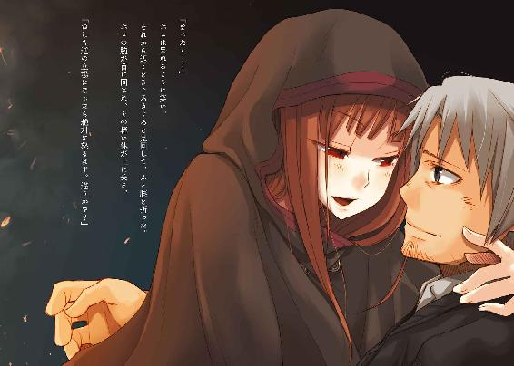

| 狼と香辛料 06 | |
| 支倉凍砂 | |
| KADOKAWA / アスキー・メディアワークス (2013) | |

本書（電子版）に掲載されているコンテンツ（ソフトウェア／プログラム／データ／情報を含む）の著作権およびその他の権利は、すべて株式会社アスキー・メディアワークスおよび正当な権利を有する第三者に帰属しています。
法律の定めがある場合または権利者の明示的な承諾がある場合を除き、これらのコンテンツを複製・転載、改変・編集、翻案・翻訳、放送・出版、公衆送信（送信可能化を含む）・再配信、販売・頒布、貸与等に使用することはできません。
ホロの歩幅は大きかった。
踵で石畳に穴を開けようかというくらいに大股で歩き、いつもはロレンスが足を緩めてホロの速度に合わせているがこの時はまったくの逆だった。
町は依然として混乱に満ちていて、横切る港では人の波が荒々しく波音を立てている。ロレンスはその波打ち際をホロに手を引かれてどうにか追いついていく。
見ようによっては、この混乱の中で暴徒に襲われた哀れな旅商人を保護しようという、心優しい修道女に手を引かれているように見えなくもないかもしれない。
だが、実際のところは、優しくもなんともない。
なにせ、ロレンスは顔の右半分を大きく腫れ上がらせているのに、つい先ほどホロにそこを再び殴られたばかりなのだから。
「ほれ、さっさと歩かぬか！」
今のホロには優しさのかけらも見当たらない。ぐいぐい手を引っ張り、少しでも遅れるとこの怒号だ。その顔は食事の最後に食べようと思っていた蜂蜜のたっぷりかかった木苺の粉菓子を床に落としてしまったかのようだ。
ただ、ロレンスも口を挟みにくい。
横取りされた、という顔ではないところが、どうにもホロの行動を諫めにくくしていた。
ホロが自分自身に腹を立てていることは、ロレンスにもよくわかっていたのだ。
とはいうものの、ロレンスはこのレノスの町で共に毛皮の売買を企んだエーブと、それこそ命を張ったやり取りをして怪我まで負った。挙句に、直後にはホロとの目もくらむようなやり取りをした。
さすがに少し、休憩したい。
「ちょっと、少し、少しでいい、ゆっくり歩いてくれないか」
大流血の惨事、というわけではなかったので貧血ではないにしても、鉈やナイフが飛び交うやり取りをしたあとの体のだるさは尋常ではない。足は鉛をつけたように重く、両腕はいつの間にか木で作られた模型と取り替えられたような気さえする。
それに、急いでも無駄なのだ。
ロレンスはそう思ってホロに言葉をかけたのだが、振り向いたホロの目は煮え立つ油のようにぎらついていた。
「歩く？ 歩くじゃと？ ならばぬしはわっちを迎えに来た時も歩いてきたのかや！」
レノスの町は混乱の極みにある。ホロがそう怒鳴ったところで、振り返る者は誰もいなかった。
「い、いや。走った。走ったよ」
ならばこのくらいなんでもないはずだと、ホロは口にすら出さず前に向きなおり、大股で歩いていく。ホロはロレンスの手をしっかりと握っているので、ホロが前に進むのであればロレンスはそのあとについていかないとならない。
デリンク商会にホロを迎えに行き、無理やりに説き伏せ、この旅を終わろうと告げたホロの考えを否定し、再び二人で商会の扉を開けたあの時のままなのだ。
ホロの細い指が一本一本ロレンスの指の間に入り、それがしっかりと絡まっている。手を握るのではなく、手をつなぐという字面そのもの。
だから、ロレンスはそれに引っ張られるほかない。ホロが前に進めばロレンスも前に進まざるを得ない。立ち止まれば引っ張られて指が痛く、その痛みをなくすにはホロの側に寄るほかないのだから。
そんな無理やりの行軍で、あっという間にアロルドの宿に戻ってくる。
「邪魔じゃ！」
宿の前では町の混乱を前に情報交換を繰り返している商人たちがたむろしていて、ホロはそれらを一喝して中に入っていく。
怒鳴られることには慣れっこの商人たちであってもつい道を譲ってしまうような剣幕だ。
商人たちはホロを見送って、ついでその後ろにくっついていくロレンスの姿をまじまじと見る。
次にこの町に行商に来た時は、きっと何かしら今日のことを言われるだろうなと思うと、少しだけ気が重かった。
「爺はどこにおる！」
宿に入ると、アロルドがいつもそこに座り、炭火に当たりながら温めたぶどう酒を飲んでいた場所には旅の職人らしき者が二人、座って話をしていた。
「じ、じじい？」
「髭の爺じゃ！ この宿の主はどこにおる！」
見た目の年齢ならば、ホロの三倍はありそうかという中年の職人二人は、あまりのホロの剣幕に顔を見合わせてから、気遣うように口を開いた。
「い、いや、俺たちは留守を頼まれているんだが、どこに行ったかまでは......」
「うぅぅぅぅ......」
唸るホロに、ロレンスすらたじろいでしまうが、椅子に座る職人二人はほとんどのけぞっている。
もしかしたら牙が覗いているのかもしれないが、怒った女の犬歯は異様に目につくものだ。
なにか言われたら、そう答えようとロレンスは考えていた。
「あの狐と共にかや......わっちらを虚仮にした報いを受けずにすむとでも......ぬしよ、行くぞ！」
ホロは叫び、再びロレンスの手を引いて宿の奥、そして階段を上っていく。
職人二人はずっと視線を向けてくる。
きっと、ロレンスたちの姿が見えなくなったら共に顔を見合わせることだろう。その様がありありと想像できて、なんとなく面白かった。
この宿の主たるアロルドが職人二人に留守を言いつけて外出など、考えられる可能性は一つしかない。ロレンスと毛皮の売買を企み、最後にはロレンスが付き合いきれないほど危険な橋を渡ろうと決意したエーブ。彼女と共に川を下ったのだろう。エーブの目的は港町のケルーベで毛皮を売ることだろうが、アロルドは南への巡礼の旅だと思われた。
アロルドも自身のことをあまり語らない人物なので、なにがそこまで彼を駆り立てるのかはわからない。エーブと親しそうなところから、なにか分かり合えるような出来事が昔あったのかもしれない。
人が故郷を懐かしく思うように、住みなれた家ほど居心地の良い場所はない。
色が黒ずみ、時間という澱が堆積したようなこの宿も、元々はアロルドが親方を務める革紐工場だったのだ。
それを捨ててまで南への巡礼の旅に出るのだから、よほどのことだ。
路銀と、困難な旅の道案内はエーブに頼るのだろう。
ホロが、その長い時間を生きてきた結果色々なことがあったように、人も人で短くない時間を生きている。
誰がなにを判断し、なにに重きを置くのかは本当に人それぞれだ。
世界という一枚の板にそれらの錘を載せ、どのように傾くのかを試すのが人生ならばこそ、ロレンスはデリンク商会にホロを迎えに行ったのだ。
だから、ロレンスは、部屋に入るや引っ張られっぱなしだったホロの手を逆に引っ張り、その体をこちらに向かせた。
「それで、ちょっと聞きたいんだがな」
ホロはロレンスに手を引っ張られるとは少しも思っていなかったようで、面白いくらい簡単にこちらを振り向き、その顔からは先ほどまでの激情が剝げ落ちて素の顔が覗いていた。
どこか動揺しているような、それでもなにか妙な決心があるような顔。
それを一言で表せば、迷っている顔だ。
なにに迷っているのかといえば、ロレンスにもなんとなく察しはつく。
「これからどうするつもりだ？」
しかし、そこはそれ。賢狼の二つ名を持つホロは、ロレンスが質問するとすぐについさっきまでの自分を取り戻していた。
「どうするつもりか、じゃと？」
答えようによってはその喉笛を嚙み切るぞ、とその言葉のあとに続いてもなんら違和感はない。
それでもロレンスは少しも怯まずに、ホロとつながったままの手を持ち上げて、指の背でホロの唇の近くについていた赤いものを払った。
きっと、ロレンスの顔についていた、固まりかけの血だろう。
ホロの顔は怒っていたが、一目でわかるくらい、その仮面が外れかけていた。
ホロは自分自身に怒っている。
自分の感情をもてあましているのだ。
「ああ。町を出るにせよ、旅の計画を練らないといけない」
「た......旅の計画と言ったかや！」
なんだか複雑そうな顔なのは、ホロ自身どうして自分がロレンスに怒鳴っているのか段々わからなくなってきているからかもしれない。
「思いつきで町の外に出るのはよくない」
「思いつきじゃと？ ぬしはあの狐を追いかけて利益を取り戻そうと思わぬのか！」
ずいっと顔を近づけてロレンスに詰め寄るホロだが、身長差があるのでどうしても上目遣いになってしまう。
これではまるで抱きしめてくれと近寄ってきているようにも見えるが、そんなことを口に出したら窓から外に放り投げられかねない。
「狐って、エーブのことか。その利益を？」
「取り戻すんじゃろうが！ ぬしをだまくらかして、その利益をぶんどったんじゃ。ならば報いを受けさせねばならぬ！」
「いつだったかの金のように？」
ロレンスが言うと、ホロはうなずく。
うなずいて、しばらく顔を上げなかったのは、怒った仮面がずれてしまったから直しているのだろう。
あの時はロレンスたちが完全に裏切られていた。
だが、今回はどうだろうか。
エーブは確かにロレンスを罠に嵌めてはいたが、それは気づかなかったロレンスが悪いと言えなくもない。
その上、ホロがここにいるということは、ロレンスはエーブとの取引を完全に解消したことになる。
実際に、ロレンスはエーブがやろうとしている自殺行為に等しい危険な取引からは降りた。
それはこの町の教会に完全に楯突く行為であり、とても見逃してもらえるようなものではないと思ったからだ。
しかし、いまやレノスの町はおそらく教会が予想していたよりも激しい混乱に見舞われ、この町で権力を築こうとしている教会はこの騒ぎの収拾に忙殺されていることだろう。
その上、自身の利益のために毛皮を持って川を下ろうとしている者たちはエーブだけではない。港の様子を見れば一目瞭然だ。
教会が企んでいたようにうまく物事は運ばず、エーブ一人をどうこうすればよいという状況にはなっていない。むしろエーブなどそのまま放置し、事態の収拾に努めたほうがよいと考えているに違いない。
そうなれば、エーブと共に毛皮売買の片棒を担ごうとしたロレンスを捕まえようなどとは思わないはずだ。
となると、エーブは危険を冒し博打を打って、勝ったことになる。
今更ロレンスがその利益に与ろうとして、受け取る権利があるだろうか。
ロレンスは、すぐに答えられる。
賭け金は引き上げ、それでホロを引き取った。だとすれば、博打を続けた者から利益を受け取るなど、筋違いのことに他ならない。
もちろん聡明なホロのことだから、そんなことにはとっくに気がついているはずだ。その上で、こんなことを言っているのだ。
それに、ホロはずっと自分自身に怒っている。それはなぜかといえば、ホロがわがままを言おうとしているからだ。
そのわがままとは？
問えば、簡単に答えは出てくる。
そしてそれは、ロレンスにとってとても嬉しいものだ。
「だ、大体、ぬしは悔しくないのかや！ 出し抜かれたんじゃろうが！」
反論されればすぐに言葉に詰まることがホロ自身わかっているから、話をずらしてこんなことを言い出した。
ロレンスは、少し顔を背け、うなずく。
ホロの剣幕に負けていると主張するように。
「それは、確かにそうだ。だが、実際問題として考えると、厳しいものがあるんだ」
「......どういうことじゃ」
決して本音を言い合わないが、噓のベールを一枚掛けたうえでのやり取りはお互いが信用できないからやっているわけではない。
どうやらお互いに意地っ張りのようなので、これくらいがちょうどよいのだ。
「エーブはおそらく周到に準備をしていた。船をあっという間に見つけたのも、偶然とは思えない。事前に根回しをしていたからだろう。そうなれば、とても今から出て追いつけるとは思えない。馬に乗って追いかけようとも、今頃馬屋は戦の時のように大賑わいだろうからな。とても用意などできない」
「ぬしの馬は」
「あれか？ あれは確かに力強いが、長距離を走らせたらどうなるかわからない。走る馬と、荷物を引く馬は違うんだ」
ロレンスが言うと、ホロは必死になにかを考えるようにうつむいてしまう。
ロレンスはもちろん指摘しない。
ホロ自身がデリンク商会で言ったように、狼の姿に戻って走れば、なによりも速いということを。
「それに、川を下った先のケルーベで毛皮の売りつけ先も決まっているような話をしていた。そうなると、エーブは当然教会に追われることを前提で話を進めていたのだから、逃げるための策も用意していただろうな」
これらは全て大袈裟なことではない。
逃げ道に考えられるのは大別して陸路と海路。陸路ならばまだしも、仮にエーブが海に出たらもう追いつく術はない。
行き先にもよるが、天気の都合が合えば海路は陸路の五倍は速い。
たとえホロであっても、厳しいだろう。
「そ、そうであってもわっちゃあ納得いかぬ。追いかけねば気がすまぬ」
だいぶ勢いがなくなりつつも、ホロはそう主張した。
ホロがエーブを追いかけることに執着するのは、半分は本気でエーブを憎く思っているからだとしても、もう半分は絶対に違う。
そして、その理由がホロ自身、自分に腹を立てる理由なのだ。
ホロはロレンスとの旅を終わろうと言った。
その理由は、仲良くなりすぎて、楽しさが摩滅して風化してしまうのが怖いからだと言った。
それに対してロレンスは、確かに永遠に楽しいままというのは無理だし、ずっとホロと旅を続けるのも無理だということも理解できたが、せめて旅の終わりは笑顔で迎えたいと思った。
もちろん、二日酔いすることがわかっていてもついつい酒を飲みすぎてしまうことがあるように、駄目だとは思っていてもずるずるとホロとの旅を引き延ばしたいという誘惑はある。そうなれば当然、ホロが恐れていたようなことになってしまう可能性も否定できはしない。
しかし、せめてホロの故郷までは旅を続けたい。だからホロの手を取りに、デリンク商会まで行ったのだ。
そんなやり取りを経た今、二人が望みつつも、口に出せないことはなにかというのは、言うまでもない。
旅を無闇に引き伸ばす、寄り道だ。
「気がすまない、と言われれば、そりゃあそうなんだがな......」
「そうじゃろう？」
ホロの顔が、怒りつつも嬉しそうになる。
世の中には色々な表情があるものだなと、ロレンスは少し感心してしまう。
「実際に赤字は出ているわけだしな......」
エーブはロレンスと取引解消せざるを得ないと判断した時、この宿の権利書を置いていった。ロレンスがホロを質草にして金を借りる際、その代価として差し出されたものであるから、その価値はほぼデリンク商会から借りられた金額に等しい。
ただ、若干足りていない。
デリンク商会のそもそもの目的は貴族であるエーブとの関係強化にあったから、その目的が果たせた今そのわずかな差額を気にしているとは思えなかったし、実際にそのようにロレンスは言われた。
それでも、その借りがいつ、どこでどのように作用するのかわからないのが商売の怖いところなのだ。
ロレンスとしては少し時間をおいてでも足りない分は返しておきたい。
そうすれば、当然赤字になる。
もちろん、許容できない範囲ではないのだが、それを聞いたホロは意を得たりと活気づく。
「うむ。それにぬしは血まで流しておるんじゃ。わっちの連れを傷つけるのはわっちを傷つけるのと同じじゃということをわからせてやる」
そんなことを言うホロに対し、つい先ほど、激情に駆られるままこの腫れ上がった顔を殴ったのは誰だったかと言おうとしたのを、ロレンスはぐっとこらえた。
「そうなると、追跡か......」
「うむ。久々の狩りじゃ」
ホロがにやりと笑う。
そこにいつものすごみがなかったのは、なんとか互いに本音を出さず、上手に取り繕って寄り道ができると思ったからかもしれない。
毒麦を巡るテレオの村での騒動のあと、ホロもロレンスも旅が長く続けばいいと願っていた。
思えば無邪気な願いだったが、それもまた過去の話。
人の心はどんどん変わる。
変わらないといえば、噓だらけのホロとのやり取りだけだ。
「だがな」
だから、ロレンスが言うとホロはすぐに顔を上げて真剣なまなざしを向けてきた。
「俺は商人だ。誇りも面子ももちろん持っているが、名誉だけで金を稼ぐ騎士とは違う。だから、損得でさらに損となりそうであれば追跡は中止する。そこはわかってくれよ？」
ホロとの旅を続けるために来年の夏くらいまでは行商を中断してもよいようにしてはいるが、それ以上となるとあちこちに支障が出始める。商売とは双方の都合のうえにあって初めて成り立つものだから、ロレンスの都合だけではどうにもならないことが多々ある。
それこそ、ホロがずっとついていきたい、と言ってくれるのなら話は別なのだが。
「わっちゃあぬしのために動くだけじゃからな。ぬしの気がそれですむのであれば......うむ。仕方ないじゃろう」
なんとも妙な言葉なのだが、ロレンスはうなずいて、理解のあるホロに感謝するように「助かる」と言っておく。
フードの下で耳がひくひくと動いているのは、このやり取りの馬鹿らしさにか、それとも大義名分を保ったまま少しだけ寄り道ができる嬉しさか。
きっと、両方だろう。
「それじゃあ、次は追いかけるその方法なんだが、どうする」
「どうするも、荷馬車じゃろう？」
ホロはそう言ってきたが、ロレンスは鼻の頭を搔いて、答えた。
「荷馬車だと五日くらいかかる。お前、耐えられるか？」
この町にようやく到着した時には、機嫌が悪くなるほど疲れていたホロだ。
ろくな休憩も挟まずにまたこの寒さの中を荷馬車で旅に出たら体調を崩しかねないし、ロレンスであっても嫌だ。
案の定、ホロの顔がにわかに曇る。
「う......また、五日も荷馬車の上かや......」
「もちろん途中にちょっとした町のような集落もあるし、宿もあるんだが、あまり、上品じゃない」
教会があればそこに泊まるのが最もよいのだが、残念ながらこの地方は教会だけがぽつんと建っていられるような場所ではない。
どこも木賃宿や、兼業の宿屋のようなものばかりだ。
垢と埃の匂いに満ちた中、盗賊とも山賊ともわからない旅の連中と共に眠るのはとてもではないが気がすすまない。
「そ、それならば、川はどうじゃ」
「川？」
「うむ。あの狐が川を下るのであれば、わっちらも川を行けばよい。実に自然な道理じゃ」
船ということなのだろうが、ロレンスはホロに手を引っ張られながら横切った港の様子を思い出して首をひねる。
あの状況で、暢気に旅人を乗せて川を下ってくれる船があるだろうか。
「船があるかどうか」
ロレンスが正直に言うと、ホロはつないだままの手を振って、付け加える。
「あるかどうかではない。見つけるんじゃ！」
そんな無茶な、と見返すロレンスに、ホロの目が妖しく光る。
嫌な予感がした。
ロレンスは逃げようとする。
しかし、回り込まれた。
「それとも、わっちの案は......ぬしの迷惑だったかや？」
今度は本当の上目遣い。
ロレンスも、やや本気で顔を背ける。
「迷惑だったら言ってくりゃれ？ わっちゃあぬしのためと思ってあの狐を追いかけようと思いんす......じゃが、わっちゃあ時折、一人先走ってしまうんじゃ。のう、ぬしよ」
そう言って、ロレンスとつないだ手を自分の胸元に引き寄せるのだ。
いつものホロに戻ってくれて嬉しい半面、その手ごわさはこれまでの比ではない。
なぜなら、ホロは新しい武器を手に入れたのだから。
「わっちゃあとても嬉しかったんじゃ」
突然声音を柔らかくしたホロが、うつむきがちになる。
その恐ろしい振る舞いを見て、ロレンスは、胸中でこう呟いた。
嗚呼。
「わっちゃあ嬉しかった。そう。ぬしがわっちを好きじゃと言ってくれて。じゃから──」
「わかった、わかった！ 船を探して川を下る！ これでいいだろう？」
ホロはわざとらしくびっくりしたような顔をして、それから、満面の笑顔になる。
胸元まで引き寄せたロレンスの手に口づけするような素振りを見せつつ、その唇の隙間からは鋭い牙が見えている。
ロレンスはホロとの勝負に負けた身といっても過言ではない。
捨て身にならざるを得なかったというのは大袈裟な表現ではないが、捨て身の手段を取ればその代償というものは必ず存在する。
それが、これだ。
ホロに、言葉として、はっきりと言ってしまった。
それが本当に本気だからこそ、ホロに対抗することができない。
血判を押した大事な契約書をホロに無担保で渡したようなものだ。
それを手にしてにやにや笑い、冗談でも破ろうとする素振りを見せればロレンスは慌てなければならない。
その契約書に書いてあることは、本当なのだから。
「では、さっさと荷造りするかや。それで」
手を下ろしたホロが、聞いてくる。
「......なんだ」
ロレンスが尋ね返すと、真顔でこう言った。
「せっかくの船旅じゃ。小麦のパンが食べたいの？」
その意見は、却下した。
ホロは猛烈に抗議する。
しかし、ロレンスは譲らない。
手綱はきっちりと握られていても、財布の紐だけは決して譲れないからだ。
「赤字だとさっき言ったばかりだろう」
「ならばこそじゃ。どうせ赤字ならば今更額が増えたところで」
「どういう理屈だ！」
ロレンスが言うと、ホロは唇を尖らせて睨んでくる。
「ぬしはわっちが好きなんじゃろうが」
どんな武器だって続けて使われれば対策くらいできる。
ロレンスは真正面から見返して、答えた。
「ああそうだ。だが、金も好きだからな」
その瞬間、表情をなくしたホロに、思い切り足を踏まれたのだった。
「おい馬鹿野郎！ 舳先を引っ込めろ！ こっちはイミドラ産の銀を積んでるんだぞ！」
「なんだと！ 先に入ったのはこっちだろうが！ てめえこそ引っ込めろ！」
そんな怒号がひっきりなしに飛び交って、船体同士がぶつかり合っては水しぶきが上がるのもしょっちゅうだ。
レノスの港はそれこそ蜂の巣を突ついたような騒ぎで、鬨の声とも断末魔の叫びともつかぬものが上がったかと思うと、遅れてなにかが水に落ちる音も聞こえてきた。
普段は一枚の水鏡のような水面が、あらん限りに波打っている。
そんな中、怒号も罵声も振り切って、我先にと相争って港を出ていく船はどれも毛皮を積んだ船だろう。どの船もいつもならば漕ぎ手が一人のところを、人を雇っての超特急だ。
あらゆる貿易において、もっとも大きな利益を上げられるのはいつだって一番乗りをした者だから、当然といえば当然の行為といえる。
ただ、ロレンスはそんな彼らの奮闘を冷めた目で見つめていた。
きっと、一番乗りは銀貨にして数千枚分も毛皮を仕入れた没落貴族だからだ。
「ほれ、見惚れておらんで早く船を探しんす！」
「今更だが、本当に船で行くのか？」
この状況では、暢気に旅人を乗せてくれるような船を摑まえるのはちょっとした幸運かもしれない。出港する船の列がまるで蟻の行列のようになっている。
「荷馬車だと時間もかかるし大変だと言ったのはぬしじゃろうが」
「そりゃそうだが......」
ここからはよく見えないが、港から川に出る辺りからは時折ものすごい声が聞こえてくる。
おそらく毛皮の流出を止めたい者たちが港を封鎖しようとしているのだ。
「......」
「どうした？」
「乗り気に見えぬ」
「いや、そんなことは、ない」
子供が聞いたって噓だとわかるような返事に、ホロは片眉をつり上げて睨んでくる。
「ならば、さっさと船を探してきんす」
馬を乗せて川を下れるような船はとても見つかりそうにないと早々にわかっていたので、全ての馬を貸し出して開店休業状態の馬屋に預けてきた。荷台の部分は馬屋の口利きで港の荷物運搬用に貸し出している。
渋っていてももはや荷馬車を駆っての旅には出られない。
港町のケルーベならば冬を越すために暇をもてあました商人たちがうようよいるだろうから、まったく商売の足しにならないともいえないだろう。
ロレンスは、仕方ないか、と胸中で呟いた。
「わかったわかった、じゃあ、船を探しておくから、これで......その辺の露店で食料を調達してきてくれ。大体三日分あれば十分だ。酒は、なるべく強いやつをな」
財布から取り出したぴかぴかの銀貨を二枚ほどホロに手渡した。
「小麦のパンは？」
だいぶ物の相場を把握してきたホロは、それで小麦のパンを買えないことがわかっている。
「パンはパン種を上手に膨らませないといけない。なら、パンを買う金も同じことだろうさ」
「......」
小麦のパンは宿でのやり取りで諦めている。
ホロは悔しそうにうなずきつつも、本気で悔しそうにはしていない。
だから、すぐに顔を上げてこんなことを言った。
「じゃが、なぜ強い酒を？」
ロレンスがどちらかというと飲みやすい酒のほうが好みであることを把握してくれているらしい。服の仕立て屋や靴屋ならずとも、店に行ったら自分の好みを覚えていてもらえるのは嬉しいことだ。
ただ、もちろんそんなことは顔に出さず、短く答えた。
「そのうち理由がわかるさ」
ホロはその言葉にきょとんとしたあと、なにを勘違いしたのか嬉しそうに腕を叩いてきた。
「思い切り負けさせてうんと良い酒を買ってこよう」
「量はいらないからな」
「うむ。ではこの辺で落ち合えばよいかや」
「ああ......つっ」
ロレンスはうなずき、その拍子にエーブに殴られて腫れ上がっている頰が痛んでしまった。
青紫色に腫れ上がり、薬屋で軟膏でも調合してもらうべきかと悩むところだが、ふとホロの顔に気がついて思いなおした。
なんだかんだいって心配そうにしてくれるから、このままのほうがよいかもしれない。
「......なにを考えておるか丸わかりなんじゃが」
「正直は美徳だと小さい頃に教えられた」
「そう思うかや？」
ホロは心のこもっていない笑顔のまま首をかしげた。
「いや、師匠からは正直は愚鈍だと教えられた気もする」
ホロが鼻で笑い、からかうようにこう言った。
「あまりに愚鈍じゃからついついからかってしまいんす」
そして、舞うように身を翻して雑踏の中を歩いていった。
ロレンスは肩をすくめてため息をつき、頭を搔く。
口元が笑ってしまうのは、こんなやり取りが楽しいからに他ならない。
しかし、とロレンスは思う。
「どうにかして主導権を取り返せないものかな」
巻き上げられた証文なら取り返す自信があるのだが、とはある種の負け惜しみだったかもしれない。
お前のことが好きなんだ。
つい先刻のことなのに、もうはるか昔にとっくにホロに向かって言っていたような気がするその言葉。それを思い返すたびに、ロレンスはなんともいえぬ気持ちにさいなまれる。
息苦しくなるような、顔が引きつるような変な気持ちだ。
かといってそれが悪い気持ちとは思わない。
あやふやだったものが明確な形になったような安心感がある。
ほんの少し、いや、かなり恥ずかしいだけかもしれない。
ちょっとした後悔があるのは、勝負に負けた、という気持ちがあるからだろう。
「なんの勝負なんだ」
ロレンスは自嘲するように笑い、ホロが消えていったほうを見る。
肩をすくめてため息をつくと、桟橋のほうへ歩いていったのだった。
幸いなというか、意外なことに船はすぐに見つかった。
港は我先にと船を繰り出す連中でごった返していたが、落ち着いて探してみれば普段どおりに荷を積んでいる船もたくさんあり、そのうちの一つに声をかけたらあっさりと了承を得られたのだ。船はどこも忙しそうだったのでぼったくられるかとも思ったが、料金は良心的だった。
女連れで、と言った途端にいい年をした船主の顔が緩んだのは気がつかなかったことにする。
エーブが顔を隠し、女であることを隠して商売にいそしんでいる理由がわかるというものだ。
「しかし、ケルーベなんかになんの用かね。この季節じゃあ、今更行ってもまともな船は出ないぜ」
船主はイブン・ラグーサというあまり馴染みのない発音の名前で、西のほうの海岸線を北に上ったところにある、二重の意味で寒村の出だという。
北の地の人間といえば引き締まった体と雪焼けした顔、それに無口で鋭い目つきという印象があったが、ラグーサはでっぷり肥えた体にでかい声、それに酒焼けなのか赤ら顔だった。
「ご多分に漏れず毛皮の絡みです」
「ほう？」
ラグーサはロレンスを上から下までなめるように見て、ほとんど肩に埋没している首をひねる。
「荷を持っているようには見えないが」
「手を組んでいたはずの相手に抜け駆けされましてね」
ロレンスが腫れた自分の顔を指差した途端に大笑いしたラグーサの顔は、まるっきり河豚のようだ。
そんなこともあるさ、とロレンスの肩を叩き、「で、連れは？」と聞いてきた。
「今、食料を買いに──」
と、ロレンスが露店の並ぶ町のほうを振り向こうとした瞬間、脇に気配を感じて目をやった。
もう何十年も側にいるような気がする、ホロだ。
「こいつです」
「ほう！ こりゃあ良い積荷だ！」
ホロを見るなりラグーサは大声で手を叩き、あまりの大声にホロがびくりと肩をすくめた。
船に乗る者は概して声がでかい。
人の眉根に皺が寄る音まで聞こえるというホロの耳にはうるさすぎるかもしれない。
「ちなみに、名は？」
直接ホロに聞かず、ロレンスにそう聞いてきたのは夫婦とでも思ったからか。
少なくとも、いきなりホロを口説こうとする両替商とは違うらしい。
ホロは肩からパンかなにかの詰まっているのだろう袋を提げ、小さな樽を抱えている。お使いを頼まれた見習い修道女のようなホロが、ロレンスのことを見上げてくる。
人前では一応ロレンスのことを立ててくれるのが、ホロにからかわれても怒ることのできない原因のひとつなのだろうと思う。
「ホロです」
「ほほう、いい名だ！ よろしく。ローム川の主と呼ばれるラグーサだ」
男というものはいつだって見目麗しい娘の前では見栄を張りたがる。
ホロくらいの娘がいてもおかしくはないだろうラグーサは、そんなことを言って胸を張り、豆だらけの分厚い手を差し出した。
「しかし、これで今回の川下りは安全を保障されたようなものだ」
「と言うと？」
にかっと歯を剝いたラグーサは、がははと笑ってホロの細い肩を叩きながらこう言った。
「船首に頂き船の安全を祈るのは美人と相場が決まっている！」
確かに長距離貿易用の船の船首には大抵女性を象った像が置かれている。
それは異教の女神であったり、教会の歴史の中で列聖された女性たちだったりするが、船を守るのは確かにいつも女のような気がするし、船の名前も女性名が多い。
ただ、陸地を行くならば安全祈願にはもってこいのホロであっても、元が狼なので水場ではちょっと頼りない。
それに、犬搔きで泳ぐホロの姿を想像してしまって危うく笑い出すところだった。
「それで準備はいいのかい。うちはよそみたいに毛皮で一儲けを企んでいるわけじゃないが、急ぎの荷があってね」
「あ、ええ、大丈夫です。食べ物は買えたんだろ？」
ロレンスがホロに尋ねると、ホロは小さくうなずいた。
狼のくせに、猫をかぶるのがとてもうまい。
「じゃあ適当に空いてるところに座っててくれ。料金は後払いで結構」
料金後払いの習慣は、周りを水に囲まれタダ乗りが難しい船ならではだ。
「ま、大船に乗ったつもりでいてくれたまえ」
そして、こう言って大笑いするのも全ての船乗りに共通だった。
ラグーサの船は荷を積んで川を上り下りする中では少し小さめかもしれない。
帆はなく、底は平べったく、そのくせ船体は細長い。船体がさらに小さくなると、腕の悪い船頭では転覆することもままあるはずだ。
船の真ん中にはホロがすっぽり収まるような大きさの麻袋が腰の高さあたりまで積まれていて、その中身は小麦と豆だというのが袋の口からこぼれているものを見てわかった。
それから、そんな袋の山の隣、船尾側のほうには木箱がいくつか積まれていた。
中身を開けて見るようなことはさすがにできないので正確なことはわからなかったが、なんの紋章なのか、焼印の押された規格の揃った木箱だったので、それなりに高価な物が入っているのだろう。急ぎの荷というのは、間違いなくこれだ。商人の常としてついつい中身が気になってしまう。
川の上流から運ばれてきたのだとしたら、銀山か銅山からの地金か、あるいは鉱山の近くで鋳造された輸出用の小額貨幣かもしれない。錫や鉄ならご丁寧に木箱には入れないし、宝石ならば護衛が一切いないのはちょっとおかしいからだ。
全体的に船の容積に比べて荷が少ないのは、川の水が減っているからだろう。
この季節になると雨が少なくなり、源流の山のほうでは雪が降るせいで川が凍りつく。そうして水の量が減るために荷を積みすぎると容易に座礁を引き起こす。雨の日に荷馬車が道のぬかるみに車輪をとられるのと同じくらい、座礁が当たり前のことになる。座礁すれば最悪荷物を川に捨てなければならなくなるし、なによりも他の船の行き来の妨げになるので、船乗りとしての名誉に関わる。
長い年月同じ川で船を操る者たちの中には、川がどんな状況でも目を閉じて操舵できる者がいるという。
さて、ラグーサはどうなのか。
そんなことを考えながら、船首の空いた場所に腰を下ろし、背負っていた毛布などを置いた。
港の水面は酔っ払いのように波打っているので、船は絶えず少し揺れている。久しぶりのその感覚にちょっとした懐かしさを感じて、苦笑いも出る。昔、初めて船に乗った時はいつひっくり返るかとびくびくしながら船の縁を摑んでいたものだ。
そして、どうやらそれはロレンスの肝が特別細かったからというわけではないらしい。
ホロがいつになく真剣な顔で、そろりそろりとロレンスの隣に腰を下ろしたのを見て笑ってしまった。それからホロは抱えていた酒樽を置き、良い匂いのする袋を肩から下ろし、ようやくロレンスの視線に気がついて睨み返してくる。
「笑うのかや」
声が低いのは、きっと演技ではない。
「俺も同じようにおっかなびっくりだったな、と思ってな」
「むう......。水が苦手というわけではありんせんが......やはり、揺れると怖い」
そんなふうにあっさりと怖がっているのを認めたのは意外だった。
ロレンスが驚いていると、ホロはちょっとむっとするように唇を尖らせる。
「弱みを晒すのは、ぬしを信頼するからじゃというのに」
「唇の下で、牙が光ってるぞ」
そう指摘すると、ホロは口元を押さえて意地悪く笑った。きっと怖いのは本当だろうが、それを口にしたのはわざとだ。
素直なのか素直じゃないのか本当によくわからない。
そう思った瞬間、そのホロがひょいと体を起こした。
「いかぬ。あまりぬしと仲良くなってはならぬというのに」
言って、悲しそうに顔を背けた。どんな楽しいことであっても繰り返していればやがて慣れて感動が薄れていくのが怖いと言ったホロだ。ロレンスは一瞬、熱いものに触れてしまったように驚いた。
ただ、今のホロがそんなことを真剣に言っているわけではないとすぐに思いなおす。
言葉に出して確認したわけではなくとも、二人の間で本当に避けなければならないことはなにかとわかっている。落とし穴がどこにあるかわからなければ怖くて歩くこともままならないが、崖の場所がわかってさえいれば、近くを散歩するくらい造作はない。
そのことを敢えて口にするのは、ホロが自分を戒めるわけでも、ロレンスに注意を喚起するわけでもない。
むしろその逆だろうと思った。
旅は笑顔で終える。そう約束したのだから、怖いものなどなにもない。
だからロレンスは落ち着いて、こう応えた。
「戯曲に出てきそうな台詞だな」
それも禁断の恋を扱った、とはさすがに言えないので心の奥底で小さく呟くだけ。
対するホロは、まったく慌てないロレンスの反応がつまらなかったのか、あっさりとロレンスのほうを向く。
「......少しは付き合ってくりゃれ？」
「そういう悪質な顔をつくらなければな」
上目遣いに寂しそうな顔をしていたホロは、けたけたと笑ってから舌打ちする。
まったくよく表情の変わる狼だ、とロレンスは呆れ気味に笑った。
それからほどなくして大きな足音と共にラグーサが桟橋を走ってくると、例のごとく大声で叫んだ。
「さて、それではそろそろ出港だ！」
桟橋にくくりつけられていた縄を手早く解き船の上に投げ入れると、川に飛び込む子供のように船に飛び乗ったから一大事だ。お世辞にも細身とはいえないラグーサがそんなことをすれば船が揺れるのは世の道理。船がぐらりと揺れ、沈没するのではと思うほど傾いた。
これにはロレンスですら本気でひやりとした。ホロに至ってはこれ以上ないくらいに真剣な顔つきで体を強張らせている。
その手がロレンスの服をしっかり摑んでいるのも、冗談ではないだろう。
「三国一の船捌き、とくとご覧あれ！」
威勢のいい掛け声と共にラグーサは長い棹を川底に突き立て、ただでさえ赤い顔をさらに赤くして力を込めた。
掛け声に反してしばし船はなんの反応も見せなかったが、やがてゆっくりと船尾が桟橋から離れていき、ラグーサは棹を軽く上げ、今度は少し方向を変えて再び棹を突き立てる。
荷馬車に積めば馬が四頭は必要であろう荷物を積んだ船が、一人の力で動いていく。
船乗りには大言壮語する者が多いといわれるが、それもわかるような気がする。
この船は、ラグーサ一人が動かしているのだから。
ついに船は桟橋を離れ、ラグーサの棹捌きによって川へと続く航路に出た。
他にもたくさんの船が相変わらず行き来しているものの、不思議なことにそれらと少しもぶつかることなく、波打つ水の上を上手に滑っていく。
すれ違ったり通り過ぎたりする船のほとんどが顔見知りの船らしく、気軽に挨拶を交わしては、時折罵声も交えて棹を上げ、突き立てていく。
徐々に速度が出てきて、細長い船はしだいに安定さを増し、ついに港の出口に差しかかる。
川と港の境目にある木造の見張り塔では、町から毛皮の流出を防ぎたい一団の者が数人、町の兵の制止を突破して最上段に上り、船を進める者たちに呪いの言葉を投げつけていた。
栄枯盛衰は昔から繰り返されてきたことだ。
鎖帷子を身に着け鉄兜をかぶった一団が塔の入り口にたどり着く。きっと臨時で雇われた騎士や傭兵だろう。
ロレンスたちの乗った船が塔をぐるりと回り、川に出る頃には塔の一番上で呪いの言葉を投げていた者があっという間に取り押さえられていた。彼らに同情をする気はないが、せめて人死にが出ないようにとは願いたい。
ただ、それらを見ているとこの町で起こったことがぼんやりと頭に浮かんでは消えていった。
彼らが今まさに人生の一大事であるように、ロレンスもつい先刻まで一大事だったのだ。
ホロがこの旅を終わろうと言った時には本当に驚いたし、その理由にも驚いた。
結局はロレンスのわがままを貫いた感じだが、きっとホロだって望んでいたことだと思う。
そんなことを思い出すと、慣れない船にちょっと弱気になっているらしいホロに優しくしてやろうとも思う。
しかし、そんな親切心はいつだって無駄になるものだ。
いつの間にかホロは立ちなおっていたらしく、依然としてロレンスの服を摑んではいるものの、そんなことなど忘れているかのような興味津々の顔で船の行く先を見つめている。
その横顔は、まるっきり少年のようだった。
「うん？」
そして、ふとロレンスの視線に気がつくと、ホロはそんな声と共に首をかしげて見上げてきた。
自分が他人の目にどのように映るのかということを把握しきっているかのような、ホロの計算されつくした仕草。
ロレンスはげんなりとして、ホロとは反対側を向き、過ぎ去っていくレノスの町を見た。
くつくつという笑い声が聞こえてくる。
摑んでいたロレンスの服から手を離したホロは、くすぐったそうに言った。
「ぬしの優しさは怖い怖い」
首をすくめて楽しそうに笑うホロの口元から、白い吐息が後ろに流れていく。その小悪魔のような様に尻尾の毛をむしりたくなったとしても、仕方のないことだろう。
しかし、川の上のこの寒さだ。ホロの尻尾を失うわけにはいかない。
ロレンスは、ゆっくりと言葉を返した。
「俺はお前の笑顔が怖いよ」
「たわけ」
ホロの楽しそうな笑顔が、フードの下で輝いていた。
レノスの町の側を流れ、東から西に向かって延々と伸びるローム川は、ご多分に漏れず草原の合間をゆっくりと流れるなんの変哲もない川だ。
春や初夏の水量の多い時期は、それこそ巨大な大蛇がのたくっているようにも見えるほどの木材の列が川を下る壮観な光景も見られるらしいが、今はせいぜいが前後に行儀よく並んでいる船の列が見えるだけだ。
あとは、川の水を飲む羊の群れや、川沿いを歩く旅人たち。それに、頭上をゆっくりと流れる白い雲。
好奇心が旺盛ならば飽きるのもまた早いホロが、うんざりとした顔で船の縁に顎を載せて寄りかかり、手を時折水面につけてはため息をつくのもわからないことではなかった。
「暇じゃな」
ぽつりと呟き、同じ毛布に包まったままうつらうつらしていたロレンスは目を覚まし、欠伸をしながら伸びをする。
「く......。手綱を握っていなくていいと実に楽だな」
道に無数に開いている穴に注意しなくていいし、積荷を狙う鷹やトンビの心配もない。
なにより、眠くなっても一人だけ目をこすりながら起きている必要がなく、隣からいびきが聞こえてきても決してイライラすることがない。
この先ずっと船で旅をしたいくらいだが、荷馬車の時からすでに暇をもてあましているホロには不満らしい。鏡のような水面を切っていた手を上げ、ぴっぴっとロレンスに向けてしぶきを飛ばしてくる。
冬の水は冷たい。
ロレンスが顔をしかめると、ホロは体の向きを変えて縁にもたれ、ロレンスの足の上に置いていた尻尾を自分の手元に引き寄せる。
積荷の向こう側ではラグーサがうたた寝しているから、特に気にすることもない。
「羊の数でも数えていたらどうだ。きっとそのうち眠くなる」
「さっきまで数えておったがな、七十二匹あたりで飽きた」
ざっざっと手で大まかに尻尾の毛を梳いてから、絡まった毛や付いているごみを取り払う。
その都度蚤らしきものがぴょんぴょん飛び出していくが、気にしたところで仕方がない。
夏場などは蚤と虱が飛び交う音がうるさくて夜も眠れないといった話が本当にあるくらいだ。
「それに、羊を数えておったら腹が減ってしまいんす」
「それはよくないな。数えるのはやめたほうがいい」
ホロは捕まえた蚤をロレンスのほうに投げつけてくる。
どうせ同じ毛布を使っているのだから意味のないことだ。
「じゃが......」
と、尻尾を抱き上げると顔をふかふかの毛の中に沈め、口で毛並みを整えながら、ホロは言った。
「川を下ってあの狐をとっちめたら、それから先はわっちらはどうするんじゃ？」
喋りながらも器用に尻尾の毛を整えていたが、喋り終えて口を離すと口の周りが毛だらけだった。春先は抜け毛を覚悟しないといけないかもしれない。
ロレンスはそんなことを思いながら、何度か手で払っているもののなかなか取れないらしい毛を取ってやった。
「ほら、じっとしてろ......その先、か」
「うん。その、先」
毛を取ってもらいながら目を細め、どこか甘えるように言ったのはわざとだろうが、それはからかうというよりも危ない綱渡りから目をそらそうとすることに近い。
レノスの町で、ホロとロレンスができることとできないことと、最善の解決策はなにかということの結論を出した。
その結論の中に、本当の意味での「その先」というものは、ない。
「食べ物や娯楽は豊富だろうから、山のほうの雪が溶ける春まで待ってもいい。あるいは、急ぐなら馬でも仕立ててレノスまで戻って、北上だな」
「ロエフの山奥、じゃったな」
ホロが来たというその方向。
急げば一ヶ月足らず。本当に本気を出せば、数日のうちに旅は終わるだろう。
ホロはあからさまに少女のような仕草で、自分の尻尾の毛をつまんでいる。
ロレンスも学習した。
噓をついて欲しい、とねだっているのだ。
「だが、山も人が入って様変わりしてるだろうからな。ロエフ川を上っていっても、道に迷いかねない」
「......うむ？」
まったく手のかかる賢狼様だと、まだ口の端についていた焦げ茶色の毛を取ってやってから、あとを続けた。
「ニョッヒラまで行けば、わかるんだろう？ レノスからニョッヒラなら、およそ十日。春を待たないなら、危ないから村や町をなるべく通る道を選んで二十日」
言って、指折り数えてみると長いのか短いのかわからない。
滞在は短く、道程は速く。
そればかりを念頭に置いてきた行商の旅のせいで、これでも十分に過ぎるほどゆったりとしているという、どこか罪悪感にも似た感覚がある。行商において、商品を売る時の値段は五割が関税で三割が食費や滞在費等の旅費で二割が儲けになるのだから、旅費を増やすことになるゆっくりとした旅路など罪悪以外の何物でもない。
だが、きっとこの程度の日数は、終わってみれば後悔するほどに短いだろう。
指折り数えて、止まった指を眺めて思う。
どうにかして、これを折る方法はないだろうかと。
「ニョッヒラでのんびり湯に浸かって、十日」
ホロが手を伸ばしてきて、ロレンスの指を折った。
手を重ね合わせているその様は、二人で凍った手を温めている夫婦に見えなくもない。
確かに、ロレンスは顔がほころび、心が温まった。
ホロが顔を上げ、ロレンスに微笑みかける。
まったく、恐ろしい笑顔だ。
ニョッヒラで十日の滞在。それは確かに顔がほころび心が温まるに相応しいものだ。
温泉地で十日の滞在などいくらかかるかわかったものではない。滞在客の足元を見た宿泊費に、まずくて高いという最悪の食事。信じられない値段の真水に、薄くて臭い酒。入湯税もかかるうえに効き目の強い温泉に浸かれば一日に二回は医師の検診を受けなければならない。湯水のように金がかかるとはまさしくこのこと。
それでも、こんな頃合で言われたらそれを否定することなどできない。
賢狼は、どこまでも狡猾だ。
奥歯にたくさん物を詰め込んで表現するのなら、顔がほころんで、心も温まるというものだ！
「その顔は、金を数えておる顔じゃな？」
重ねた手を引き寄せて、ホロは軽く頰ずりすると意地悪げにそう言った。
尻尾がゆらゆらと挑発するように揺れている。
いっそのことロレンスはそれを摑んで頰ずりしてやろうかとも思う。
「わっちが行った頃から人はいたし、時折人の姿でも入っておったからの、多少の仕組みはわかっておる。じゃが、わっちゃあヨイツの賢狼ホロじゃ。誰もおらぬところであれば、いつもの食費にちょっと足せばすむじゃろう？」
確かにそのとおりだが、温泉は湯の奇跡に与って一分一秒でも長生きをしようと願う殺したって死なないような連中が集う場所だ。
ほとんど巡礼の様相を呈しているせいで、苦労すればするほど効能があるといわれ、なぜよりによってそんなところに、と言われるほど辺鄙な場所にある湯を見つけるのがある種の名誉になっている。
果たしてそんな中でホロが誰にも見つかっていない湯を見つけることができるのかは甚だ怪しいところだが、一つだけ確かなことがある。
いつもの食費にちょっとだけ足せばいいの『ちょっと』は、絶対にちょっとではないということだ。
「お前が食費にちょっと足してくれというたびに、俺の夢はちょっと遠ざかるんだが」
釘を刺さなければなにをねだられるかわからない。
途端、ホロがいい度胸だといった顔つきをするが、そこは譲れない。
たとえ、ホロに面と向かって好きだと言って完全な劣勢であっても、だ。
「色々とぬしをからかう言葉をわっちゃあ持っておるがな、その前に、じゃ」
こほんと小さく咳払いをしてから、ばさっと尻尾を振ってこう言った。
「ぬしは店を持つ夢を蹴ってわっちを迎えに来てくれたのでは？」
試すような上目遣い。
琥珀色の瞳が、薄い唇の隙間から漏れる白い息の向こうで、光っている。
「ひとまず、蹴っただけだ。諦めたわけではない」
そんな言い訳が通るかとばかりにホロが大きく息を吐く。
それに、実際、その言葉のいくらかは噓だ。
人の噓を簡単に見抜くホロにはとっくに見抜かれているだろうが、それを指摘される前に白状することにした。
「だが、まあ、多少は本気で蹴った」
「曖昧な言葉で抜け道を残しておくのは商人の性かや」
呆れたように言われ、「本気で蹴りました」と言い換える。
「ならば無駄遣いをしてもいいじゃろうが、と言うのは、ぬしが蹴った理由を聞いてからにしよう」
ありがたき幸せ、とでも答えるべきかと悩んだが、ロレンスは肩をすくめてこう答えた。
「店を持ったら、きっと商売の楽しさは半減してしまうだろうからな」
「......うん？」
「いざ店を持てそうになったら、漠然と感じたんだ。店を手に入れたらもうそこで冒険は終わり、というようなことを」
金儲けの匂いがすれば引きつけられないわけではない。
ただ、なににも優先して、どんな嵐の中でも決して道に迷うことなくまっすぐそこに向かうように、金儲けをしたいとはもう思わなくなった。
手に入れたら、もったいないような気がしてしまった。
ずっと追いかけてきたからこそ、ひたすらそこに向かってきたからこそ。
ホロはつい今しがたまでの冗談めかした表情を一掃して、それから、「ふむ」と呟いた。
どんな楽しいことでもいつかはつまらなくなってしまう、ということを長寿ゆえに恐れているホロにも通じることだろう。
「まあ、それでも長年の夢だったからこそそう思う、というところも斟酌して欲しい。店が手に入るのなら、そりゃあ嬉しくないことはないからな」
ゆっくりとうなずいたホロは、しかし、少し困惑した顔でこう言った。
「それは......ふむ。災難じゃったな」
「ああ......ああ？ 災難？」
まったく意味のわからない発言に、ロレンスはホロを見つめて聞き返すと、ホロはさも当たり前といった顔をしていた。
「それはそうじゃろう。理由はあれど、それなりに本気で夢を蹴ってわっちを迎えに来てくれたようじゃからな。ふむ。これはもう、二兎追う者は一兎も得ずという言葉を作った人すら肩をすくめてしまうものじゃろう？」
ロレンスはぽかんと口が開いているのを実感しながらも、それを閉じることすらしないで頭を回転させた。
何度検算しても、ホロの言葉が指し示す事実は一つしかない。
一兎を諦めてもう一兎を追ったが、手に入らなかったということだ。
さすがにロレンスの頭に財布を落としたような嫌な感覚が湧き上がる。
冗談にしても、やめて欲しい。
そう思って一度顔を背けてもう一度ホロのほうを見なおすと、その顔は病人を哀れむようなものだった。
「ぬしよ、大丈夫かや？ しっかりしてくりゃれ。だって、ぬしはなにも手に入れておらぬじゃろう？」
それが怒りだったのか悲しみだったのか、はたまたそれ以外のなにかか。
ホロがまったく異国の言語を喋っているように思えた瞬間、その唇がにゅっと両端につり上がり、意地悪な舌がちろりと覗いた。
「くふ。だって、ぬしはわっちに手を出しておらぬじゃないかや。手を伸ばさずに手に入れるとは、ぬしはどんな不思議な手を使いんす？」
この時ほどホロを水の中に沈めたいと思った時はない。
その主たる理由は、自分のもっとも見られたくないような顔を見られているからだ。
「くっくっく。ま、縄張りも実際に縄を張っておるわけじゃありんせん。そこのところをどう思うかは、ぬししだいじゃな」
ホロが体を寄せてきて、狼が狼に寄り添うように、顔を上に向けて言ってくる。
その白く温かい息が首筋に当たる。
そちらを見たら負けだと思っている。
そして、そう思っている時点できっと負けなのだ。
「ま、ぬしが本気で夢を諦めたわけではないのはわっちも望むところじゃ。それに、店を持って満足したら、次は弟子でも取ればよかろう？ これがなかなかに奥深いことでな、まず心休まる日など来ないじゃろうな」
ホロはそう言って、けらけらと笑いながら顔を離した。
散々その身を食われて骨だけになった魚というのはこういう気分なのだろうと思った。
今更じたばたしたって事態は好転しない。
せめてこれ以上の無様は晒さぬようにと深呼吸をして、吐いた。
ホロは、余韻を楽しむように静かに笑っていた。
「しかし、お前弟子なんて取ってたのか」
まだ若干声が強張っていたが、ホロはそこのところは見逃してくれた。
「む？ うむ。わっちゃあヨイツの賢狼ホロじゃからな。わっちに教えを請う連中は多かった」
「へえ」
ロレンスはつい先刻までのやり取りも忘れて、素直に感心してしまった。
すると、それが意外だったのかホロは急にはにかんだ。
もしかしたら、からかうのがうまくいきすぎたのを相殺するために、わざと大袈裟なことを言ったのかもしれない。
「もっとも、あれらを弟子と呼ぶかは甚だ怪しいんじゃが......少なくとも連中はそう称しておったような気がする。まあ、とにかくわっちゃあそんな連中の一番上におったんじゃ。ぬしなど新しくわっちの教えを受けようと思えば、ふむ。百は順番を待たねばならんな」
一転、得意げにホロは言うが、いつものようにロレンスはそれを笑うことができない。
よくよく考えれば、ホロはそういう存在なのだ。
ただ、そこにあるはずの威厳にどうしても違和感を覚えてしまうのは、数々のホロの記憶が蘇るからだろう。
泣いて、笑って、怒って、すねたりするようなホロが雲の上の存在だとは、今更言われてもまったく実感などできはしない。
ロレンスがそんなことを思っていると、ホロは柔らかな笑顔に変えてロレンスの手を取った。
「もちろん、ぬしはわっちに教えを請うどころか、わっちの手綱を握ろうと必死な珍しいたわけじゃからな。それが成功するかは絶望的じゃが、わっちと同じ目線の高さにいようとしておることは間違いない。わっちゃあずっと山の上に一人でおった。もう下から目を向けられるのはこりごりじゃ」
神として崇められることは、孤独になるということだ。
ホロと出会った当初、ホロは友達を探しに旅に出たと言っていたことを思い出す。
ホロは笑顔のままだが、少し寂しそうに笑っている。
「ほれ、ぬしはわっちを迎えに来てくれたじゃろう？」
言葉こそロレンスをからかうそれだが、寂しそうな笑顔のまま言われたらまさかからかわれているとは思わない。
むしろロレンスは苦笑いしてしまい、ホロがそれに不機嫌そうな顔をした。
ホロの肩に腕を回して抱き寄せると、ロレンスの腕の下でため息を小さく一つつく。
それが満足げなものに聞こえたのは、気のせいではないだろう。
「わっちゃあ今は......」
と、再びもそりと動いて上半身を回転させると、ちょうど顔が上と下で向き合う形となった。
「こうやって、下からぬしを見上げるのがな、とてもとても、楽しい」
すぐ側にある、どちらかと問われれば、可愛らしい少女の上目遣い。
ホロとのやり取りには慣れても、これだけはなかなか慣れることができない。
「そこから見上げる俺の顔は、さぞ間抜け顔だろうからな」
だからロレンスが顔をしかめてそう答えると、狼少女はご満悦の様子でひっしとしがみついてくる。
ホロの尻尾がわさわさと揺れるたびに、こんな尻尾にいられるかとばかりに蚤が飛んでいった。さもありなん、とロレンスが胸中で呟くと、急に胸元が温かくなる。ホロが、顔を押しつけたまま笑ったのだ。
ロレンスも笑う。確かに、こんな様を見られたらどんな忠実な弟子であっても師匠とは呼んでくれないだろう馬鹿なやり取りだ。
だが、ホロが望んでいるのだから仕方がない。
ロレンスは、せめてもの言い訳として、胸中でそう言ったのだった。
ふと、積荷の向こうで人の動いた気配がしたと思ったら、腕枕のあとなのか、頰にくっきりと妙な跡をつけたラグーサが大きく伸びをしていた。
ロレンスと目が合うと、次にロレンスに寄りかかって眠るホロに目をやり、にかりと笑って大欠伸をする。
そして、指差された船の前方に目をやれば、その先には川の両岸にかけられた桟橋が見えていた。野や山を荷馬車で行く旅でも避けられない、関税の徴収所だ。
まだそこまでにはいくらか距離があるのに、居眠りしていても経験でわかるらしい。海の船乗りは自分たちがどこにいるのかを陸地の目印ではなく海の匂いで判別するというが、ラグーサもそうなのだろうか。そんなことを思っていると、川底に棹を突き立てたラグーサが大きな声を上げ、気持ち良さそうに寝ていたホロがびくりと目を覚ました。
「最近代替わりをしたディージン公の関所だ。人頭税は料金に含めておこう！ 最近、鹿狩りにご執心らしく関税が高い高い！」
鹿狩りと関税が高いことへのつながりがわからず聞き返すと、ラグーサは笑って答えてくれた。
「公は一度も戦に出たことがないのに自分の弓の腕前は世界一だと自認しておられる。つまり、一弓撃つたびに鹿が取れないわけがないと思っておられるのだ」
狩りに同行させられる家臣たちの苦労がしのばれるが、公の獲物を事前に狩っておく近隣の狩人たちにはよい仕事だろう。
ロレンスは、町で道化が笑いものにするような、世間知らずで丸々肥えた、巻き毛の領主を思い浮かべてちょっと笑ってしまった。
「なるほど。そりゃあ、館の人間も大変ですね」
「挙句に、意中の姫の心を射止めるのにも熱心でね。もっとも、こちらはご自分の腕前を最近理解し始めたという噂だが」
なんだかんだで人々に好かれる領主というのは、たくさんこき下ろせる領主だったりする。
世間知らずで偉そうな領主は嫌われるが、そこに間抜けな話が加わると途端に愛嬌が出るからだ。民の意見に耳を貸し、厳格で真面目な性格であったとしても、領主という商売は得てしてうまくいかないことがあるから難しい。
ラグーサも口では馬鹿にしきった言い方だが、関税の支払いを用意する様からはいやいや支払うという感じがしない。
間抜けで馬鹿にされるディージン公とやらも、領地が戦に巻き込まれ、いざ果敢に剣を取って立ち上がったら、どこの領主よりも領民が付き従ってくれるのかもしれない。上からあれこれ言われるよりも、自分たちがいないと駄目なんだと思わせるくらいのほうがかえって良いのだろう。
ロレンスはそんなことを思い、ふと身近にそんな話があったような気がして、すぐ側のホロを見た。
「なにか言いたいことがあるかや？」
「いや、なにも？」
ラグーサの船はゆっくりと速度を落とし、すでに一隻船が停船している桟橋へと近づいていった。
しかし、この川のことならば魚の親子の仲まで知っていそうなラグーサでなくとも、桟橋の上が妙なことになっているのがわかった。
長槍を持った兵士と、誰かが言い争っている。
なんと言っているのかはわからないが、少なくとも片方が怒鳴っているのだということだけはわかった。
ラグーサの船の前を進んでいる船の主も、立ち上がって何事かと首を長くして桟橋のほうを見ていた。
「揉めてるとは珍しい」
ラグーサが目の上に手でひさしを作り、暢気な様子で口を開いた。
「税金が高すぎるとでも言っているのでは」
「いやあ。税金が高すぎると言って怒るのは海から来る奴らだけだ。金払って馬を使って船を上流に引き上げ、挙句に積荷に税をかけられるからな」
ホロが牙を隠しながら欠伸するのをひとしきり眺めてから、ロレンスはおかしいことに気がついた。
「ですが、それは海からの船も上流からの船も同じでは？」
目尻の涙をロレンスの服で拭くホロの頭を軽く小突き、ロレンスが言うとラグーサは棹を引き上げて大きく笑う。
「俺らのように川で生きる者にとって川は家だからな。家に住むのに家賃を払うのは当然だ。だが、海の連中にとっちゃ道の一つでしかない。町の中で道を歩くたびに金を取られたんじゃ腹も立つだろうぜ」
なるほど、とロレンスはうなずいて、色々な考え方があるものだと感心した。
そして、そうこうしているうちに全貌が見えてきた。
どうやら桟橋の上で揉めているのは長槍を持った兵士と一人の少年らしい。
怒鳴っているのは少年だ。
肩で息をして、口から吐くのは白い煙のようだ。
「だって、ここに確かに公の印があるじゃないですか！」
声変わりをしているのかいないのか。
それくらいの声をしている少年は、確かにまだ若かった。
年の頃は十二か、十三。灰色に見えるぼさぼさの髪の毛に、泥か垢にまみれたどちらにせよ汚い顔。体つきは華奢なホロとぶつかってもどっちが倒れるかわからないくらいで、身にまとっている服に至ってはくしゃみをすれば散り散りになってしまいそうなぼろだった。
足首も細く、底が磨り減っているのが一目でわかる草履履きなのが寒々しい。これで髭を蓄えた年寄りならば信仰心篤い者たちから尊敬のまなざしを集める隠者といった具合だ。
そんな少年が、右手に一枚の古びた紙を持ち、ほとんど喘いでいるような息をしながら、兵を睨みつけていた。
「どうしたのかや」
昼寝を途中で妨げられて不機嫌そうなホロが訊ねてきた。
「わからない。というかお前なら怒鳴ってた内容が聞こえていたんじゃないのか」
「くあ......あふ。寝ておったらさすがのわっちでもわからぬ」
「そうだな。自分のいびきも聞こえないくらいだからな」
そう言った直後に、ホロに加減なく足を蹴飛ばされた。
ロレンスの抗議が妨げられたのは、それまで黙っていた兵が声を荒げたからだ。
「だからそれは偽物だと言っているだろう！ いい加減にしないと我々にも考えがあるぞ」
そして、長槍を持ち替える。
少年は口を引き結び、泣き顔のように顔をしかめた。
船は速度をさらに落とし、桟橋の少し手前ですでに止まっていた前の船に横づけになった。
その船の船主はラグーサとは知り合いらしく、二人は軽く挨拶すると額を寄せて囁き合っている。
「なんだいありゃ。レノンの旦那の弟子か？」
顎をしゃくった先には、すでに停船していた船の主がいる。ラグーサたちよりもさらに一回り年上の、頭に白いものが混じった船頭だ。
「だとしたら困り顔で船の上にはいねえだろ」
「そうだなあ。ああ、もしかして......」
と、暢気に話す二人の船頭をよそに、桟橋の上では少年が寒さのためか、それとも激昂しているためか、足と肩を震わせながら自分が手にしていた紙を見つめている。
まだなにか諦めきれないといった様子で顔を上げたが、突きつけられた槍の穂先の前に唇を嚙む。
その足は一歩、また一歩と下がり、ついに桟橋の袂でへたり込んでしまった。
「騒がせたな。では引き続き税を......」
兵の一人の声で、やり取りを見つめていた船頭たちは各々行動を開始した。
よくある光景だといわんばかりの無関心ぶりだ。
ひとり残された少年のその手には一枚の紙があり、ロレンスはそこに赤い判のようなものが押されているのが見えて合点がいった。
少年は、たちの悪い商人にでも引っ掛かったらしい。
「騙されたんだな」
「うむ？」
白髪まじりの船頭が操る船が先に出て、その場所に別の船が入り、すぐ脇にぴったりとラグーサの船が続く。
ロレンスは、船が揺れたのに合わせてホロの耳元で口を開いた。
「時折あるんだよ。偽の免税特権の勅許状とか、領主からの支払い督促状とか。大方、この川の税の徴収権を謳った証書でも摑まされたんだろう」
「ふむ......」
大概その手のものは、その証書がもたらす利益とはかけ離れたような安値で取引されるものだが、どういうわけか買い手はそれを本物と思い込むことが多い。
「ちょっとかわいそうじゃな」
川には関所を目指して次から次へと下ってくる船が列を成している。
余計なことで手間を取らされた関所の兵たちは慌しく税のやり取りをし、そんな姿の向こうで少年はもう完全に忘れ去られていた。
ホロの言うとおり、その姿を見れば確かに哀れを誘うには十分すぎるものだが、ちょっと立ち止まって考えればわかりそうなものに引っかかった報いといえばそうだ。
「いい勉強になっただろうさ」
だからロレンスがそう答えると、ホロは視線を少年からロレンスに戻し、少し責めるような目つきで見た。
「薄情だ、とでも？」
「ぬしも欲を搔いて失敗した時、助けを求めて歩き回っていたような気がするがな？」
少しむっとしてしまうが、だからといって少年に小銭でも恵んでやるのは商人の倫理に反することだ。
「俺はそれでも自らの足で助けを求めて回ったはずだ」
「むう」
「助けを求めてきた手を振り払うほど俺も心根は冷たくないと思ってはいる。だが、立ち上がろうとしない者までをも助けようと思う者は、とてもじゃないが商人にはなれない。僧服に着替えて、教会に行くべきだ」
ホロがなにかを考えているのは、それでも少年がかわいそうだと思うからだろう。
嫌々とは言っていたものの、何百年と同じ村で感謝もされずに麦の豊作を司っていたような義理堅いホロのことだ。
困っている者がいたら助けてやりたくなるのは性分かもしれない。
ただ、そんな者をいちいち相手にしていたらきりがないというのもまた事実だ。この世には哀れな者はあふれているのに、神様の数は少なすぎる。
ロレンスは、毛布を掛けなおして呟いた。
「だから、あれが自分の足で立ち上がってきたならば、あるいは......」
心優しくも、世間知らずではないホロならわかってくれるはず。
あの少年には気の毒だが......、とロレンスが少年のほうを見た瞬間、目ではなく、耳を疑った。
「先生！」
甲高い声が響いた。
その場にいるのは、市場などの交錯する大声のやり取りの中で生きる者たちだ。その声が誰に向けられたものなのか瞬時に理解することができる。
少年が立ち上がり、兵の制止も聞かずに桟橋を一直線に走る。
向かう先は当然、その声の向けられた先。
ロレンスだ。
「先生！ 僕です！ 僕ですよ！」
そして、その口から出てきたのはそんな言葉だった。
「んっ......なっ」
「ああ、会えてよかった！ 食べるものもなにもなくなってしまって困っていたところなんです！ この幸福を神に感謝するほかありません！」
その顔には嬉しさなどは微塵もなく、必死な形相でまくし立てている。
ロレンスは呆気に取られて見つめ返し、頭の中では商人自慢の記憶帳が少年の顔を見たことがないかとものすごい勢いでめくられていた。
だが、結論は先生などと呼ばれるような少年に知り合いなどいない、というものだ。それとも、旅の途中で生きる糧の稼ぎ方を教えたりした子供たちの誰かだろうか。
そこでロレンスは気がついた。
いや、これは少年の起死回生を賭けた大芝居なのだ。
そう気がついた時には、一足先にそれに気がついた関所の兵が、槍の柄の先端で少年を押し倒し、針で縫いつけるように背中に押し当てていた。
「小僧！」
関所は権力者の権威の象徴だ。
そこで詐欺があったとなっては面目が丸つぶれになる。
下手をすれば少年は本当に川に沈められる運命だろう。
それでも、そのくすんだ青い目はロレンスのことを見つめていた。
鬼気迫り、ここで失敗すればもはや死ぬほかない、と訴えるような、そんな目に魅入られるように息を止めていたロレンスは、ホロに脇腹を小突かれて我に返った。ホロの顔は少年でもロレンスでもないあらぬ方向に向けられている。その代わり、その横顔には自分の言葉を忘れるなよと書いてあった。
少年は、自らの足で立ち上がり、声を上げたのだから。
「ディージン公の名を汚すとはいい度胸だ！」
川には次から次へとこの関所を目指して下ってくる船が列を成している。
滞りがあれば不手際を責められるのは彼らだから、そんな折に仕事の邪魔ばかりする少年にいい加減に堪忍袋も限界だったのだろう。
槍を少年の背中に押しつけたまま、その脇腹めがけてだろう、足を振り上げた。
その瞬間。
「待ってください！」
ロレンスのその声がかかるのと、兵の足が振り下ろされるのはほとんど同時だった。
勢いを止めきれなかった足が少年の体を軽く押し、「ぐう」と蛙のようなうめき声が聞こえた。
「確かに、私の知り合いのようです」
兵はロレンスのほうを見るや、慌てて少年から足を離すが、すぐにロレンスの真意に気がついたらしい。少し不快そうな表情を浮かべてロレンスと少年とを見比べると、ため息まじりに槍の柄を少年の背中から外した。
誰がどう見たって少年の大芝居だということはわかりきっている。
その目は、お人好しですな、と無言のうちに言っていた。
少年は自分の大芝居がうまくいったことが信じられないように目をぱちくりとさせていたが、事態が飲み込めるとすぐさま起き上がり、ぎこちない足取りではあるが一目散にラグーサの船に乗り込んだ。
ラグーサは税を支払ったあとの財布の紐を結わえる途中で動きを止めて事の推移を見守っていて、少年が自分の船に乗り込んでようやく我に返った。
それでも開けかけた口を閉じたのは、ロレンスと目が合ったからだ。
「おい、あとがつかえているんだ、早く船を出せ！」
そう叫んだのは、問題は桟橋から船の上に移ったと言わんばかりの兵だ。
早く厄介払いをしたいのもあるだろうが、実際に船はあとからあとから下ってきている。
ラグーサはロレンスに向かって軽く肩をすくめると、船に乗って棹を手に取った。船代さえ払えば文句は言わないだろう。
そして、件の少年は船に乗り込んだはいいものの、腰が抜けたのか、それとも体力の限界だったのか、ロレンスたちのいる船首部分へとたどり着いたところで倒れ込んでしまった。
ホロがようやくロレンスのことを見る。
その顔は、まだ少し不機嫌だった。
「ここまで来たら、仕方ないだろ」
そして、ロレンスがそう言うとホロは初めてうっすらと笑い、毛布から抜け出て足元に転がっている少年に手をかけた。
普段は人のことをからかって嘲り笑うのが趣味のように見えても、膝をついて少年に声をかけているのを見ると、見た目どおりの心優しい修道女のように見える。
その様子がとても様になっているのがまた、ロレンスには面白くない。
自分の行動基準に自信がないわけではないが、どうしたってそんなホロと比べれば自分は薄情な人間だ。
少年に怪我がないとわかったホロは、その体を起こして船の縁にもたれかけさせた。
ロレンスは水を手にとって渡してやる。
ホロの陰になっていた少年の手に、未だしっかりと証書が握られているのが見えた。
なかなか見上げた心意気だった。
「ほら、水じゃ」
ホロはそれを受け取り、少年の肩を叩く。
すると、気絶しているかのように目を閉じ、ぐったりとしていた少年がゆっくりと目を開け、目の前のホロと、その後ろのロレンスを交互に見る。
それから、恥ずかしそうに笑ったのを見た時、一時は少年を見捨てようとしたロレンスはつい顔を背けてしまった。
「助......かります」
それが水への礼なのか、それとも大芝居に付き合ってくれたことへの礼なのかはわからない。
どちらにせよ、損得勘定の絡まない場所で礼を言われることに慣れていない身にはちょっと面映い。
よほど喉が渇いていたのか、この寒いのにためらいもなく水を飲む少年は、ちょっと咳き込んでから満足そうに深呼吸をした。
この様子を見ると、レノスから来たわけではなさそうだった。川を横切るように存在する街道はいくつかあるはずだから、そこを伝って北か南から来たのかもしれない。
一体どんな旅をしてきたのか。
磨り減っているうえに寒々しい草履を見る限り、あまり楽な旅ではなかったことだけはわかる。
「落ち着いたなら、少し寝るがよい。毛布はこれだけで足りるかや」
ロレンスたちが包まっていたもの以外に、予備のものが一枚ある。
それを渡すと、少年は望外の喜びに出会ったように目を見開き、うなずいた。
「お二人に、神のご加護があります......よう......」
毛布に包まると、そのまま、すとんと音がしそうなほどすぐに、眠りの中に落ちていった。こんな身なりでは野宿をしたところでとても夜に眠ることはできないはずだ。むしろ下手に寝れば死んでしまいかねない。
ホロはしばし心配そうに見つめていたが、規則的な寝息を聞いて安心したらしい。ロレンスも見たことがないような優しげな顔をして、少年の前髪を軽く撫でると立ち上がった。
「ぬしもして欲しいかや？」
それはからかい半分、照れが半分か。
「甘えるのは子供の特権だからな」
肩をすくめながら答えると、ホロは笑ってこう言った。
「ぬしもわっちから見れば子供みたいなものじゃ」
そんなことをしていると、先ほどまでよりも速度を上げて川を下っていた船がようやく速度を落とした。前方の船にだいぶ追いついたということもあるし、ラグーサは突然の乗船者に興味があるらしい。棹を置くと荷物越しに声をかけてきた。
「まったく。一応無事なのかい」
もちろん少年のことだろう。
ホロがうなずくと、ラグーサは一度つるりと自分の顔を撫でて、白い息を吐いた。
「誰かに騙されたんだろうなあ。今年は来なかったが、毎年寒くなると南から人が大勢やってきてな、怪しげな連中も山ほど来る。一昨年だったか、腕のいい偽証書書きがいてな、そんな子供ばかりでなく商人連中もよく引っ掛かってた。以来、皆懲りたのか最近はとんと見なくなったがな。おそらく、その残りかすに引っ掛かったんだろ」
ロレンスは、毛布からはみ出ていた少年の手から、証書を注意深く取って広げてみた。
ヘルマン・ディ・ディージン公の、ローム川における船舶の関税徴収権委譲書。
流麗な、とは名ばかりの、ただわかりづらく書かれた文字でその権限の委譲について注意書きがずらりと書かれているが、本物を見たことがある者ならばすぐにそれらが偽物だとわかる。
そして、極めつけはもちろんのこと、公の署名と、印だ。
「ラグーサさん。ディージン公の綴りは？」
「ん、そりゃあ......」
と、ラグーサが答えたのと比べると、発音に引っ掛からない小文字が一つ、違っていた。
「印もまあ偽物でしょう。本物を偽造したとなれば縛り首ですからね」
ここが面白いところだ。
本物の偽物を作れば縛り首だが、似たようなものを作ることは罪にならない。
ラグーサはやれやれと肩をすくめ、ロレンスも証書を丁寧にたたんで、毛布の内側に入れてやった。
「だがね、料金はきちんと取らせてもらうからな」
「それは......ええ。もちろん」
ホロは怒るだろうが、世の中大抵のことは金で方がつくのだから。
少年の名は、トート・コルというらしかった。
軽く一眠りして目を覚ますと、ホロもかくやというような腹の虫が鳴っていたのでパンを分け与えてやったのだが、そのパンを食べる様はどこか警戒しながら食べる野良犬のようだった。
その割に顔つきはそれほど荒んでいないので、なんとなく捨て犬を思わせる。
「それで、これらの紙をいくらで買ったんだ」
コルが旅の商人から買ったという証書は一枚や二枚ではなく、コルが背負っていたほころびだらけの袋の中から全部を取り出しまとめると、なんと冊子ほどにもなった。
拳大のライ麦パンを二口で食べながら、少年、コルは短く答える。
「......一トレニーと......八リュート」
口の中でもごもご呟くようだったのは、パンを食べていたからではないだろう。
この身なりでトレニー銀貨一枚分も支払ったのは、それこそ身を投げる思いだったに違いない。
「ずいぶん思い切ったな......。旅の商人の身なりはそんなに良かったか」
それに答えたのはラグーサだ。
「いや、ぼろを着て、右腕がない商人じゃなかったか」
コルは驚いて顔を上げ、うなずいた。
「そいつはこの辺じゃ有名な奴でな。その手の紙を売り歩いてるんだ。大方、こう言われたんだろう？ この右腕を見てくれ、こんな危険を冒してまで手に入れたんだが、私はもうこの先長くない。だから故郷に帰ろうかと思う。そこでこの証書を、君に譲ろう」
目を点にしているので、もしかしたら一字一句同じだったのかもしれない。
詐欺師は大抵子分を連れているものだが、その手の文句は親分から子分へと連綿と受け継がれていくものなのだ。
また、詐欺師の失った右腕というのも、おそらくは警吏に捕まって切り落とされたものだ。
金を盗む泥棒は指。信用を盗む詐欺師は腕。命を盗む殺人者は首を刎ねられる。もっとも、度が過ぎると打ち首よりも辛い絞首刑になるらしいのだが。
なんにせよ、誰もが知るような詐欺師に引っ掛かったことがよほど衝撃だったのか、がっくりとうつむいて肩を落としてしまった。
「しかし、お前字は読めるのか？」
紙をめくりながら訊ねると、「少し......」と自信なさげな答えが返ってくる。
「この束、半分以上は証書ですらないな」
「......な、なんなのですか......？」
意外に綺麗な言葉遣いにちょっと感心する。やはり元はまともな主人に仕えていたのだろうか。出会いが出会いだったのでちょっと意外な感じがする。
そんなコルの表情は、もうこれ以上落ち込むこともないといった諦めのそれだ。
その様がよほど哀れだったのか、側に座っていたホロが気遣うようにパンを勧めていた。
「ほとんどがどこかの商会から盗まれてきたもろもろの書類だな。見ろ、為替を送ったぞという通知書なんかまで入っている」
と、ホロに手渡したが、ホロは字が読めても為替の通知書などわからない。
首をひねってからコルに見せようとすると、コルは首を横に振った。
自分の失敗を見せつけられるような気分なのだろう。
「この手のものなら、俺もよく見る。この紙そのもので金を引き出せたりするわけじゃないが、商人連中の酒の肴くらいにはなる。大抵どこかから盗まれてきたもので、次から次へと人の手を渡るんだ」
「うちの取引先も以前やられたと言ってたな」
船の舳先を少し右にずらしてから、ラグーサが口を挟む。
「誰が盗むんじゃ？」
「大抵は、その商会に奉公しに来ていた小僧たちだ。こき使われしごかれ、逃げ出す時に行きがけの駄賃とばかりに盗むんだよ。商売敵の商会ならそこそこの値で買うだろうし、もちろん、詐欺に使おうと思って買い集める連中もいる。大方、小僧同士連綿と受け継がれてる知恵なんだろう。金を盗めば商会は本気で追いかけてくるが、この手のものは商会の面子もあって追いかけづらいからな」
「む？」
「だって、例えば帳簿の下書きを一枚盗まれて血眼になって追いかけていれば、その下書きにはとんでもないことが書かれている、と思われるかもしれないだろう？ それは商会にとって困ることだからな」
色々考えるものじゃな、とホロは感心するようにうなずいた。
ロレンスは喋りながら一枚一枚めくっていたが、実際に見ていて面白い。
どの商会がどの町のどの店になんの商品をいくらで発注し、などというのはなかなか見られるものではない。
ただ、コルには気の毒な話だ。
ロレンスがこれらを買うとしたら、せいぜい二十リュートがいいところだ。
「知らないことは罪ってやつだな。どうだ。お前、どうせ金なんて持っていないんだろ？ 船代と飯代の代わりにこれを買ってやろうか」
ぴくりと眉が動いたが、視線をなかなか上げずに船の床をじっと見つめている。
きっと、頭の中で色々と計算しているのだろう。
この束の中にもしかしたら本物がまじっているかもしれない。あるいは全部が単なる紙くずで、この機会を逃したら買ってくれる人に巡り合えないかもしれない。それでも一トレニー以上もの大金を払って買ったのだから......。
ホロがロレンスの胸中を簡単に見抜けるとうそぶくように、ロレンスも損得勘定なら簡単に見抜くことができる。
ただ、それはホロのように表情や態度の変化を見抜いてというわけではなく、単に自分も経験したことだからわかるといった感じなのだが。
「いくらで、ですか」
じっと、なにか恨みでもあるかのように見上げてくるのは、自信なさげにしていたら買い叩かれるとでも思っているからだ。
その努力が微笑ましく、ロレンスは思わず笑ってしまいそうになったのをなんとかこらえ、一つ咳払いをしてから落ち着いて言った。
「十リュート」
「っ............」
コルが顔を引きつらせたまま深呼吸をして、答える。
「や、安すぎます」
「そうか。では返そう」
ためらいもなく紙の束をコルの前に突き出した。
わずかに顔に塗った気力など、簡単にはがれてしまうものだ。
それに、はがれた様というものはそもそもなにも塗っていないよりもよほどみすぼらしく見える。
コルは突き出された紙とロレンスの顔とを見比べて唇を引き結んだ。
少しでも高く売ろうとして強気に出たら儲けがゼロになってしまった。しかし今からもう一度頼むには強気の仮面が邪魔をしてできはしない。
そんなところだろう。
少し落ち着いてみれば、ホロとラグーサがやれやれと笑いながら見ているのだから、自分の弱みをさらけ出すことがむしろ活路を開くことになるとわかるはず。
商人が儲けのためにならいつでも誇りを捨てられるというのは、こういうことだ。
もちろん、コルは商人ではないし、まだ幼い。
ロレンスは紙の束を戻し、隅で顎を搔いた。
「二十リュート。これ以上は出せないな」
コルは水面から顔を出したかのように目を見開き、すぐに目を伏せる。
喜んでいるところを見られたらつけ込まれる、といったところか。
内心ほっとしているのが見え見えなのだが、もちろん気がつかないふりをしておいてやる。
ロレンスがホロを見ると、あまりいじめるなと、片方の牙を剝かれた。
「それで、お願いします......」
「ケルーベまで行くにはちょっと足りないがな。途中で降りるか、さもなくば」
事の推移をちょっとした余興のように眺めていたラグーサに視線を向けると、気のいい船主は「しょうがねえな」と笑って言葉を受け継いだ。
「途中で雑用もある。手伝えば、手間賃くらいは出してやる」
コルは道に迷った仔犬のように周りを見て、それから、小さくうなずいたのだった。
川の関所は呆れるほどあちこちにある。
船を止めれば止めるだけ金を取れるのだから次から次へと作りたくなる気持ちもわかるが、これがなければ船旅は倍は速くなるはずだ。
それに、財力のある領主が作った関所となれば、川を横断するように街道のつなぎ目になっていたりして、そこで川を上下する船に新しく荷を積んだり受け取ったりといった作業もする。
そして人が集まれば船に乗る者たちに食べ物や酒を売ったりする物売りがいたりと、街道でいう宿場町の様相を呈していたりもするし、実際に町の雛形のようになっているところが多い。
そのせいで船の歩みはさらに遅くなり、結局徒歩より遅くなることもままあるらしい。
ラグーサの船は急ぎだということだが、それでも毛皮を積んだ者たちとは比べ物にならない。
一刻も早くケルーベへと向かいたい彼らの船は、関税を文句を言わせない金額で放り投げるように払うと、狭い川をものともせず高度な技術でもってラグーサの船を追い越していった。
「こんなことで狐に追いつくのかや......」
もう何度目かわからない関所に止まると、どうやらそこでラグーサは約束があったらしい。
早速駆け寄ってきた商人らしき男と話し、コルの名を呼ぶと積荷の移動を始めていた。
そんなわけで、また一隻、また一隻と船が追い越していき、うたた寝から目を覚まし、ロレンスに寄りかかってぼんやりとしていたホロがそれを見て小さく呟いた。
船に乗ってからこの方、ホロがあんまりに眠そうなのでどこか悪いのだろうかと思ったが、質草としてデリンク商会にいた時に散々泣いていたことを思い出した。
自分が泣いた記憶など久しくないので忘れていたが、泣くのは結構体力を使うものだ。
「ま、荷馬車よりかは速い」
コルから買い取った紙の束を見ながら適当に答えてやると、ホロも眠そうに「そうかや」と返してくる。
ゆらゆらと時折揺れる船は揺り籠のようだ。
海のそれだと気分が悪くなるのに、川のそれは眠くなってくるのが不思議な気がしないでもない。
「あの小僧、意外に真面目ではないか」
「ん？ ああ」
ホロは桟橋で荷物運びをしているコルを見ていた。
その言葉どおり、特に不満を言うでもなくラグーサの指示に従って荷の積み替えを手伝っている。ラグーサの船から小麦の詰まった袋を運び出すのは無理だったようだが、代わりに豆かなにかの詰まった小さな袋をいくつか積み込んでいた。
その様子を眺めていると、とても土壇場でロレンスを先生と呼んで一縷の望みをつなぐような大胆な発想をするようには見えない。
もっとも、人間いざとなれば信じられないような力を発揮するものだ。
「そりゃあ、こんなのに引っ掛かるくらいだから、根は真面目なんだろ」
一トレニーと八リュートなどという中途半端な値段からして、有り金全てを巻き上げられたのだろうと予測がつく。
騙される奴というのは、欲を搔くにしろなんにしろ、大抵が根は真面目なのだ。
だからこそ、相手が噓をついているなどと夢にも思わない。
「根が真面目で騙されやすい、とはどこかで聞いたことがあるの」
調子を取り戻した途端にこれだ。
ロレンスは相手にしないで、紙束に逃げた。
「くっく。それで、なにか面白いものはあったのかや」
「......まあ、いくつかな」
「ふむ......例えば？」
言って、ホロは何気ない様子で視線を桟橋のほうに向け、なにかに驚いている。
ロレンスも釣られて見れば、その先には今にもつぶれそうなほど荷物を積んだラバがいた。
ラグーサとコルが行商人の連れているラバに荷を積んだのだろう。
その様子はちょっとした芸のようだが、ホロはラバに同情するような顔をしていた。
「で、例えば、これだな。銅貨の買い付けの注文書だ」
「銅......貨？ お金をわざわざ買うのかや。また前みたいなことをしようとしておる輩が他にも？」
「いや、これは単に必要があって買うんだろう。相場よりも多少高い買い付け額なうえに、ほら。運送料、関税他はいつもどおり当方が支払う、とある。定期的に買っている証拠だ」
「う、む......待ってくりゃれ。なにか聞き覚えがありんす。なんでそんなことをするのかと......確か......」
ホロが眉間に皺を寄せて目を閉じる。
投機目的以外にも、貨幣を買う理由というのはいくつかある。
特にそこに記してあるのは価値の小さな銅貨だから、理由は一つしかない。
ホロは、顔を上げるとようやく笑顔になった。
「わかりんす。小銭じゃな？」
「ほう、よくわかったじゃないか」
そんな褒め言葉にもいちいち胸を張るホロに笑ってしまう。
「そう。これは小銭に使うためにわざわざ輸入するんだ。買い物をしてもつり銭が用意できないんじゃまともな商売にならないからな。そして、細かいつり銭は旅人が毎日毎日町から持ち出してしまう。多分、この貨幣はケルーベを経由して海峡を渡る。その先の島国、ウィンフィール王国は貨幣が少ないことで有名だ。だから、そこに流通するこの貨幣は別名ねずみ貨幣ともいう」
ホロがきょとんとする。
なんとなく、鼻を指で押したい誘惑に駆られるような顔だ。
「戦争が起きそうになったり、国の情勢が不安定になったりすると、旅人と一緒にこの貨幣が一斉にその島国から出ていってしまう。その様が、危機を察していち早く船から逃げ出す鼠に似ているから、そういうんだよ」
「なるほどの。なかなかうまい表現じゃな」
「確かに誰が名づけているのか知りたいくらいだな......あれ？」
と、話している最中に件の買い付け書の一部分に目が止まった。
商会の名前をどこかで見たような気がしたのだ。
どこで見たのだったか、と考えていると、桟橋のほうから短い悲鳴が聞こえてきた。
顔を上げれば、コルが桟橋から落ちそうになっていた。幸いなことに濡れ鼠になることは避けられたようだが、代わりにラグーサの分厚い手に襟首を摑まれ、まるで猫かなにかのようにぶら下がっている。
それから聞こえたのは笑い声と、見えたのはコルの恥ずかしそうな笑顔。
悪い奴ではなさそうだ。
やはり、ホロの人を見る目はなかなかのものらしい。
「で、どうしたのかや」
「ん？ ああ、ここに書かれている商会の名前を......どこかで見たような気がしてな。この紙の束だったかな」
ぺらぺらと適当にめくっていると、船が大きく揺れた。
ラグーサとコルが作業を終えて船に戻ってきた。
「ご苦労様。なかなか働き者じゃな」
船首部分に戻ってきたコルにホロが声をかけると、硬かったその顔が幾分ほころんだ。
元々がおとなしい性格なのかもしれないが、ロレンスがなにかを探すように紙の束をめくっていることに気がついたらしい。
物問いたげな顔でロレンスのことを見つめていた。
「残念だが、金目のものがまざってたわけじゃない」
顔を上げずに言ってやると、ぎくりと体をすくませたのが気配でわかった。
ホロが小さく笑いながら、いじめるな、とばかりに軽く肩を小突いてくる。
ただ、そんな期待もわからないではない。
実を言えば、ロレンスも一度この手のものに引っ掛かったことがあるのだから。
「あった」
「ほう？」
一枚の紙を取り出した。
まだ綺麗な紙で、文字もしっかりと残っている。
日付を見れば去年の今頃。商会がさまざまな積荷を船に載せる際の覚え書きのようなものだろう。帳簿に記す際に抜けがあると修正が利かないので、下書きのようなものだ。だから実際に帳簿に記すのと変わらないくらい正確に記載があり、綺麗な文字で商品名と量と行き先が書かれている。
世界各地とまではいわなくても、遠方の地の支店や仲間の商会と頻繁に連絡を取り合い、さらに地場の人間たちからも積極的に集めた情報が集まる商会の情報網は、一介の行商人からすれば宝の山と同義の存在だ。
そんな商会が遠方へ送り出す荷の一覧は、そのままその商会が得ている情報を映す鏡となる。
もっとも、それを読み解くには知識が必要なのだが。
「だから、金目のものじゃない」
「え、あ、いえ......」
食い入るようにロレンスの手元を見つめていたコルが慌てて顔をそらす。
ロレンスは笑い、腰を上げて腕を伸ばした。
「ほら」
コルが窺うようにロレンスのことを見て、それから、紙のほうに目をやった。
「いいか？ 上に、ジーン商会テッド・レイノルズが記す、とある」
船が揺れて体勢的にも苦しかったので、ちょっと寒いが毛布から出てコルのいる側へと座りなおした。コルはやはり困惑気味にロレンスのことを見上げてきたが、興味は紙のほうにあるらしい。
くすんだ青い目が、「続きは？」と子供らしく催促していた。
「宛先は、ここから川を下った先にあるケルーベの港町から、さらに海峡を渡ったところにある島国だ。ウィンフィール王国という。ああ、そうか。ここは例の狐の故郷だよ」
最後の言葉はホロに向けてのもの。
ぴくりとフードの下で耳が動くのがわかった。
本気で追いかけるつもりはなくても、エーブには穏やかならぬ感情を持っているらしい。
「それでな、ケルーベの港町に集められた色々な品物を、そのウィンフィール王国にある商会、これは名前がないがな、に送る時の覚え書きだ。これが品物。読めるか？」
文字が読めるか、という問いかけに少しと答えたコルだ。
目が悪いかのように目を細め、じっと食い入るように紙に書かれた文字を見つめている。
引き結ばれていた口が、やがて開かれた。
「......蠟、ガラス瓶、本......留め金？ 鉄板......えーと......錫、金細工。それと......ア、ニー？」
見かけによらずなかなか物知りなことに驚いた。旅の途中で商人の雑用でもしていたのだろうか。
「エニー貨。貨幣の名前だ」
「エニー貨？」
「そう。なんだ、なかなか優秀じゃないか」
自分が師匠の弟子だった頃、褒められて一番嬉しかったのは頭をがしがしと撫でられることだった。ロレンスは師匠ほど自分はがさつではないと自認しているので、もう少し柔らかくコルの頭を撫でてやる。
コルは驚いたように首をすくめ、それから、小さく恥ずかしそうに笑った。
「商品名の隣の数字は、その量と、値段だ。残念ながら、この紙をかざしてもどこからも金は得られない。密輸の事実でも書いてあればまた話は別なんだがな」
「書いて、ないんですか？」
「残念ながらな。大体、これは密輸です、とか書かれていない限りわからない。あるいは、明確に禁輸品を持ち込んでいれば別なんだが」
「へー......」
と、うなずき、コルは再び紙に目を戻した。
「あの、それで......」
「なんだ？」
「この紙が、どうしたんですか？」
それは紙の束の中からわざわざこの紙を抜き出していたことについてだろう。
ロレンスはようやく目的を思い出し、軽く笑った。
「ああ、さっき見ていた紙に、銅貨の買い付け書というのがあって、そこの発注元がこの商会だったんだ。海を挟んだこっちのプロアニア領で作られるのに、ウィンフィール王国で主に使われている銅貨でな、小銭用の......」
そう喋りながら、ロレンスは奇妙な感覚を得た。
そして、顔を上げると腰も上げた。
反対側で紙の束をつまらなそうに見ていたホロが、驚いてロレンスのことを見る。
「どうしたかや」
「さっきの紙、どこだ？」
「む、それは、これじゃな」
がさがさとホロが一枚の紙を取り出し、ロレンスに手渡す。
ロレンスは右手に覚え書きを持ち、左手にホロから受け取った買い付け書を持っている。
その二つを見比べ、奇妙な感覚の原因がわかった。
その日付の差はおよそ二ヶ月。記されている商会の名は同じ。
これは、左手の紙で買い付けられた銅貨が、右手の紙に書かれている覚え書きで輸出されているのだ。
「ほう、それはまた面白い偶然じゃな」
ホロも興味を持ったようにロレンスの手の中の紙を覗き込み、反対側からはおずおずとコルが覗き込む。
片腕のない詐欺師とやらはこの近辺一帯を根城にしているらしいから、やはり手に入るのもこのローム川沿いの商会のものなのだろう。
それらが偶然、上流と下流の注文と売却をくっつけたのだ。
ただ、ロレンスが奇妙な感覚を得たのは、なにもその偶然に対してではない。
商人ほど数字に異様な執着を見せる人間は他にいない。
肩を並べる者がいるとすれば、占い師くらいのものだ。
「だが、数字が合わない」
「む？」
ホロが聞き返し、コルがじっと顔を近づける。どうやらコルは実際に目があまりよくないらしい。
「ほら、こっちは買い付けが五十八箱で、輸出が六十箱だ。二箱多い」
「......なにかおかしいのかや」
ロレンスが二つの紙を床に置き、指差しながら指摘しても、ホロならずコルまでも不思議そうな顔をしている。
「なにかってそりゃ......貨幣は基本的に作れば作るほど作り手が儲かるものだ。だが、儲かるからこそその作る枚数は厳格に決められている。金は稼ごうとするだけでも腐敗の温床といわれるのに、それを作るんだからなおさらだ。誘惑はとても強い。だから、普通は発注されたらその都度決められた枚数だけきちんと守って作られるはずだ」
「じゃが、手元に送られてきたものを常に全て送るかどうかもわかるまい？ 海を渡った先に送るのであれば、船が揺れておればいつもより送る数を少なくしなければならなかったりするのではないかや。そうして余った分を足したのかもしれぬ」
よいところをついてくるが、たった三箱だけ余るというのも考えにくい。
もっとも、なにか事情があってそうなった、という可能性のほうが高いのもロレンスはわかっている。
常ならざる事象が目の前にあれば、つい疑ってしまうのが商人だ。
「まあ、それもそうなんだが、言ってみれば信仰の問題だ。俺はおかしいと信じるだけのこと」
ホロは唇をすぼめて、肩をすくめた。
「それに、この箱というのはなんじゃ？ 貨幣ならば枚ではないのかや」
「え？」
冗談かと思って聞き返すと、これにはコルもうなずいた。
二組の物問いたげな視線に挟まれて、ロレンスはちょっとたじろぎつつもすぐに気がついた。
商人の常識は世間の常識ではない、ということをつい忘れてしまう。
「基本的に大量の貨幣は袋にじゃらじゃら詰めて運ばない。なぜなら、数えるのが面倒だからだ」
「ぬしは冗談がうまい」
ホロの軽口にコルが笑い、二人で顔を見合わせている。
商人の知恵とは経験から生まれるものだ。
そして、それらの中には直感から外れるものもしばしばある。
「貨幣を一万枚運搬するとしよう。その時に、一万枚を数え上げるのにどれだけかかるだろうか。じゃらじゃら袋に詰めて運んでいては、袋から出し、一枚一枚拾い、並べて数えなければならない。一人だと、まあ半日はかかるだろう」
「十人にすればよい」
「そうだな。だが、盗人は一人よりも二人、二人よりも三人のほうが厄介だ。一人が数えるならば数が合わなければそいつ一人を疑えばいい。だが、十人だったら十人を疑わなければならないし、見張りも必要だろう。そんなことしていたら商売にならない」
「ふむ」とホロはうなずき、コルも首をひねる。
箱にする利点がわからないらしい。
「それにな、袋だと途中で盗まれてもすぐにはわからないだろう？」
「それは箱でも同じでは？」
「......あっ、わ、わかりました！」
コルが目を輝かせて手を挙げた。
そして、つい挙げてしまったらしいその手に気がつき、慌てて下げる。その慌てようは、隠していたぼろが出てしまったようなものだ。
ホロは首をひねっていたが、ロレンスのほうはそれを見て驚いてしまった。
その仕草は、学生がするものだからだ。
「お前、学生だったのか」
それなら好奇心旺盛なのも、身なりの割に言葉遣いが綺麗で、意外に物知りなのも納得がいく。
しかし、その言葉に、コルがこれ以上ないほどに体をすくませた。つい今しがたまでのようやく心を開いてくれたような表情は消え、ロレンスのことを恐怖の面持ちで見上げ、後ずさる。
その様にホロが呆気に取られている。
それでも、ロレンスにはもちろんその理由がわかる。
だから落ち着いて、笑ってやった。
「なに、俺は旅の人間だ。大丈夫だよ」
打ち震えるコルと、笑うロレンス。
その二人を見比べてホロは首をひねるが、とりあえずどういう状況なのかは察したらしい。
ふむ、と呟くと、あとずさってあとは川に落ちるだけというコルに近づき、ゆっくりと手を伸ばした。
「わっちの連れはがめつい商人じゃが、呆れるほどお人好しじゃ。そんなに怯えずともよい」
同じ笑顔でも男と女では価値が違う。
その上ホロはなかなかの器量良しときている。
ホロに腕を摑まれたコルは、当初こそ怯えてもがくように抵抗していたが、やがて引き寄せられると抵抗をやめた。
その様はまるっきりホロのようだ。
「くふ。ほれ、泣くでない。大丈夫じゃ」
日頃ロレンスをからかってばかりいる生意気な姿を見なれているせいか、子供を上手にあやすようにコルを抱きしめているホロはなにか新鮮な感じがする。
線が細くて華奢な体つきはどちらかというと男連中の保護欲をそそりそうなものだが、その中身は曲がりなりにも賢狼と呼ばれ、何百年も村のために尽力してきた神に等しい存在なのだ。
度量の広さはそこいらへんの英雄ですら敵わないかもしれない。
「まあ、そういうことだ。で、お前はなにがわかったんだ？」
とりあえず、安心させるにはコルが学生であることになどなにも興味はないと演出し、関係のない話をするのがいい。
ホロもそう思ったようで、小さく声をかけながら、ゆっくりと腕を解いた。
コルは依然として怯えるような色を目に残していたが、幾分落ち着きを取り戻したらしい。
これは男の意地だったのだろうが、隠れるように涙を拭いてから、顔を上げた。
「あ、あの、本当に......」
「ああ。神に誓って」
この言葉は魔法の言葉だ。
コルが深呼吸をして、鼻をすすった。
ホロとしてはちょっと複雑な心境だったらしく、苦笑いだった。
「え、えっと......その......な、なぜ、箱に詰めるか、ですよね」
「そう」
「それは......あの、箱なら、きっちりと詰められるからではないでしょうか」
ホロは相変わらず眉間に皺を寄せている。
どうやらコルの勝ちらしい。
「実に優秀な答えだ。そう。決まった大きさの箱を取り決めておき、そこにぎっしりと規則正しく貨幣を詰め込む。そうすれば、貨幣の大きさや厚さ、あるいは箱の規格が変わらない限り、箱の中には常にきっちり貨幣が入っていて一枚でも盗まれれば一目瞭然だ。その上、その箱の中に何枚あるかが常にわかる。そうすれば無駄に見張りを立てる必要もないし、貨幣を数え上げる人員もいらない。いいことずくめというわけだ」
ロレンスは言って、コルに笑いかける。
「俺は昔、これを自力で思いつけなかった。学生というのは伊達じゃないらしいな」
コルは驚いたように背筋を伸ばし、それから照れ笑いを浮かべた。
対して面白くなさそうなのはホロだが、本当に思いついていなかったかどうかは怪しいところだ。心優しいホロのことだから、黙っていたのかもしれない。
「ただ、やっぱりこの二箱の差がなにかただならぬことを示していると面白いんだけどな」
わざとらしくホロを見ながら言ってやると、もう揉め事はこりごりだとばかりにその華奢な肩をすくめていた。
この様子だと、もしもロレンスのほうから本気でエーブを追いかけようと言ったら、なにかと理由をつけてやめさせたかもしれない。
「あ、あの」
と、無言のやり取りに声を挟んだのはコルだ。
「ん？」
「ただならぬ、というのは、例えばなんでしょうか」
照れ笑いもどこかに消え、真剣そのものの顔。
ロレンスはちょっと驚き、ホロもちらりとコルを見てから、ロレンスと目を合わせた。
「例えば、か。そうだな。貨幣密造の証拠とか」
コルが息を飲んだ。貨幣密造といえば重罪の証拠。
しかし、この反応にはさすがに苦笑いだ。
「例えば。例えばだ」
「あ......はい......」
そして、がっくりと肩を落とす。
その様がちょっと妙というか、詐欺で騙されたからその分を取り戻したい、というふうには見えなかった。
金が必要なのだろうか。
例えば、この紙の束を買ったのは誰かから借金して、だとか。
ロレンスがそう思ってホロに目を向けると、ホロはやはり肩をすくめるだけ。
もちろん、いくら他人の胸中を読めるホロでも、記憶が読めるわけではない。
「ただ、あれこれ考えるのは船上の暇つぶしにはもってこいだ」
コルは残念そうにうなずいた。
偽物の関税徴収権の委譲書を手に桟橋で揉めていると思ったら、一か八かでロレンスを先生と呼んで窮地を脱しようという大胆な発想力。かと思えばどちらかというとおとなしい性格で、だというのに金に対する執着は人一倍。
そして、そんな少年は学生であるらしい。
ロレンスは教会都市リュビンハイゲンに行く途中、羊飼いの少女に出会った時も興味を惹かれたが、この少年もまた同じくらい興味深い。
どんな経緯でこんなところをうろつき、偽物の証書や明細の束を買う羽目になったのか。
根掘り葉掘り聞きたいところだが、下手に聞けばコルは貝のごとく殻を閉じてしまうだろう。学生といえば、酒飲みで博打打ちで詐欺師の挙句泥棒というのが相場なのだ。ふらふらとそこいらをうろついている学生ほど世間から迫害される者もいない。
コルの怯え方は、世間の認識がどれほど冷淡であるかを身にしみて知っているゆえだろう。
だから、ロレンスは商談用の笑顔を浮かべながら、質問した。
「それで、学生にも色々あるが、なにを学んでいたんだ？」
世の中にいる放浪学生の半分は、単なる自称であり一度もまともに勉強などしたことのない者たちだ。それでもコルは文字が読めるからそうではないだろう。
紙の束をまとめ、とんとんと端を揃えると、コルはためらいがちに口を開いた。
「あ......あの......き、教会......法学、を......」
「ほう？」
これはまた意外だった。
教会法学を修めて上級司祭にでもなるつもりだったのか。
学生になろうなどという者は、家が裕福なので暇つぶしにするか、あるいは家業を継ぎたくないが一角の人物になりたいか、それとも働きたくないのでとにかくそう名乗ろうとしているかのどれかだ。
とにかくなにかを学びたいから学生になる、という者は少ない。
その中で、教会法学というのはまた特殊だ。
修道院には入りたくないが教会で偉くなりたい。
そういう、そもそもがずる賢い連中の集う分野だからだ。
「で、でも......その......お金が続かなくて......」
「学校を追い出されたのか」
コルの言葉を待っていると日が暮れてしまいそうだったので、ロレンスから訊ねるとコルは小さくうなずいた。
学生たちが金を出し合って博士を雇い、宿の一室なり金持ちの館の離れを借りるなりして講義を受けるのが普通であるから、金が続かない者は当然追い出される羽目になる。
世の中には、鳥に講義を盗み聞きさせ、あとでその鳥から聞き出して勉強をしていた、という聖人の話もあるが、奇跡にもほどがある。
それに、大抵の博士は贈り物なしではまともに質問すら取り合ってくれないと聞く。
家が裕福であるか、あるいは金儲けの才がなければなかなか難しいだろう。
「学校ということは、この辺だとどこだ......エリソルか？」
「いえ......アケントです」
「アケント？」
ロレンスが驚いて声を上げると、コルはまるで怒られたかのようにうつむいてしまう。
ホロの責めるような目が痛い。
ただ、つい声を上げてしまうくらいに、アケントという名前の町は遠い。
ホロがコルの背中を励ますように笑いながら叩くのを見て、ロレンスは顎鬚を撫でた。
「いや、悪い。ずいぶん遠いところだと思ってな。徒歩だとかなりかかるだろう」
「......はい」
「アケントといえば、確か、こういう町だよな。曰く、町には賢者と誠実な学生が集い、町の中には幾筋も清水が流れ、町の中心には知恵の実たる林檎が一年中生り、そこで一日のうちに交わされる会話は四つの国の全ての言葉を足し合わせたもので、そこで一日のうちに書かれる文字は全てをつなげると海の底まで届く。真理と知恵の楽園。その名はアケント」
「なんだか......すごい町じゃが、林檎が一年中生っておるというのはよいな。それは確かに楽園じゃ」
舌なめずりをせんばかりにそう言ったホロに、コルは少し驚いて、それからようやくうっすらと笑顔を見せた。
当然、ホロなら大袈裟な話とそうでないものの区別くらいつく。
まったく、心優しい賢狼だった。
「あの、それは、噓なんです」
「む？ そ、そうなのかや？」
殊更残念そうな顔をコルに向けると、コルは優しくしてもらった恩を感じているのか、慌てて取り繕うように言葉を紡ぐ。
「え、えっと、その、でも、たくさんの色々な果物が一年中お店に並ぶんです。珍しいものもたくさんありました」
「ほう？」
「毛むくじゃらの、ちょうど、このくらいの抱えるくらいの大きさなんですけど、金槌で叩かないと割れないくらいに堅くて、でも、中には甘い水がたっぷり入っている不思議な果物とか」
椰子の実だ。
南のほうで大型の船が泊まるような港であれば、季節が良ければまれにお目にかかることがあるが、ホロはまず見たことがないだろう。
そして、豊かな想像力を生かすには現物をまったく知らないほうがなおよろしい。
もちろんロレンスも椰子の実は見たことがあっても椰子そのものは見たことがないのだが。
ホロの目がロレンスに向けられる。
これは冗談ではなく、輝いていた。
「まあ、見かけたら買ってやるよ」
桃の蜂蜜漬けではないが、これはまず見かけないので大丈夫なはず。
万が一あったりすると、ちょっと困るのだが。
「でも、その、実際は、アケントは楽園なんかではなくて、争いがものすごく多いところです」
「宿に空き巣は当たり前。一人で寝ていたら間違いなく身包みはがされ、酒場に行けば喧嘩であふれ、熱気が最高潮に達するとあちこちで火の手が上がるんだよな」
コルくらいの年の頃から、ロレンスくらいの者まで、ろくに働きもせずぶらぶらしているような学生たちが山ほど集まっているのだから、山賊と海賊を一緒の部屋に泊めるようなものだ。
ロレンスはよく聞く話をちょっと脚色して言ってやったが、コルは苦笑いのまま否定しない。
学校のある町は、良くも悪くも活気に満ち満ちているのだ。
「でも、僕は、優しくて素晴らしい先生に出会えて、たくさん勉強していました」
「確かに、その年で字があれだけ読めれば立派なものだ」
照れたように笑う様は、なんともいえぬ愛嬌がある。
ホロもにこやかに笑っていた。
「それが、どうしてこんなところに来る羽目に？」
訊ねると、コルは笑顔のまま、視線を伏せた。
「本の、商売に手を出してしまったんです......」
「商売？」
「はい。その、近いうちにとある本の注釈を先生が書くから、値段が上がる前に買っておいたほうがいいと先生の助手をしている方が、教えてくれて......」
「買ったのか」
「はい」
ロレンスは、顔に表情が出るのをうまく消した。
有名な博士がある本に注釈を書くとなれば、注釈と抱き合わせでその本は飛ぶように売れる。
よくある話として、書籍商と博士が手を組んで、人気のない品薄の本を買い占めてから、博士が注釈を書くなどということもある。
品薄が高騰を招き、高騰が話題を呼ぶという寸法だ。
そんなわけだから、学校に近い町では始終あの先生が今度はあの本に注釈を書くだのといった話がまことしやかに出回っている。
商人は一年先に刈り取れる羊の毛や一年先に収穫される小麦の粉を平気で売買するが、書籍のその手の話は明日の天気よりあてにならないので絶対に乗ることはない。
だが、町にあふれる欲望と喧騒に目もくれず、日々机に向かって真面目に勉学に励んでいたコルはそんな落とし穴があるとは露ほどにも思わなかったのだろう。
コルが手を出したのは商売ではない。
それは立派な詐欺だ。
「僕は、その時、勉強が終わるまでお金が続きそうにないと思ったので、それで儲けられればと思ったんです。それに、実際にその本は毎日のように値段が上がっていってて、儲けるには早く買わないと駄目だと思ったんです。でも、お金が足りなくて、その助手の方の知り合いの商人さんからお金を借りて、本を買ったんです」
絵に描いたような罠の嵌まり方だ。
値段が上がるのは書籍商の企みか、あるいは話に踊らされた者たちが本を買うからだ。
そして、実際に値段が上がればあの話は本当なのかと飛びつく者たちが増え始め、さらに値段が上がっていく。
あとは、誰が最後に貧乏くじを引くかの大博打になる。
自分よりも馬鹿な者がいれば、売って儲けることはできる。
ただ、往々にして、自分が一番の馬鹿になってしまうものだ。
これにはさすがのホロも呆れ顔だろうと思ったら、ロレンスが一度も見たことがないような哀れみ深い顔でコルのことを見つめていた。
ちょっと、面白くない。
「でも、結局、先生の都合で注釈は書かれず......本はすごく安くなっちゃったんです」
そんなことはよそに、恥ずかしそうに笑いながらコルはあとを続け、その予想どおりの落ちでロレンスには全てが理解できた。
コルは罠に嵌められ、まんまと借金までして本を買ってしまった。
当然講義料は払えず、食うにも事欠いて、借金は返せるわけもなく、ほうほうのていで逃げ出したに違いない。
こんな北の地をうろうろしているのは、学生たちのつながりというのは下手な商人よりもよほど強いからだろう。あっちこっちの町をぶらぶらする者が大勢いるせいで、誰がどこの町にいるかというのは簡単にわかってしまうものだ。
学校と名のつくものがある町はほとんどが南のほうだが、大きな町であれば街角に立つ説教師から無料で学びを得ようとする者たちもいる。教会都市リュビンハイゲンに訪れた時も、コルのような格好をした者たちが説教師に群がっていた。
そして、そんな彼らもこの近辺になるとさすがにいなくなる。
理由は、寒くて冬を越すのが困難になるからだ。
「それで、僕は、その、借金を返すために、あちこちで喜捨を求めてお金をためながら、この辺りまでやってきたんです。冬になればこの辺りにはたくさん人が来るので、仕事もたくさんあるからと」
「北の大遠征か」
「はい」
「なるほどな」
だが、借金取りから逃れつつ、実際に北上してみれば北の大遠征は中止で人はおらず、仕事もない。このままでは冬を過ごすだけで手持ちの金を全て使い果たしてしまうかもしれない。
そこに現れた怪しげな詐欺師。
コルは教会法学を修めようとしているのに、神は冷たい仕打ちしかしないらしい。
それとも、これは神の試練なのだろうか。
「それで、紆余曲折ののち、わっちらの船と出会ったのかや」
「そう、なります」
「なかなかすごい出会いじゃったな。のお？」
ロレンスに視線を向け、ホロは笑う。
コルの垢と泥にまみれた頰が、ちょっと赤くなった。
「あまり幸運とはいえぬ旅路のようじゃったが、何事も帳尻が合うようにできておる。世は確かに悪意に満ちておるが、知っているだけで避けられる落とし穴もありんす。無知は罪ともいうくらいじゃからな。じゃが、安心するがよい」
得意げに胸を張ってホロは語る。フードを取れば耳がひくひく動いていることだろう。
ついさっきまでの母性にも似た落ち着きはどこに行ったのか。
いや、とロレンスは思う。
格好いいことを言ってコルに救いの手を差し伸べつつも、その責任を自分で負わないつもりだからこんななのだと気がついた。
「無知は......罪......ですか」
「うむ。じゃがな、安心するがよい。なにせ、わっちの連れは艱難辛苦をくぐり抜けてきた一人前お、ひょうひん......もご......」
ロレンスは半眼でホロのことを睨みながら、そのいい加減な口に手でふたをする。
もがもがとうめいたのちに、指に嚙みつこうとしたのがわかったので手を引いた。
「知恵と経験を積んだお前が教えてやったらどうだ？」
「ふむ？ おかしなことを言う御仁じゃな。わっちゃあこのとおり年端もいかぬ少女というのに、そんな小娘の知恵と経験にぬしのそれは劣ると言うのかや」
「ぐ......」
正体を隠さなければならないせいで、ホロの好き勝手な発言にもロレンスは反論することができない。
コルがきょとんとして、ホロとロレンスのことを見つめている。
ホロの赤みがかった目は、笑っているようにも見えるが、一歩も引く素振りがない。
無知で哀れな少年に同情したのだろうが、そんな大役を押しつけられても困るのはロレンスだ。人から授けられる知恵でかわせる困難など知れたもの。真に身に着けなければならないのは、落とし穴の場所についての知識ではなく、その落とし穴の探し方なのだ。
そんなものは一朝一夕でどうにかなるものではない。
ホロもそんなことは百も承知だろう。
その上で、けしかけてきているのだ。
「ぬしがわっちによくしてくれたのはどうしてかや？」
そして、ロレンスの耳たぶを摑んで引き寄せると、囁いたのはそんな言葉だ。
「わっちが可愛かったからかや？ ぬしはそんな底の浅いつまらぬ雄じゃったかや」
「そっ」
そんな理由が無きにしも非ずなのは認めるが、決してそれが全てではない。
だが、ここでコルに教えを授けることを拒否すれば、ホロの言葉を否定することはできない。
ホロの視線が突き刺さる。
選択肢など、ない。
「わ、わかったわかった。だから、離せ」
耳が片方だけ伸びてしまったら大事だ。
ロレンスが言うと、ホロはようやく耳たぶから手を離した。
「うん。それでこそわっちの連れじゃ」
機嫌よく笑い、ぴんと指で耳たぶを弾く。
ロレンスはため息をつきながら、でも悔しいのでホロのほうは見ない。
仕返しをしようにも、同じことをしたらどれだけ怒り狂うかわかったものではない。
「だがな、本人に学ぶ気があるのか？」
と、ロレンスは呆気にとられているコルに視線を向ける。
仔犬のようなコルだが、きっと本物の犬のように、一瞬で誰が誰の主人なのかわかったことだろう。
突然話を振られ、慌てて口をぱくぱくとさせるが、根は賢い少年なのだ。
すぐに居住まいを正して、深呼吸のあと、こう言った。
「あ、あの、ご教示いただければと、思い、ます」
ホロが満足そうにうなずいている。
自分は教えないのだから気楽なものだ。
ロレンスは頭を搔いて、ため息を一つ。
人に何かを教えるのはどちらかといえば好きなほうだが、あまり格式ばられると困ってしまう。
だが、教えないわけにはいかない。
ホロを拾って共に旅することにしたのは、決してホロが可愛い少女の姿をしているからというだけではないのだから。
「しょうがない。それこそ、乗りかかった船だ」
ロレンスがそう言った直後、船が軽く揺れた。
コルはぽかんとして、ホロは大袈裟にため息をつく。
言わなければよかったと後悔したところに、ホロがこう言った。
「大丈夫。わっちゃあそんなぬしが大好きじゃから」
なにかと騙されやすいらしいコルに知恵を授けるといっても、一つ一つ詐欺の実例を教えていったところできりがない。
教えるべきは、騙されないための心構えだ。
あとは、金を稼ぐ術を一つか二つ知っていれば、欲を搔かない限り多少の金はたまるはず。
もちろん、その欲を搔かないというのが、大抵の人間には最も難しいことなのだが。
「なにかうまい話を持ちかけられたらな、相手はどうやって儲けるのだろう、と考えることだ。あるいは、自分が得をする状況だけでなく、損をする状況のことを考えればいい。大抵の詐欺はそれだけで回避することができる」
「ですが、何事もうまくいくこともあればいかないこともあるのではないでしょうか」
「もちろんそうだ。だが、その手の話というのは大抵が儲かりすぎる。損と得の釣り合いがおかしい時は、手を出さないほうがいい。それは、得が大きくても、損が大きくても、駄目だ」
「得が、大きくても、ですか」
コルはこのご時世に金を払ってまで学んでいた身に相応しく、熱心だし、よく頭も回っている。
最初は嫌々だったロレンスも、打てば響くのであればやはり面白い。
「納得いかなそうな顔だな？」
「え、いえ......はい」
「世の中な、自分の身に悪いことは起きるが良いことは起きないと思ったほうがいい。他人に良いことが起きたのを見て、自分にも起こるかも、と思うのは駄目だ。なぜなら、視界に入る人間はたくさんいて、たくさん人間がいれば一人くらいは幸運な者がいるはずだ。だが、自分は一人しかいない。自分に幸運が訪れると考えるのは、誰か一人を指差して、この者に幸運が訪れると予言するようなものだ。お前はそんな予言が当たると思うか？」
師匠に言われた言葉も、いざ他人に教えてみようと口にしてみるとその重みがよくわかる。
ロレンスもこれが完璧に実践できていれば、ホロとの旅はもう少し穏やかなものだったに違いない。
「だからな、それらのことを踏まえたうえでお前が引っ掛かった証書の話に戻ればな......」
そんなやり取りをホロはのんびりと眺めていた。
初めのうちは、偉そうに講釈たれるロレンスをからかうようににやにやと笑っていたが、いつの間にか単純に楽しそうな顔になっていた。
船は穏やかな川を進んで、少々寒いが風はない。
一人で行商をしていた時とも、ホロと知り合って二人で旅をしていた時とも違う、なにか不思議な安定感。すっぽりとこの形が当て嵌まるなにかが、古い昔から存在していたような奇妙な感覚。
ロレンスは、コルにものを教えながら、それは一体なんなのだろうかと考えていた。
すぐ隣で意地悪く笑うホロはいないが、後ろを振り向けば柔らかく微笑むホロがいる。
真冬の川の上だというのに、この温かさはなんなのだろうか。
わからない。わからないが、自然と体が軽くなる。
コルとのやり取りも滑らかになり、コルはロレンスの考えを把握し出し、ロレンスはコルの疑問を理解し出す。
幸運はあまり訪れないが、良き出会いというものは結構多いのかもしれない。
そんな折だった。
「はっは。お取り込み中かな」
突然ラグーサの声が聞こえて、まるで夢から覚めたような感覚だった。
それはコルも同様だったらしく、ふっと素に戻った表情は、自分がなにをしていたかわからないといわんばかりのものだった。
「あ、いえ......どうしました？」
「なに、次の関所で今日は最後だからな。夜のためになにか買っておきたいのならばと思ってな」
「ああ、そうですね......」
ロレンスはホロに目配せして、一応食べ物の詰まっている袋を確認させたが、コルにいくらかパンを分けたとしても足りないことはないだろう。
「足りるじゃろ」
「だそうです」
「ああ、それならいいんだ。しかし」
ラグーサは大きく伸びをして、積荷にのしかかるように寄りかかりごつい笑みを浮かべた。
「噓から出た実だな。なかなか優秀な弟子っぷりじゃないか」
もちろんコルのことで、コルは恥ずかしそうにうつむいてしまう。
褒められればすぐに胸を張る誰かさんとは大違いだ。
「俺も何人か小僧を雇ったことあるんだがな。一年持つ奴は少ない。怒鳴らず殴らずとも真面目に働く奴となれば、もうこいつあほとんど奇跡だな」
ラグーサはにこにこ笑い、ロレンスも「かもしれません」と同意する。
放浪学生が忌み嫌われるのは、その無法ぶりということもあるが、働きもせず、未だなにも成さずでなんの信用もないからだ。
成り行きとはいえ手間賃のために真面目に働き、ロレンスの教えを熱心に聞くコルのその様は、信用を得るのに十分だ。
突然褒められて目を白黒させているコルにはそのあたりがわからないらしい。
ホロが、一番楽しそうに笑っていた。
「で、次の関所でも雑用があるんだがな」
「あ、はい。手伝わせてください」
「はっはっは。そんなこっちゃ先生に叱られるかもしれないぜ」
「え？」
きょとんとするコルに、ロレンスはしょうがないなと笑って言葉を向けた。
「こいつは商人にも船乗りにもならないでしょう。そうだろ？」
コルがくすんだ青い目を見開いて、ロレンス、ラグーサと交互に見返し、じっと止まる。
頭の中が全力で回転しているのがよくわかる。
ホロならずとも、見守りたくなるような感じだ。
「......はい。えっと、僕は、教会法学を学びたいんです」
「おっと、こりゃあ残念だ」
「というわけです」
「ま、誰にも独り占めできねえってこったから諦めるか。得するのはいつも神さんだけだなあ」
ラグーサは歌うように笑顔で嘆き、体を起こすと船尾で棹を持つ。
よい人材というのは、どんな職業でも引っ張りだこだ。
「えっと......？」
「はは。なに、このまま勉強していれば、きっとそのうち博士になれるってことだ」
「はあ......」
コルはよくわからなそうにうなずき、船が桟橋に着くとラグーサに呼ばれてそちらのほうに行った。
残されたロレンスは、ラグーサの言葉を反芻する。
確かに、得をするのは神だけのようだ。
「残念そうじゃな」
「え？」
聞き返し、ロレンスは、うなずいた。
「確かに、残念だと思ってしまった」
「じゃが、まだ機会はあるじゃろう」
ホロの言葉にロレンスはちょっと驚いて、ホロを振り向いた。
「俺が一角の商人になるのを手伝うだけじゃ飽き足りないか」
「弟子を持って一人前じゃからな」
弟子を持て、ということだろうか。
確かに、店を持ったらそこで冒険は終わりのような気がする、とロレンスはホロに言った。
それについて、ホロは弟子を持てばよいと言った。
「だが、俺にはちょっと早い」
「そうかや？」
「そうだ。あと、十年。いや、十五年経ったら、あるいは、な」
十年先のことなど、数年前までは想像もできなかったものだが、そろそろそのくらい先のことまで見通しがつくような年だ。
なんにでもなれると思っていた昔ならいざ知らず、今ではそんな選択肢など目の前に開けてはいない。
「もう十年も経てば、ふむ、さすがのぬしも多少は雄らしくなるかや」
「......どういう意味だ」
「教えて欲しいかや？」
にこにこと笑っているので、きっとなにかすごいものを隠し持っているのだ。
触らぬ神にたたりなしということで、ロレンスは反撃を諦めた。
「くふ。賢明じゃな」
「お褒めに与り光栄です」
ホロはロレンスの肩を叩いて、わざとらしく頰を膨らませる。
ロレンスも笑って応えて、それからコルから買った紙の束に手を伸ばした。
中断してしまったが、銅貨の話は商人としての好奇心をくすぐるのに十分だ。
金儲けを考えているわけでも、ましてやジーン商会の秘密を暴こうとも思ってはいないが、もしかしたらこの束を分析すれば謎が解けるかもしれない、と思っただけでわくわくする。
「ぬしは本当に安上がりな雄じゃなあ」
「なんだって？」
「そんな紙に目を輝かせて。わっちとのお喋りより楽しいかや」
笑うべきか悩む。
ただ、ついに紙にも嫉妬するのかと言ったら間違いなく殴られるだろう。
「たかが箱が二つ合わないだけで、なんでそんなに興味を持てるのかや」
「なんで......と言われてもなあ。楽しいから、としか。なに、今度はまかり間違っても騒動に巻き込まれたりはしない。その点は大丈夫だ」
喋りながらも紙をめくると、すぐにジーン商会の名が書かれた紙を見つけ、さらにもう一枚見つけた。
これは、もしかするともしかするかもしれない。
「......」
ホロがなにか言ったような気がして、ロレンスは顔を上げた。
ホロはぺちゃんと座って、毛布を摑んでいた。
その尻尾はローブの裾の下で不満そうに揺れている。
そして、その顔は悔しそうだった。
「ぬしは、時折駆け引きがすごくうまいんじゃが」
ホロも、たまにはわかりやすい。
コルはもちろん気にかけるべきだが、いなくなったら今度はこちらだけを見て欲しい、と思っていると考えるのは自信過剰だろうか。
「なら、手伝うか？」
「......まあ、それでも構わぬ」
以前、ホロが林檎を素直にねだれなかったことを思い出す。
その顔は、不満そうながら耳が嬉しそうに動いていた。
「この綴り。ジーン商会。これが含まれるものを見つけてくれ。字、読めたよな」
「うむ。どんなやつでも構わぬのか」
「ああ」
コルが持っていたものは本当に結構な枚数だ。
中には盗んでくる最中に握りしめたり袋の中に突っ込んだりしたのか、皺くちゃになっているものもある。
それに人の手をたくさん渡ってきたことを示すように、手垢にまみれて擦り切れているようなものもある。
百枚はありそうなそれを、ホロに幾枚か渡して二人でジーン商会の名前を探していく。
ロレンスは一目見ればそれがどんな種類のものなのかわかるし、種類がわかればどこに商会の名前があるかもおおよそ決まっている。
対して、ホロは上から下まで目を凝らして見ていかないと、汚い字というせいもあってなかなかわからない。
ちらちらとロレンスのほうを窺って焦っているのがよくわかる。
なににおいてもロレンスより下にいるのは悔しいのかもしれない。
ロレンスは気がつかないふりをして、作業をゆっくりにした。
「しかし、ぬしよ」
「ん」
作業をゆっくりにしてもロレンスのほうが速く、ホロはついに妨害工作に出たか、と一瞬思ってしまったのは、うがちすぎというものだった。
ホロは話しかけた隙に作業を進めるどころか、紙を置いて目はどこか遠くを見ていた。
「どうした？」
「......いや、よい」
ロレンスが問い返すと、ホロは頭を振り、手元に目を戻す。
ただ、その様子がなんでもないと言い張るには、噓の天才ともいえるホロであってもちょっと無理がある。
「そんなわかりやすい気の惹き方するなよ」
ちょっとは怒るかとも思ったが、ホロのほうが一枚上手らしい。
自嘲するように微笑んで、それから、手元の紙を整えた。
「なに、つまらぬことを思ってしまいんす」
ぺらり、とようやく一枚めくって、ホロはゆっくりと瞼を閉じた。
「どんなことだ？」
「本当につまらぬことじゃ......。この川を下っていったら、どんな町があるのかや、と思っての」
ホロの言葉に、ロレンスはつい顔を上げて川の下流に目をやった。
まだ海の姿はかけらも見えず、ただただのっぺりとした荒野に緩やかな川の流れがあるだけだ。
もちろん、港町ケルーベの姿だって見えてはいない。
ただ、なんとなくだが、ホロの言葉には言葉以上の意味が含まれているような気がする。
なにより、ホロがつまらないことだと言う時は、大概がつまらないことではない。
「俺も船で二度か三度通りがかっただけだから、実はまともに町を見たことないんだが」
「それでもよい。どんな町じゃ？」
ホロにそう言われたら、隠す理由もない。自分の見聞きした過去の記憶を呼び出した。
「川の終わりは大きな三角洲になっていて、町の人間が住まない代わりに旅籠や商会の荷揚げ場、それに両替所があってものすごく賑やかだ。家があるのは三角洲の北側と、南側。全部をひっくるめてケルーベと呼ぶんだが、上も下も真ん中も、それぞれすこぶる仲が悪い」
「ほほう」
ホロは手元の紙を見ているが、目が文字を追っているかはちょっと怪しい。
「俺は遠方の国同士をつなぐ大きな貿易船に乗って立ち寄った。途中の補給港としてケルーベに立ち寄るんだ。大きな船だから遠浅の三角洲には近づけず、小さな船に乗り換えて三角洲に上がってな」
そこで言葉を切ったのは、ホロの反応を見るため。
こんな話なら、ここで聞くよりも実際に見たほうが早い。
そう思ったのだが、ホロはそうではないようだった。
「それで、洲に上がると見えるのはなんじゃ？」
一応視線は手元の紙に向けられているものの、その焦点ははるか遠くに合わせられている。
そんな様子でケルーベの話を聞こうとするホロを見ていると、まるで盲人を案内しているような気になってくる。
ただ、少し口ごもっていたらホロがこちらを見て無言で催促してきた。
ロレンスは、気になりつつもあとを続けた。
「......ああ。洲に上がると、まず出迎えてくれるのは潮と風で洗われた座礁船の残骸だ。真っ二つに折れた船体を門に見立ててあるんだ。そこをくぐると活気と怒号に満ちあふれてはいるが、町の市場とは違う場所に出る。そこでは商品を一つずつ売らず、目もくらむような数でまとめて売り買いされる。要するに商人のための市場だな。そこに荷揚げされる品は全部そこを起点としてどこか別の遠くの国に運ばれていく。あとは、そう。辛い船旅のつかの間の娯楽を提供してくれる店がずらりとある。中には......まあ、お前が眉をひそめるようなものもあるだろう」
ロレンスがわざとらしく肩をすくめながら言ってやると、ホロはたまらずに吹き出した。
「二階建ての宿の通りに面した部屋からはな、日がな一日リュートや竪琴の音色が聞こえ、笑い声が絶えない」
ホロは小さくうなずき、視線も顔も上げず、こう言った。
「その船は、どこに行くんじゃ？」
「その船？」
「ぬしが乗っておったという」
「ああ、その船はずっと陸沿いに南下して、ヨルドスという港町に着く。手先の器用な連中が集まる町でな。俺が乗っていた船は、主に北からの琥珀を運ぶ船で、その町では琥珀の細工物が有名だった。地下水道を走る羽目になったパッツィオや、お前と出会ったパスロエの村よりも、もっともっと南だ。海がとても温かくてな、ちょっと黒いんだ」
荷馬車を持たず、もっと身軽に、命すら軽視してあちこちを飛び回っていた頃の話だ。
話には出さなかったが、甲板の下の薄暗い部屋に押し込められる海の船の航行は川のそれとは比べ物にならない。
航行中に自分の飲む水を牛の膀胱の袋一杯に持ち、まともに座っていられないほど揺れる船の中で必死にこぼすまいと抱きかかえていなければならない。
しかも、それだけ揺れれば船乗りでない行商人などたちまちのうちに船酔いの犠牲だ。
吐くものもなにもなくなって最後には血を吐いて、げっそりやつれた頃にようやく到着する。
我ながら、よく三度も乗ったものだと思うほどだ。
「ふむ。しかし、琥珀というものをわっちゃあ知らぬ」
「え？ 知らないのか」
ロレンスが聞き返すと、ホロはちょっと怒ったように見つめ返してくる。
森で神のような生活をしていたのだから知っていそうなものだが、と思って、黄鉄鉱を知らなかったことを思い出した。
「木の蜜が地中で固まったもので、見た目はまるっきり宝石のようだ。たとえると......ああ、そうだ。ちょうどお前の目のような感じかな」
ホロの顔を指差して言うと、ホロはついつい自分で自分の目を見ようとしたらしい。寄り目になったので思わず笑ってしまった。
「わざとじゃ」
そうは言うものの、もしもわざとやっていたのならホロは絶対そうとは言わない。
しかし、そこを突っ込めばむきになるとわかっていたので、こう答えておいた。
「まあ、綺麗な宝石には違いない」
あからさますぎる言葉に、呆れ顔ながらもこらえきれなかったように吹き出した。
「ふん。ぬしにしては上出来じゃな。で、その船を降りたらどこに行くんじゃ？」
「その先？ その先は......」
と、答えようとして、ロレンスはやはり疑問に思った。
突然こんなことを聞き出すだなんて、どういうことだろうか、と。
「それか、あの狐の行き先でもよい」
ロレンスが口ごもったのを記憶が曖昧だからとでも思ったのだろうか。
いや、そうではないとすぐに気がついた。
ちょっとした沈黙すらが怖かったのだ。
なぜこんなことを聞くのかということを考えられてしまう、その時間が。
「エーブの行き先、か。毛皮を加工するために売るんだったら、ヨルドスよりさらに南。ウルヴァという町だろうな」
「どれくらい儲かるのかや」
「うーん......多分、仕入れ値の三倍......は固いだろうな。もう、そんな儲けを出したら俺のような行商人とは口を利いてくれないかもしれない」
ロレンスが笑うと、ホロは不機嫌そうに肩を叩いてきた。
だが、目は合わせない。
目を合わせたら、そこから心が読まれてしまうとでも言わんばかりに。
「はは。だが、冗談でもない。金貨で千枚や二千枚というような金額の儲けを出したら、一気に上級商人たちの仲間入りだ。それだけの金を手にしたら、定石でいえば人を雇い、店を構え、船を買い、遠隔地貿易に手を出す。砂漠の国から金を買い、灼熱の国から香辛料を買う。絹織物やガラス細工、大昔の帝国の歴史を書いた全何十巻という歴史書物の写本、あるいは摩訶不思議な食べ物に生き物に、真珠、珊瑚なんていう海の宝石も山ほど運んでくるだろう。それらが一隻無事に港に着くたび、俺が一生かけて稼ぐような金額の十倍も二十倍も利益を上げる。ついには商会の支店をあちこちに設け、銀行取引に乗り出すかもしれない。各地の領主に莫大な金額を貸し付け、代わりにもろもろの特権を引き出して次々と地場経済を掌握していく。そして、極めつけは南の皇帝のお抱え商人になることだ。王の戴冠式には、リュミオーネ金貨にして二十万枚とも三十万枚ともいわれる冠の発注を任される。そこまでの商人になれば、座っているだけでありとあらゆる国の商品をありとあらゆる国に運ぶことができ、行く先々で王のような待遇を受ける。ついに、金貨を積み上げた玉座が完成するわけだ」
商人なら誰もが一度は夢見る黄金の道だ。
馬鹿馬鹿しい、と思うには、実際にその道を通って覇道を極めた商人の数が多すぎる。
ただ、その覇道の途中で力尽きていく者たちの数は、全知全能の神であっても把握できないくらいに多いだろう。
エーブがたとえその端緒を得たとしても、その先うまくいくかはわからない。
遠隔地貿易で莫大な利益が上がるのは、それだけ船を無事に到着させるのが難しいからだ。
全財産が文字どおり海の藻屑と消えて破産した商人は、ロレンスが知っているだけでも両手の指では収まりきらない。
「まるで金の国へ至る金の道じゃな」
ホロがロレンスの話のすごさをどこまで理解できたかは怪しいが、夢物語に近いことであるというのは口調からわかっていたらしい。楽しそうにそう言った。
「じゃが、そんな黄金の道への入り口をふいにしたというのに、あまり悔しくなさそうじゃな」
ロレンスはもちろんその言葉にうなずく。
悔しくはない。
なぜなら、ロレンスが通りたい道は、そんな黄金の道ではないからだ。
ただ、ホロとならもしかしたら歩き通せたかもしれない、などと思ってしまう。
権謀術数渦巻く欲望の道を、悪魔に騙されず、邪神につぶされず、陰に陽に逃げ隠れ、突き進み、ついに宝の山にたどり着くかもしれない。
それはきっと何百年も語り継ぐに値するような、まさしく冒険譚と呼ぶに相応しい冒険譚になるに違いない。
大商人を相手に黄金の取引で張り合い、歴史ある王国の王家と最上級の羊の品種を巡って駆け引きを行う。時には海賊まがいの大船団と剣を交えるかもしれないし、信頼していた部下に裏切られるかもしれない。
そんな冒険の側にホロがいたとしたらどれほど楽しいだろうか、とはもちろん思う。
それでも、なんとなくホロは嫌がりそうな気がした。
だから、聞いてみた。
「お前はそんな道を歩きたかったか？」
ホロは興味なさそうな顔をして、やはりうなずきはしなかった。
「わっちゃあぬしの話を語り継がねばならぬからの。語ることは少ないほうがよい」
意地っ張りな奴だと声なく笑ったら、ホロに睨まれた。
語ることは少ないほうがいい、というのは噓のはず。少なくあって欲しいのは語る者の数のことだ。例えばロレンスなどは、ホロの寝相の話を得意顔でする人物を見かけたら、きっと敵愾心を抱かずにはいられないと思う。
「金の道の話などではなく、やっぱり琥珀の町の先を聞きたい」
波乱万丈な冒険ではなく、ロレンスがこれまでしてきたような地味な道のりの話。
なぜそんなことを聞きたいのか、という理由は明々白々。
ケルーベの三角洲を案内した時のあの感覚。あの感覚を言葉にすればたちどころにわかる。
だが、ロレンスは口をつぐんだまま薄く笑って、なにもホロに聞き返さず、問われるままに答えてやった。
琥珀の町では北で仕入れた動物の牙や骨を売って、代わりに塩や塩漬けの鰊を買って内陸地に向かう。徒歩、乗合馬車、時には隊商を組んで、平原を歩き、川を越え、山を歩き、森に迷う。怪我をすることもあれば、病に襲われることもある。死んだと聞いていた商人にばったり会って喜んだり、逆に自分が死んだという話が流れていたことを知って笑ったりということもある。
ホロはそんな話をいちいち楽しそうに、静かに聞いていた。何百年と生きていてもまだ見たこともない土地が無限に広がっていることを楽しむように。冗談のような出来事が頻繁に起きることに驚くように。
そして、その長く、ありきたりで、さして特筆すべきでもない旅路の傍らに、常に自分がいることを想像しているように。
やがてロレンスは、山の中奥深くに分け入った村に塩を届ける代わりに、良質のテンの毛皮を仕入れたところで話をやめた。それ以上話すのは、暗黙のうちに交わした二人の約束に違反することになると思ったからだ。
ホロは、いつの間にかロレンスに寄りかかって、空いている手でロレンスの手を握ってぼんやりとしていた。
ロレンスが語った道のりは、実際にたどれば二年はかかる。
二人で、地味ながらも長い旅路を歩いてきたのだから旅の疲れが出てしまったのだろう。
決して実現することのない、長い旅路を。
山の奥深くの村に塩を渡し、代わりにテンの毛皮を受け取って、次に寄る村は？
麦の大産地。川沿いの港町。ロレンスがその話を先に続ければ、この旅路の輪は閉じ、そして、無限に回り続けることになる。
だが、ホロはその先をせがまない。
せがむために口を開いたら、このどこか夢見心地の空気が壊れてしまうとわかっていたからだ。
今、ホロは後悔しているだろうか。それとも楽しかったと思っているだろうか。
ロレンスは、その両方だと思った。楽しかったからこそ、後悔する。
ロレンスたちの旅は、ケルーベより南には行かない。西にも行かない。その先は、二人にとって永遠の未知の世界。確かに足を踏み出せば存在しても、決して行くことはない世界。
神は言った。
まず、言葉があったと。
そして、その言葉で世界が作られたのならば。
神と呼ばれていたホロは、ロレンスの言葉を借りて仮初の世界を作ろうとしたのだろう。
そんな世界を作ってどうするつもりだ、とはもちろん聞きはしない。
何百年と一人で村の麦畑にいたようなホロだ。その仮初の世界は遊びなれた場所に違いない。
ただ、なにも言わず、微動だにせず、ぼんやりとしているホロを見ていると、旅の終わりにこんなホロを一人にしても大丈夫なのだろうか、と思ってしまう。
テレオの村で読んだ本には、ホロの故郷はすでに滅びているとあった。
長い時を経て昔の住人たちが戻ってきていればいい。
しかし、そうでなかったとしたら。
だとすると、ちょっと心配になってしまう。
寒く、静かな山で一人、ぼんやりと月明かりの下にいるホロを想像すると、とても一人でやっていけそうには思えない。
時には遠吠えだってしたくなるだろうが、それに返事をする者は誰もいないのだ。
だが、口に出せば烈火のごとく怒り出すだろうし、そんなことは認めないのは目に見えている。その上、なによりも認めなければならないのは、ロレンスがどれほど頑張ってもホロのその孤独は埋めきれないということだ。
無力感を感じないといえば噓になる。
だが、ロレンスはそれらのことも含めて、デリンク商会にホロの手を取りに行ったのだ。
だから、せめてものこととして、殊更陽気に言ってやった。
「どうだ。あんまりぱっとしない旅だろう？」
ホロは気だるそうに視線をロレンスに向け、しばしそのままにしていた。
そして、ふっと笑ったのはロレンスの顔になにかついているのを見つけたからかもしれない。
やれやれとゆっくりと体を起こし、億劫そうに口を開いた。
「......まったくじゃ。じゃが」
「だが？」
肩越しに小首をかしげてつくるこの表情は、きっとホロ自慢の表情なのだろうと思った。
「こんな平凡な旅なら、手に汗を握らぬ代わりに、ぬしと手をつないだまま悠々と進めるじゃろうな」
意地悪な笑顔。
だが、意地悪なのは、ホロではない。
意地悪なのは、天のどこかにいる神様なのだ。
ロレンスがなにかを言う前にホロはそんな表情を消して、楽しい余興だったとばかりに平素の振る舞いに戻った。手元の紙を一枚めくり、それから、「お」と声を上げる。紙を手にとって、ロレンスに誇らしげに向けてくるその様子は、つい今しがたまでのことなど露ほども感じさせはしない。
並の人間であるロレンスにはちょっと真似ができない。
真似ができないので、平静を取り戻すのに少し時間がかかった。
ホロは呆れるように笑って待ってくれる。
確かに平凡な旅路だ。
いつだって、ホロは手を伸ばせば届く距離にいるくらいに平和なのだから。
「確かに、ジーン商会のものだ。去年の夏の輸出の覚え書きだな」
「ふん」
笑顔で鼻から息を吐き、まるで宝の地図を見つけたように得意げなホロに、ロレンスはたまらず笑ってしまう。
まったく、敵わない。
「で、やはり、輸出は六十箱。こうなると、もうこれは......いや......やはり......」
他の輸出品目とも見比べ、ロレンスはたちまちのうちにそちらの思考に没頭する。
降って湧いたような、あまり触れてはならない泡沫のような夢を頭の奥底に封印したかったというのもある。
それは、本当に、甘い夢だからだ。
退廃という言葉を知らないほど、ロレンスも若くはない。
「なら、他の紙も、早く探しんす」
と、ホロは急に不機嫌そうに言うと、ロレンスの耳を引っ張って思考の井戸から無理やりに引き上げる。
ロレンスは驚いて耳を押さえながら、不機嫌そうに紙に目を戻したホロの横顔を見て、思い出す。そういえば元々はホロが構って欲しくて紙の束の中からジーン商会の名を見つける手伝いを買って出たということを。
しかし、それなら一緒に考えればいいのに、という言葉は、どこかむきになっている横顔に拒絶され、口にはできない。
それにしても、あんなにも柔らかい空気だったのに、たちまちのうちにこうなるから不思議だ。
ホロの機嫌は山の天気よりも速くに変わる。
自分が鈍いだけなのか？ とロレンスは思いつつも、これが噂に聞く乙女心なのかもしれないと胸中で思った。
乙女かどうかは定かではないが、とはこっそりと付け加えたのだが。
「これで全部かや」
ほどなくして全ての紙を見終え、ホロは結局二枚の紙を見つけ出した。
ロレンスのものと合わせると七枚。
よほど片づけの下手な商会でない限り、似たような書類は似たような場所に置く。この紙を商会から盗み出したであろう誰かも、ろくに中身を見ないで手で摑めるだけ摑んで持ってきたはず。
予想どおり、去年の夏と、一昨年の冬の発注書、それに去年の夏の覚え書きがあった。
やはり、銅の産地への注文はどれも五十八箱で、ウィンフィール王国に送られた貨幣は六十箱。
よもや使い古しの貨幣を輸入するわけもないから、どれも鋳造したての新品に違いない。
その差の二箱がどこかで足されているのだが、それらを示す紙はない。
「決定的な手がかりはなかったようじゃな」
「そうだな。だが、ジーン商会の名前が載ってなくても、関連のものなどあるかもしれないが......」
「ほう、では早速」
「いや、だが、もしかしたら本当に貨幣密造の証拠かもしれないな」
はやるホロをよそに、つい、一人呟いてしまう。
大量に作れば誰かに嗅ぎつけられるが、多少ならばばれないかもしれない。
あるいは、金貨の密造の前に銅貨を少し作って実験しているのかもしれない。
そんな想像が次々と膨らんでいき、もしもそれらを証明するとすればどんな情報があればいいか、足りないのはどんな情報か、はたまた別の考え方はできないものかとまで思い至った時に、今度は隣でホロがあからさまにつまらなそうにしていることに気がついた。
「......」
ホロは不機嫌そうに首をかしげ、首の骨をこきりと鳴らした。
「やっぱり、本気であの狐を追いかけぬか？」
それならば自分が放っておかれることはない、と言わんばかり。
「......お前も一緒に考えればいいじゃないか」
ロレンスが言うと、ホロは片眉を上げ、呆れるような顔をして膝の上に肘をつき、手の上に顎を載せる。まるでサイコロ博打で出目がよくなかった博打打ちのようだ。
ロレンスの振ったサイは、あまりよい目ではなかったらしい。
「それがぬしの大儲けにつながるのなら、の」
「......それならそれで嫌がるくせに......それに」
「ん？」
「頭を使うことは嫌いじゃないだろう？ 考えていれば暇つぶしにもなる」
ロレンスがそう言うと、ホロはロレンスがびっくりするほど目を見開いて、それからなにかを言おうとして口を閉じた。ついでに目も閉じ、手元の紙束も閉じ、両手でフードの縁を摑むと顔も閉じてしまった。
「ど、どうした？」
思わず聞いてしまったくらいだ。
耳と尻尾がばたばたと音を立てている。フードから手が離れ目が覗くと、そこには怒りの色がある。
じっと、少しも揺らがない目で見つめられ、さすがにロレンスはたじろいで言葉を向ける。
「......なんで、そんな、怒ってるんだ？」
琥珀のようだといった目が、赤熱させた鉄のようになっている。
「怒ってる？ 怒ってると言ったかや？」
逆鱗に触れてしまった。
そう思った直後、ホロは怒りで髪の毛が逆立ったのと同じくらいの速度で力を抜いた。
まるで、水を詰めすぎて破裂してしまった皮袋のようだ。
ほんの一瞬のうちにやつれてしまったのではないかと疑うくらい意気消沈したホロは、幽鬼のような目でロレンスのことを見つめてきた。
「ぬしのことじゃ......どうせ、なんでわっちがこんなことを言っておるのかわからんのじゃろうなあ......」
それから、ちらりと横目で見て、あからさまなため息を一つ。
出来の悪い弟子に、怒る気力も失せた師匠といった感じだろうか。
しかし、とロレンスは思う。
どうせ暇だから構って欲しくてこんなことを言っているんだろう、と。
それを口にしなかったのは、言ったらホロが余計に怒るからというわけではなく、ロレンスの頭の中身をしっかりと見抜いていたホロが軽く唇を上げて牙を見せたからだ。
「発言には十分注意するんじゃな」
師匠に弟子入りした時、質問をされるのが一番嫌だった。
間違ったことを言えば殴られるし、黙っていると蹴られたからだ。
ロレンスの考えは間違っているらしい。
だとすれば、残る手段は沈黙なのだが。
「本当にわからぬかや？」
昔の記憶が蘇る。
思わず背筋を伸ばしてしまい、それから、目をそらした。
「わからぬなら、それでもいい」
そして、意外な言葉に振り向くと、ホロは真顔でこう言った。
「わかるまで、口利いてやらぬ」
「なっ」
なにをそんな子供みたいなことを、と言う間もなく、ホロはロレンスから体を離すと、共有していた毛布を引っぺがして自分の体に巻きつけてしまった。
呆気に取られるとはまさにこのことだ。
冗談だろう？ と口に出しかけて、無視された時のことを考えてすんでのところでやめた。ホロは子供のように頑固だ。口を利いてやらないと言えば本当に口を利いてくれないはずだ。
ただ、これが単にいきなり無視するとかならばまだいい。わざわざ宣言するところがホロの高等戦術なのだ。
こんな子供じみた売り言葉に買い言葉ではあまりにもみっともないし、対抗して無視をするのはもっと大人気ない。なにより、口を利いてやらぬと言われて動揺してしまったのだから始末に負えるわけがない。
手元の紙に目を落として、少しだけため息をつく。この謎を考えるのも十分に面白いと思うのだが、ホロのお気には召さなかったらしい。一緒に紙を選別することは喜んでやっても、一緒にあれこれ考えるのはやってくれないというところがわからない。
ロレンスとしては、ホロとあれこれなんの役にも立たないことに頭を巡らせていることのほうが楽しい気がする。なによりホロの頭は抜群に良いのだから、ロレンスの勉強にもなる。
それとも、下手に考えていたらまたなにか揉め事に巻き込まれるかもしれないという経験則からだろうか。
ホロの心はよくわからない。
件のジーン商会の名が書かれた紙を他の紙の上に置いて、ひとまず片づけることにした。
やはりホロはちらりとも視線を向けてこない。相手のご機嫌伺いは当たり前の商人でも、ホロのそれは一筋縄ではいかない。複雑怪奇なホロの思考だから、解決方法を提示されているのならそれに従うほかない。ずるをすれば、恐ろしい罰が待っていることだろう。
そんなことを考えていると、ふとホロが顔を上げた。
体を離しているとはいえ広くもない船上だ。ロレンスはすぐに気がついて、ホロの視線の先を追った。
目は川の下流のほうに向けられている。
先に下っていった船が気になるのか、と思っていると、ぱらぱらとなにかのこぼれるような音が聞こえてきた。
それが馬の蹄の音なのだと気がついた頃には、下流のほうから川沿いの道を矢のように走ってくる一頭の馬の姿が見えてきた。
「なんだ？」
ロレンスは呟いて、ホロの返事がなかったのでそちらを振り向きつつ、口を利いてもらえないことを思い出した。
条件反射のようにしみついている。
とりあえず、独り言だったように振る舞ったつもりだが、隠せるわけがない。
あとで笑われることだろう。
それを考えると気が重かったが、問題を解決できなかった時のことを考えるとちょっと怖い。
ホロはロレンスのことなどまったく気がついていないように毛布から出ると、軽い足取りで船が着けられている桟橋に上がっていった。
馬は桟橋に近づくと足を緩め、止まりきる前にまたがっていた男が飛び降りた。男はマントを羽織ってはいるが二の腕をまくっていて、船乗りと一目でわかる格好をしている。桟橋から陸に上がって出迎えるかたちとなったラグーサたちとも顔見知りらしい。何事かと問う彼らと、挨拶もなく会話を始めている。
話にまじれないコルはせめて邪魔にならないようにという気遣いだろうか、気にはなりつつも彼らとは離れて桟橋の上に立っていた。
ロレンスなら間違いなく話を聞き取ろうと近寄っているので、見上げた自制心だ。
そんな評価を下したのかどうか、ホロがコルに近寄り、何事かを耳打ちしている。
なにを喋っているのかはもちろん聞き取れないが、コルが驚いたようにホロの顔を見つめなおしてから、ロレンスのほうを窺ったのでなにかしらロレンスに関係のあることなのだろう。
この状況で話すのだから、あまり友好的なことではないはずだ。
コルはまたなにか耳打ちされて、真剣な顔でうなずいている。
ホロは一度もこちらを見ない。
もう、今までのような、ホロがいなくなってしまうのではないかという心配こそないものの、それだからこそ、余計に嫌な予感がしてしまう。
ホロにはこちらの手の内が全て読まれているのだから。
「よし、おーい、先生よ！」
と、船乗りらしく話は手短に終わったらしい。
ラグーサが振り向いて、ロレンスに手を振りながら大声を張り上げた。
仕方ないので立ち上がり、ロレンスも桟橋に上がる。
ホロはコルの側に立ち、手をつないでいた。
それを見てアマーティの時のようにそわそわしなかったのは、なんだか二人が姉弟のように見えたからかもしれない。
「なんでしょう」
「ああ、悪いんだけどな。ちょっとばかし歩いてもらうことになりそうだ」
「歩く？」
ロレンスが聞き返していると、話を終えたらしい男が再び馬に乗り、さらに上流を目指して走っていった。
その手には藍色に染められた旗がある。
それでなんとなく察しがついた。川になにかあったのだろう。
「大型の船が座礁しやがってな。川を完全にふさいじまったんだと。どいつもこいつも欲の皮突っ張らせて大急ぎだったからな。気がついた時には遅く、次から次へと玉突きだ。どうやら川の底にどこかの船が沈んでるという話だ。沈んだ船の船乗りの姿がどこにもなかったというから、一騒動あるかもしれねえな」
「それは......」
戦の時や、飢えた傭兵集団が商船を襲おうとする時に使う手段だ。
勾配のなだらかな平野が延々と続くこの地方だと、川は一本杭を打たれただけで航行不能になるくらいに浅く、弱い。
そのため事故を装って船を沈め、立ち往生した船を襲ったりするのだが、当然そんなことを平時にすればそこで関税を徴収している権力者連中からどれほど恨みを買うかわからない。
だが、ロレンスにはそんな命知らずに一人心当たりがある。
もう、帽子と外套を脱いで振るしかない。
素直な気持ちで、エーブを応援したいくらいだった。
「それで、どうなります？」
とは、もちろんケルーベまで行けるかどうかということだ。まだ道程は半分も来ていないだろうし、かといって徒歩でレノスに戻るのはちょっと距離がある。
馬があれば別だが、人より荷物を載せたがる者が大勢いるだろう。
「幸いなことに傭兵連中の姿はないということだから、遠からず復旧するだろう。だが、他の船は荷物を満載で立ち往生してる。川に飛び込んで岸に上がる度胸のある奴ら以外はにっちもさっちもいかない。そこで、この船なら積荷をいくらか減らせば積載量に余裕ができるから、座礁した船から人と積荷を陸に上げるのに使いたいというわけだ。そこでな、悪いがちょっと歩いてもらいたいんだ」
一度は客を請け負った船乗りが、客に陸を歩いてもらうなどというのは不名誉極まりないことだ。それが自分のせいだろうとなかろうと、変わりはない。
そういう価値観の中で生きる船乗りのラグーサの顔が、わずかに曇っている。
もちろんロレンスはこう言うしかない。
「私は商人ですから、いくらか料金を負けていただければいくらでも歩きましょう」
異業種の者の友情というわけではないが、ラグーサは参ったなとばかりに苦笑いし、それでもロレンスと握手をした。
問題はホロだが、ロレンスがそちらを振り向く前にラグーサが言葉を続けた。
「ただ、さすがにこの寒さの中をなんの準備もない娘さんに歩かせるわけにはいかねえ。それに、信心深い奴らが川をふさがれてぴりぴりしてるって話だからな。女神かと思う娘が船に乗って下ってくれば元気が出るというものだ」
それにはちょっとほっとした。
口を利いてくれないホロと連れ立って歩くのは考えただけで胃が痛いし、機嫌が良くたって、この寒い中歩かされるとなったらホロは不満たらたらだろうからだ。
「というわけで、まずは積荷を下ろさないとな」
「手伝いましょう」
「おっと、それだと手伝ってもらいたくて口にしたみたいじゃないか」
ラグーサは笑う。
うまい、と思うしかない。
これだとロレンスは決して断れない。
「ま、下ろすとはいっても麦と豆だけだ。木箱はさすがにそのままだな」
「では早速取り掛かりましょうか」
船の積荷を振り返りつつロレンスが言うと、「おう、そうだ」とラグーサが声を上げた。
「そういや、さっきあんたらが楽しそうに話していたのを盗み聞きしてたんだけどな」
「え」
と、慌ててしまったのは、ホロと交わしているやり取りがそれくらい恥ずかしいものだからだ。
「おっと。大丈夫。お前さんが心配しているようなことは聞いちゃいない」
ラグーサがにやりと笑い、こちらは苦笑いだ。
「なに、エニー貨の話だよ」
「エニー貨の？」
「そう。それ。それな、まさしく今俺が運んでいるやつなんだよ」
貨幣を運んでいるのだろうとは思ったが、まさかそんな偶然があるのだろうか。
あるいは、ちょっとしたいたずら心でラグーサがからかっているのかともロレンスは一瞬思ったものの、一つずつ考えていけばそうでもないか、と思いなおす。
金貨、銀貨ならばそもそも護衛がつくせいでロレンスのような旅人は同じ船には乗せない。
それに、ラグーサの船に積まれているのはせいぜい十箱程度。とすると、川を下るのは五十八箱だから、他に四隻くらいは同じ船がいるはずだ。
そして、彼らは事前に積荷が決まっているから毛皮を運んで一儲け企むといったことをしにくい。すると港で落ち着いていつもどおりに作業をしていたはずだから、ロレンスの目には留まりやすい。
こう考えるとさもありなんだが、だとすると、ラグーサはなにか新しい情報を持っているかもしれない。
ロレンスが商人の目を向けると、ラグーサはそれを待っていたらしい。
ひとまず積荷を下ろそうと目配せをして、話を聞いていたコルとホロにも身振りで合図してから、ロレンスの肩に手を置き、顔を近づけてこう言った。
「その話はちょっと俺も興味があるんだ。この銅貨はここ二年ほど、決められた日に決められた数だけ運んでいるんだがな、お前さんが言うように、川を下ってジーン商会に運び込まれているのは五十八箱のはずなんだ。今まで全部で何箱なんてのは気にしたこともなかったけどな。決まった面子で決まった量を分配して運んでいて、確かに数えると五十八だ」
ホロは多少の食べ物と水と酒をコルに持たせ、替えのローブを着せてやっている。ロレンスの金を使ってあつらえた高級品だ。
コルは驚いて断ろうとしていたが結局無理やり着せられていた。
確かに、コルの格好はちょっとみすぼらしすぎる。
裾の長い服を着るのは初めてなのか、歩きづらそうにしていたがまんざらではないようだった。
「五十八箱だったのがジーン商会から出る時には六十箱になって二箱増えているということは、誰かが隠れて多く運んでいるか、あるいはジーン商会がなにかしら企んでるってことだ」
船まで戻り、ラグーサは身軽に飛び乗ると小麦の袋を担ぎ上げ、ロレンスがそれを受け取って桟橋の上に置く。
コルはそれを見て自分でも持てる豆の袋を引っ張り上げていた。
熱心な奴だと思いつつも、ロレンスとラグーサの話を盗み聞きしたいのだろう。
「俺はいつも荷を預けてくれるジーン商会に感謝しているし、この仕事を一緒に引き受けた仲間連中を信じてはいるがな。こんなご時世だ。変な片棒を担がされているんじゃないかと疑っちまっても、神様は許してくれるだろう？」
コルではないが、騙し騙されは当たり前なのだ。
「もっとも、その紙持ってジーン商会に行くのが早いんだろうが、この箱一つで結構な運搬料になる。もしもこれがジーン商会の泣き所だと、困ることになる」
仕事を請け負う者の辛いところ。
ただ、ロレンスは最後の小麦袋を受け取って、積み上げると答えた。
「私ももちろん事の真相を暴こうなどとは思っていません。上手に砂上の楼閣が作れれば満足です」
「それならこちらも旅の商人の戯言と聞き流せる。たとえなにかの片棒を担がされていたとしてもな」
ラグーサは笑う。
同じ川で死ぬまで仕事をするラグーサたちにとって荷主のご機嫌伺いは死活問題だ。だが、変な片棒を担がされていれば川に沈められるのもまた彼らなのだ。せめて真実は知っておきたいと思うが、同じ川に流れる者たち同士では世界が狭すぎて囁き合えない。それでも、外部から来た旅の者ならば。
それは考えすぎというものだろうが、当たらずとも遠からずだろう。
ホロから荷物を受け取ったコルが、なにも言われずに自分の荷物と合わせて背負っている。
ロレンスの視線に気がついて顔をこちらに向けたが、ロレンスは軽く手を振って先に行っていろと示した。
「では、連れのほうを頼みますが、あまり神々しく見せませんように」
「はっはっは。拝む者が増えては困るからな。なに、歩いてもすぐだ。日暮れまでには十分落ち合えるだろう」
ロレンスはうなずき、ちらりとホロに視線を向けたが、ホロはもう毛布に包まって横になっていた。
その寝姿を見て、喧嘩の仕方にも色々あるんだなと、ロレンスはしみじみ思ったのだった。
川べりの徒歩は応える。
それにもう長いこと荷馬車に乗っての旅だったので、疲れはしないもののコルの歩く速度についていくのが難しい。
こんなにも早く歩くのには足をどうすればいいのだったか。
荷馬車乗りの行商人が羨ましく、必死になって倍以上の速さで歩いた昔が懐かしかった。
「そんなに急いでも得はしない」
つい、そう言ってしまった。
「はい」
コルは従順に返事をして、歩く速度を落とした。
身軽になったラグーサの船は、ホロを乗せて川を下りあっという間に見えなくなる。後続の船はどれも大きく、先ほどの関所で全員足止めされているため川は静かなものだった。
平らな地面をナメクジが這ったあとのようにぬらぬらと輝く水面を見るのもなかなか面白い。
ロレンスとしては、大地にガラスを張ったようだと言いたいところだが、ちょっと仰々しすぎるだろうか。
そんなことを思っていると、ぱしゃんと魚が一匹跳ねた。
魚が跳ねては、ガラスも台無しだ。
「えっと、先生」
ついでに、こちらの小魚も水音を立てた。
「どうした？」
「エニー貨の話って......」
「ああ。金儲けにならないかって？」
ホロと一緒にいたせいで癖になってしまったのか、意地悪で聞いてやるとコルは渋い顔をして、うなずいた。
この少年は、金を儲けることを恥じているのだ。
ロレンスは前を向き、冷たい空気を鼻から吸って、口から吐いた。
「ならないだろうな」
「......そう、ですか」
ホロのローブを着ているので、しょげているとホロがしょげているようだ。
思わず手を伸ばしていた自分に驚いたが、コルのほうはちょっとびっくりしただけで、頭を撫でられるままだった。
「しかし、お前なら金になど困りそうにないものだがな」
コルの頭から手を離して、掌を何度か開けたり閉じたりする。
もっとホロと違うものかと思ったが、耳の感触がないだけであまり変わらない。
きっと、後ろから見ても尻尾の膨らみがないだけだろう。
「どういうことでしょうか」
「ん？ そのままの意味だ。放浪学生といったって、賢い連中はうなるほど金を持って、毎日酒を飲んでるだろう」
うなるほどは大袈裟だが、少なくとも十回は博士の教えを最後まで受け終えるだけの金を稼いでいる奴はいる。
コルは、その一回すらおぼつかないと思い本の商売に手を出したのだ。
「え、ええ......います。そういうのが、確かに」
「そいつらがどうやって金を稼いでいるか、考えたことあるか？」
「......きっと、人から奪っているのだと思います」
自分の想像の及ばない結果を手にしている者を見ると、なにか不正をしているのだと思う。
きっとなにか自分とは根本的に異なる方法を取っているに違いないと結論を下す。
今回のコルの評価はちょっと、低い。
「多分な、そういう連中はお前と変わらない方法で金を稼いでいる」
「え」
まさか、という顔でこちらを見上げてくる。
上手に、本当に上手にホロに切り返した時のような顔だ。
相手がホロではないので安心して得意がれる。
そんな自分に気がついて、自嘲気味に笑い、頰を搔いた。
「んんっ。でな、そういう連中とお前がなにが違うかというと、努力の差だ」
「......努力の、差、ですか？」
「そう。お前も、旅の途中で一晩の屋根を借り、あるいは一時の食事をもらってここまで来たんだろう？」
「はい」
「それなら自分も努力してきましたって顔だな」
笑って言うと、コルは顔を引きつらせて、それから前を向いてうつむいた。
すねているのだ。
「お前が努力してきたのは、いかに誠心誠意頼んで雨風をしのげる屋根の下に入れてもらうか、いかに寒い体には熱すぎるくらいの粥をもらうか、だ」
コルの目だけが左右に揺れ、それから、うなずいた。
「連中は、そうではない。どれだけ多く、どれだけ効率的にもらえるかのみに焦点を絞って考える。俺が聞いた話はすごかった。商人など顔負けだ」
しばらく反応がなかったが、ロレンスは慌てない。
コルは賢い少年だとわかっているからだ。
「ど、どんな方法......なのでしょうか」
教えを請うというのは簡単なことではない。それは賢い者であればあるほどそうだ。自分に自信があるせいで、なかなか聞きづらい。
もちろん、他人に聞くほうが楽だと言って初めからそうする者もいる。
そういう者は、コルのような目はしていない。
しかし、ロレンスはすぐに応えず、コルが背負っていた小さな樽を手にとって、栓を抜くと一口含んだ。
色が薄くなるまで蒸留されたぶどう酒だ。
冗談めかしてコルに樽を傾けてみるが、首を横に振られた。
その目には怯えたような色がある。旅の途中でよくわからずに手を出して、ひどい目に遭ったのだろう。
「例えば、ある家の戸を叩いて、お前は一匹の燻製の鰊を貰ったとする」
コルはうなずく。
「それも、ひょろひょろに瘦せていて、硬い皮をはいだら身などまったく残りそうにない、ただ煙臭いだけのまずい代物だ。では、お前はその次にどうする？」
「え......」
たとえ話ではなく、実際にそんな状況になったことがあるはずだ。
コルはすぐに答えを導き出す。
「それは......半分だけ食べて、もう半分は残しておきます」
「そして、次の日に食べる」
「はい」
よくもまあ今まで生きてこれたものだとロレンスは感心する。
「鰊を貰ったら、次はスープを貰いに行かないのか？」
「......たくさん家を回れということでしょうか」
媚びるような目ではなく、少し不満そうな目でそう言うのだ。
ロレンスにこの会話が面白くないわけがない。
「お前がそうしない理由は、きちんとあるんだろう？」
不満そうにうなずく。
コルは理由なしに行動するほど馬鹿ではない。
「一度......成功すれば、運がいいほうですから」
「そうだな。世の中そんなに善人に満ちあふれているわけではない」
「......」
餌をこれほどぱっくり飲み込んでくれるのだ。
ホロは食べたふりして、糸を池の底に結び付けているのだからたちが悪い。竿を上げた瞬間に、自分が池の底に引っ張り込まれる寸法だ。
その点、コルなら心配ない。
「商売はな、金があればあるほどうまくいく。それは道具が多いからだ。だが、お前はいつまで経っても丸腰で戦いに挑んでいる。だから毎回傷だらけなんだ」
その目が泳ぐ。
泳いで、急に活力を取り戻す。
頭が良いとは、こういうことをいう。
「............鰊を、使うのですね？」
唇がつり上がり、頰が痛む。
こんな喜びが、世の中にあるのだ。
「そう。その鰊を手に持って次の施しを求めに行くんだ」
「えっ？」
その表情がなくなるくらいにコルは驚く。
それはそうだ。
すでに鰊を手にしている者が、どうして鰊をもう一匹くださいと言って貰えるだろうか。
だが、貰えるのだ。
それも、さらに容易に、だ。
「鰊を手に持って、そう、できれば仲間がいたほうがいい。それも、自分より幼い者だ。そいつを連れて、戸を叩く。ごめんください。神の教えの下に生きる敬虔なる旦那様。ご覧ください。私の手には一匹の鰊があります。ですが、これは私が食べるわけではありません。ご覧ください。こちらの幼き旅の連れが、今日は年に一度の誕生日なのです。どうぞ、そのお慈悲を以って、この鰊をパイにして、この幼き子羊に食べさせてやれるだけのお金を恵んでください。鰊をパイにできるだけでよいのです。どうか、どうか......」
哀願なら商人にもお手の物。
ロレンスがたっぷり演技してやると、コルは固唾を飲んでその様を見つめていた。
「こんなことを言われてみろ。誰が断れる？ それに、鰊をパイにするだけのお金、というところが肝だ。わざわざパイにするために竈に火を入れてくれる人などまずいないからな。施しをくれるなら間違いなく金をくれる」
「あ、つ、つまり、いくらでもっ......」
「そう。鰊一匹で次から次へと金を貰って、中には鰊一匹じゃ足りないだろうと言って他にも色々くれる人がいるかもしれないな。そして、町中を回ったら、ドロン」
放心、と書いて札を立てておけば、物好きがお金を置いていってくれそうなほど、コルは放心していた。
天と地がひっくり返る衝撃を味わっていることだろう。
世の中すごい連中はいくらでもいて、思いもよらないことを平気で思いつくのだ。
「背に腹はかえられない、とまでは言わないが、考えようによっては、貧しい放浪学生に施しをしているのは間違いのないわけだし、施しをした者はちょっとした金額でとても良いことをしたという気持ちに浸れるのだから、誰も損することはない。食べ物や金が余ったのなら、仲間に分け与えればなおのこと良い。どうだ。勉強になったか？」
ホロの寝顔が可愛いのは、普段は油断ならない狼のごとしのそれが無防備になるからだ。
ただ、それは普段がどうこうとかはあまり関係ないのかもしれない。
あまりの衝撃に完全に無防備になっているコルの顔は、ホロとまではいかなくとも、なるほど愛らしさがあった。
「無知は罪なり」
ロレンスがコルの後頭部を突ついて言うと、コルはうなずいて、ため息をついた。
「知らぬは己......ばかりなり、と聞いたことがあります」
「まあ、それはそうだが、重要なことはな」
と、話している最中に後ろから蹄の音が聞こえてきた。
足止めを喰らった船の中に馬を乗せている者がいたのだろう。
馬なのか、それとも毛皮の塊なのかわからないようなものが、人を乗せてものすごい勢いで走っていった。
一頭。二頭、三頭。
全部で七頭はいた。
あの中で思ったとおりの利益を上げられる者が何人いるだろう。
たとえなにかを知ったとしても、その中で利益を上げるのは難しい。
一番大事なのは。
「一番大事なのは、まだ誰も思いついていないことを思いつくこと。『無知は罪』の知とは、知識ではなく、知恵のことだ」
コルは目を見開いて、歯を食いしばる。
背負う荷物の紐を握る手に力がこもり、小刻みに震えていた。
そして、顔を上げる。
「ありがとうございました」
本当に、神だけがいつも得をしているらしかった。
コルとの二人連れは、なかなか楽しいものだった。
ただ、さっきホロに言われたことはなんだったんだ？ という質問には、黙秘された。
ホロのフードつきの外套を身にまとっているのだ。
とっくに、ホロはコルに自分の匂いをつけ終わっている。
これを覆すのはなかなか難しそうだった。
「あ、見えてきましたね」
「ん......そうだな。ずいぶんとすごいことになっているようだが」
障害物がなにもないので、ちょっとした勾配ではるか彼方まで見通すことができる。
まだ歩いてたどり着くにはだいぶ距離があるが、それでもおおよそのことはわかる。
ラグーサの言葉どおり、大きな船が川を斜めにふさぎ、その後ろにごちゃごちゃと船が積み重なるように停船している。
川岸に近い場所に停船しているのは、ラグーサの船だろうか。
馬に乗った者も何人かいるようで、大方急報を聞きつけて駆けつけた貴族の使いの者だろう。
他にも人が大勢動いているようだが、なにをしているのかまではわからない。
「なんだか、お祭りみたいですね......」
コルがぼんやりと言って、ロレンスはその横顔を何気なく見た。
視線が遠くに向けられているからだろうか。なんとなくその横顔は故郷を懐かしむような、どことなく寂しそうなものだった。
ロレンスも寒村の息が詰まるような灰色の空気に耐えられず外に出た口だが、それでも故郷を恋しいと思うことはたびたびあった。
その目がどことなく濡れているように感じたのは、だいぶ日が傾き、色がつき始めた光に照らされていたからだけではないだろう。
「お前、どの辺の生まれなんだ」
ロレンスは、思わず聞いていた。
「え？」
「答えたくないならいいんだが」
ロレンスだって、生まれはと聞かれたらつい見栄を張って生まれた村から一番近い町の名を答えてしまう。
もっとも、その大半の理由は、村の名を言ってもまず通じないからなのだが。
「え、えーと、ピヌ、というところなんですが......」
コルはおずおずと答え、やはりロレンスもわからなかった。
「悪い。わからないな。どの辺なんだ？ 東か？」
語感からして、はるか南東の彼方のような気もした。
石灰岩と熱い海の国。
もちろん、話にしか聞いたことはない。
「いえ、北です。実は、ここからそんなに遠くもなくて......」
「ほう？」
北の人間で、教会法学を学びたいというからには、南から来た入植者だろうか。
新天地を求めて家財をなげうって北に来る者は多い。
しかし、その多くが新しい土地になじめず、なかなか難しいようだ。
「この、ローム川に流れ込むロエフという川があるのをご存じですか？」
ロレンスは、うなずいた。
「その上流のほうで......山奥なんですけどね。冬は......寒いですけど。雪が降ると、綺麗ですよ」
ロレンスは、ちょっと驚く。
レノスの町で、リゴロから借りた本に書かれていた、ホロの話。ロエフの山奥からやってきたという記述。
ただ、この近辺をうろついている者なら南から来ましたというほうが珍しいかもしれない。
ロエフ川だって長いのだ。その流域に住む者たちの数のほうが圧倒的に多いだろう。
「ここから、ゆっくり歩いていっても半月か、それくらいです。北に来たのは、仕事があるかもしれないってこともあったんですけど、もし、もう、本当に駄目になったら、一度、家に帰ろうかなって......」
恥ずかしそうに喋るコルを、もちろんロレンスは笑えはしない。
寒村から出ていくにはいつだって信じられないような決意が必要だ。
制止を振り切って出るにしても、熱烈な応援を背に受けてであっても、どちらにしたって目標を達成しなければおいそれと帰れるものではない。
ただ、故郷に帰りたいというのは、いつだって誰にだってある感情なのだ。
「そのピヌというところは、入植地なのか？」
「入植地？」
「南からの移住者が住み着いたところ、という意味だ」
コルはちょっとぽかんとして、首を横に振った。
「いいえ？ ただ、元々村のあった場所は、大昔にあった地崩れのせいでできた湖の底に沈んでしまったという話ですけど......」
「ああ、いや、北の地の人間なら、あまり教会法学は学ばないだろうと思ってな」
その言葉にコルは目をしばたかせて、自嘲気味に笑った。
「先生にも......あ、これは、リエント博士という先生なんですが、その方にも言われました。君のような異教の地の生まれの者がもっと教会の教えに目覚めてくれれば、と」
照れたように笑うその笑顔が、自嘲と見えたのはなぜだろうか。
「だろうな。村に宣教師でも来たのか？」
穏健なそれならばそれこそ神の思し召し。大半は改宗とは名ばかりの略奪と殺戮を行う剣を携えた戦う宣教師がやってくる。
ただ、もしもそうなら、コルは教会を憎みこそすれ、教会法学を学ぼうなどとは思わないはずだ。
「宣教師は、ピヌには来ませんでした」
言って、また視線を遠くする。
その横顔はとても年齢には相応しくないものだった。
「来たのは、二つ山向こうの村でした。狐と梟を捕まえる名人がたくさんいた、ピヌよりももっと小さい村です。そこにある日南から教会の者たちがやってきて、教会を建てました」
そして、そこで宣教師のありがたい説教を聴いて神の教えに目覚めました、とは続きそうになかった。
それはなぜかと考えればすぐにわかる。
「だが、村にはそれぞれ村の神がいて、教会に逆らった人たちを」
コルは驚いて、ロレンスを見る。
それだけで十分だった。
「俺は、今はどちらかというと教会の敵かもしれない。話を聞かせてくれないか」
ロレンスが言うと、コルは驚いたままの顔で何かを言おうとしたが、言葉にならず一度口を閉じた。
それから、うつむきがちに視線をうろうろさせ、もう一度ロレンスのことを見た。
「本当に？」
人を疑うことに慣れていないのがよくわかった。
こんなにお人好しでは、この先きっと苦労することだろう。
しかし、その代わりにコルには愛嬌がある。
「ああ、神に誓って」
ロレンスの言葉にくしゃっと歪めたコルの顔は、ついその頭に手が伸びるくらい可愛かった。
「......近くの村全ての村長が集まったのは、二百二十年ぶり、と聞きました。何日も会議して、教会の言いなりになるべきか、戦うべきかを相談しました。僕の記憶では、とても教会は話し合いに応じるとかいう雰囲気ではなかったと思います。山を越えて毎日伝えられる知らせは、いつも誰が処刑されたかということばかりでした。でも、結局は冬が来て教会の偉い人が病にかかり、こんな異教の地で死にたくないと騒ぎながら山を降りてくれたので助かりました。もっとも、戦になれば山を知っているうえに数も多い僕たちが勝ったはずなんですけど」
もしもそれが本音ならば、教会が血なまぐさい振る舞いをした時点でそうしていたはずだ。
それをしなかったのは、下手に戦になって援軍を呼ばれたら絶対に敵わない、と皆わかっていたからだろう。
山奥の村とて、外の情報がまったく入らないわけではない。
「でも、教会の偉い人が病になったからといってあっさり引き上げていく話を聞いて、僕は思ったんです」
そこまで言われれば、ロレンスにもわかる。
コルは賢い少年だった。
信条がどうのなどと言わず、ただもっとも村を守るのに適した方法はなにかということを合理的に選択した。
高位の僧服を着ているというだけで、人の命のやり取りすら簡単に始めたり中止したりできる、その滑稽な権力のことに気がついたのだ。
教会法学を学び、教会の権力機構に食い込む。
そして、コルはそうすることで自分たちの村を守りたいのだろう。
「反対されなかったか」
故郷の話はあのホロですら涙脆くする。
両手のふさがっているコルの涙を、フードの縁で拭ってやった。
「村長さんと......大婆さんだけは......賛成してくれて......」
「そうか。きっと、お前ならやれると思ってくれたんだろうな」
コルはうなずいて、立ち止まってから、肩で涙を拭き、また歩き出した。
「お金も、こっそりとくれて......だから、どうにかしてもう一度学校に戻りたいんです」
金を必要とする最大の動機かもしれない。
いつだって、自分のためにではなく、他のなにかのために戦う者のほうが強いのだ。
ただ、ロレンスは裕福な商人ではないからコルのパトロンになることはできない。
代わりに、ちょっとした手伝いならできるかもしれない。
それは小銭の稼ぎ方だったり、罠の避け方だったり、もしかしたら、コルの旅路に少しだけ彩を添えることかもしれない。
「今すぐ俺はお前に金をどうこうしてやることはできないが......」
「ぐすっ、い、いえ、それは」
「あの銅貨の話。ラグーサ船長を納得させるだけの解答を得られれば、いくらか礼が貰えるかもな」
正解、と言わなかったのは、正解はジーン商会に聞かなければわからないからだ。だが、ジーン商会に確認はできないものの、ラグーサを納得させられるだけの解答は導き出せるかもしれない。
そうすれば、いくらか礼を期待したって罰は当たらない。
指に刺さった棘だって、他人に取ってもらえば礼はしなければならない。
「ま、その謎を考える最大の効用は、旅の緊張をほぐすことだけどな」
ロレンスは笑いながら言って、コルの頭を軽く小突く。
ホロから生真面目だと笑われるロレンスだが、この少年と比べればいい加減なほうだ。
「しかし、さっき言ってた祭りってピヌの村の祭りのことか？ やっぱり、あんな感じなのか？」
と、ロレンスはだいぶ全貌が見えてきた船の座礁現場を指差して言った。
川べりには船の破片を集めた小山ができており、その横では何人かの男たちが火を熾して服を乾かしていた。
ただ、圧巻なのはもちろんそんなことではない。
座礁した船の下から伸びている綱と、川岸でそれを引っ張る大勢の男たち。
身なりも年もまちまちで、共通することといえばこの川を下っている最中に災難に見舞われたことだ。
本当にがめつい者たちは荷物を担いで下っているのだろうが、大半の者たちは荷物などほっぽり出して綱引きに精を出している。
長い外套を翻した騎士の乗る馬までもがそれに参加しているのだから、盛り上がらないわけがない。船の上でそれぞれ棹を手に船がひっくり返ったり流されないようにしている者たちも合わせて声を上げている。
コルは魅入られたようにそんな様子を見つめ、それから、ようやくロレンスのことを振り向いた。
「こっちのほうが楽しそうです」
その顔に、ロレンスは言葉をようやく飲み込んだ。
ホロに言われたからではないが、もしも弟子を取るならばコルほどぴったりな者はそうそういないだろうと思う。
それに、ただでさえホロとの旅が終わった先にはまたあの寒くて辛い孤独な行商の旅が待っている。とすれば、ホロの代わりにはならなくとも、コルは御者台に座らせるには十分な少年だ。
だが、コルには目的があって、それは自分自身のためだけのものではない。
だから、弟子にならないか？ という言葉を飲み込むには、それなりに力が必要だった。
ロレンスは、コルの目的が商人になるというものではなかったことを、ちょっとだけ神に文句を言いたかった。
「なら、俺たちもまぜてもらわないとな。寒いのも綱を引けば温まるだろう」
「はい」
ロレンスたちがそのまま歩いていくと、川の上を身軽に滑っていた船の上から、ラグーサが笑顔で棹を振って声をかけてきたのだった。
遠くから見るのと、実際に綱を引くのとでは大違いだ。
足元は泥炭質で踏ん張るとぬかるむうえ、手袋もなしで寒い中握る綱は容赦なく手の皮を削り取っていく。
挙句、綱の先端は沈んでいる船の一部分にくくりつけられているので、まったく動かないと思って全員で力んでいたものが、いきなり木が折れて抵抗がなくなったりする。
そうすれば当然全員ですっころぶ羽目になり、体はたちまちのうちに泥だらけになる。
ロレンスを始めとした商人や旅の者たちは、当初こそ意気込んで綱を引いていたものの、疲労が見え始めると露骨にやる気がなくなっていくのがわかった。
どれだけ引っ張っても綱でくくった船の破片しか上がってこないとなれば、士気も上がろうはずがない。
この寒い中に裸になって川に飛び込み、綱を沈んだ船にくくりつけに行く若い船乗りも、唇が青紫色になって顔は紙のように白くなっていた。
火を熾し、たまたま船に乗り合わせた旅芸人らしい女や旅のお針子らしい女、それにホロらの励ましを受けては川に飛び込んでいたが、気力でどうにかなるには川の水はあまりにも冷たい。川から上がってくるその様子が目に見えて辛そうになっていた。
そして、ついに年かさの船乗りが見かねて声をかけた。自分からもうできませんと言い出すには船乗りは頑固すぎるのだろう。悔しそうに顔を歪めている姿が、痛々しかった。
それに、ロレンスたちのほうもこれは駄目だろうという諦めの空気が漂っている。益なしと判断すればすぐに掌を返すのが商人だ。
川に生きる船乗りたちは、もちろん意地と名誉にかけて引き上げるつもりらしかったが、一人、また一人と綱から離れ腰を下ろしていく中で、無理だと思ったらしい。一人の壮年の船乗りを中心にして集まり、すぐに結論が下された。
レノスもケルーベも遠く、もうそろそろ日も暮れようかというこの時間だ。
無理に長引かせれば、旅人たちから悪い印象を持たれかねない。
それから時を経ずして、綱引きは中止になった。
ロレンスも日頃不摂生をしているわけではないが、こんな力仕事をする機会はそうそうない。体のあちこちが鉛のように重く、掌だけが焼けるように熱い。腫れ上がった左頰は、寒さのせいかあまり痛みは感じなかった。
「大丈夫か」
と、声をかけたのはロレンスだ。相手は早々に綱引きから離脱していたコルだ。周りがお祭り気分で頑張っていたせいか、初めのうちは雰囲気に飲まれてかなり力を入れていた。
とはいっても華奢な体つきで、見かけどおりにすぐに体力が底をついたらしく、申し訳なさそうに離れた場所に腰を下ろしていた。
「あ、はい......申し訳ないです」
「なに。商人連中を見ろ。お前の判断は賢かった、というような顔をしてる」
ロレンスが三々五々散らばって腰を下ろしている商人たちのほうを顎でしゃくると、損得勘定において世界で一番がめつい彼らは、投入した労力と結果の釣り合わなさに不機嫌さを隠そうともしなかった。
中には船乗りに食ってかかっている者たちもいたが、これは毛皮を積んで川を下ろうとしていた者たちだろう。
一体この損をどうやって補償するつもりだ、と叫んでいる。
ロレンスももしも自分が荷を運んでいる最中だったら、その気持ちがわからなくもない。食ってかかられている船乗りを気の毒と思いながらも、止めることはしなかった。
それに、この場で最も針の筵なのは、沈んだ船に乗り上げてしまった船に乗っている者たちだ。特に、そのラグーサの船の三倍近い大きさの船には、毛皮が文字どおりうずたかく積み上げられていたという。今はそれらは陸に上げられていたが、その量を見るとさもありなんというところだ。川の真ん中に船が沈められていなくとも、ちょっとしたことで座礁しかねない。
そんな非難の的になりそうな者たちの姿は、ぱっと探す限りでは見当たらなかった。
襲われるのを恐れて身を隠しているのだろうか、とも思ったが、それを臆病だの卑怯だのと言える雰囲気ではない。
貿易において荷物を運び入れる順番というのは、そのまま儲けを出せる順番といっても過言ではない。巨大な船が大量の荷物を持って港にやってくる海の港町などではそれが特に如実で、同じ荷物を持っているなら利益を出せるのは二番目に到着した船まで、とすらいわれるくらいだ。
川に船が沈むなどそう滅多にあることではないので、まず間違いなく船を沈めたのはエーブであるが、利益を確保しようと考えるならその行為以上に確実なことはなく、また、後続の者たちが頭を抱えるにはこれ以上の問題もない。
幾人かの商人風の男たちが、文句を言い合うこともなく座り込んで頭を抱えているのは、毛皮を無事換金できるのかという不安に駆られているからだろう。
彼らのうち何人が、理性を保っていられるかは、神のみぞ知るところだ。
八つ当たりしたくなっても、おかしくはない。
「これは、このあとどうなるんでしょうか」
コルは荷物から水の入った皮袋を取り出して、ロレンスに渡しながら口を開いた。
もちろんコルはケルーベに急ぎの用があるわけではないから、単に話題を見つけて口にしただけといった感じだった。
「川にはたくさんの持ち主がいて、そこで起きたことには責任を持つようになっている。大方、明日一番に川のこの部分を所有する領主のところから馬と人員が派遣されてくるだろう。馬で引けば、まあ、すぐ引き上げられるだろうさ」
「なるほど......」
馬で一斉に綱を引くところでも想像しているのか、コルはどこかぼんやりとした顔で川面を見つめている。
ロレンスも船首が空に突き出し、今にも飛び立ちそうな座礁船を見ながら、皮袋に口をつける。
そんなことをしていると、ふと足音が耳についた。
ホロかと思って視線を向けたら、ラグーサだった。
「いやあ、歩かせて悪かったな」
軽く手を振り、その拍子にラグーサの分厚い掌すらが赤く腫れていることに気がついた。
船が詰まっている川の上で、荷や人を陸に揚げるために奮闘していたのだろう。
ぎりぎりまで船を陸に近づけるその作業はいつも以上に体力を消耗したに違いない。
少しでも船が底についてしまえば、それを動かす力は並大抵のものではない。
「いえ、川べりを歩くのは嫌いじゃないので」
「ははは。字面どおりに受け取っておこう」
ラグーサは苦笑いし、頰をぼりぼりと搔きながらため息まじりに川のほうを見た。
「まったく、ついてない。明日の朝にはどうにかなるだろうがな」
「船が沈んでいたのは、やはり毛皮絡みでしょうか？」
ロレンスでなくとも、そうであると考えるのが普通だ。
訊ねると、ラグーサはうなずき、疲れのせいかぼんやりとしているコルの頭を乱暴に撫でて、答えた。
「だろうよ。しかし、ずいぶんな命知らずだ。金のためなら命なぞ惜しくはねえ、という奴なのかな。川に船を沈めれば、文句なく車裂きの刑だ。ぞっとするよ」
車輪に体をくくりつけて引き裂き、車輪ごと高々と丘の上に張りつけ、カラスに食わせるというもっとも凄惨な刑だ。
エーブは無事に逃げる自信があるのだろうか。
儲けを横取りされた恨みなどなく、もはや無事にその儲けを手にして欲しいという願いすらあった。
「それで、あんた方はどうする」
「......というと？」
「ここから歩いて下っていくと、関所の脇に宿がある。もっとも、とてもご婦人方が泊まれるような場所じゃあないが」
ラグーサは言いながら、視線を巡らせてホロのほうを見る。
ホロはといえば、背の高い旅芸人風の女となにやら楽しげに話していた。
「今、あの情けねえ船の持ち主と荷主が川を上って物売りたちに話をつけに行ってる。日が暮れる頃には酒と食べ物が届くだろうが、それを待っていると野宿は間違いない」
姿が見えないのはそういうことか、とロレンスは納得する。
「旅の途中に寝る場所は、屋根がなくて当たり前。むしろ揺れないぶん、私たちには陸のほうがありがたいかもしれない」
ロレンスが答えるとラグーサは眩しそうに顔を歪め、筋肉で盛り上がった肩を不恰好にすくめる。
それから、ため息を一つついた。
「船に乗っているのが商人ばっかりで助かったぜ。これで傭兵が乗っているとろくなことになりゃしねえ」
「何人かは怒ってますよ」
「はっは。怒鳴ってくれるうちはまだましだ。傭兵連中はなにも言わずに剣を抜くからな」
なんでもないことのように言うあたりが余計に怖かったのか、コルが葡萄の種を飲み込んでしまったように身をすくめた。
「だが、船を沈めた奴には本当に頭にくるな。ブルガー伯には絶対捕まえてもらわねえと」
エーブを応援したい気持ちはあるものの、ラグーサの怒りももちろん理解できる。
しかし、その言葉に返事をすれば自分の心の内がばれそうな気がして、ロレンスは別の話を振った。
「ラグーサさんも、急ぎの積荷でしたっけ」
その船には銅貨を積んでいる。
海を渡って運ぶつもりなら、その運搬予定というのは普通の荷物よりも厳しくなる。
「ああ。レノスの手前で荷物の受け渡しをする予定だった商人が遅れやがってな。ただでさえ予定より遅れてんだ。俺はなにも悪くないってのにケルーベに着いてからのことを考えると憂鬱だ！」
「私も過去、その手の荷物を運んだことがありますが、緊張しますね」
一着の服を仕立てるのも、原料を運び、加工して、染色して、服に仕立て上げるのはまた別の町で、最後には売る場所まで違う、というのは当たり前にある。
商人から商人へ、荷主から荷主へ、と運ばれていくそれらは、どこかで予定がずれるとなにもかもずれてしまう。
当初は遠く離れた異国の地で羊から生えていた毛が、海を渡った先で服になっているだけでも奇跡のようなのに、それが金に変わる時間まで指定できるのは神くらいのものだ。
だが、往々にして不可能なことほど当たり前のようにやれと言われるのがこの世の中だ。
金を稼がなければならない者たちは、それでも荷物を運ばなければならない。
ラグーサの苦労がしのばれる。
「まったく、しかも荷物はいわく付きだしな。それでなんかわかったか？」
とは、ケルーベのジーン商会に運び込まれる貨幣の数と、そこから出ていく貨幣の数が合わないことだろう。
なにか面白い話になれば、ラグーサも溜飲が下がると思っているのかもしれない。
「いえ、残念ながら」
「ま、これまで誰も気がつかなかったんだ。そう簡単にゃわかんねえよな」
それも道理だ。
「ところで」
「はい？」
首の骨を鳴らしたラグーサはロレンスに向き直って、言葉を続けた。
「連れの娘となんかあったのか？」
「なっ」
なぜそう思うのですか、と冷静に答えられなかったので、なにかあったと認めたようなものだ。
しかも、うつらうつらしていたコルまでもが顔を上げ、ロレンスのことを見ている。
なにかあったと、なぜわかるのか。
「なあに。一段落ついた今になってもお前さんのところに来ないからな。おやと思ったがやはりそうなのか」
ラグーサが言って、コルもうなずいたのにはちょっと衝撃を受ける。
「おいおい。まさかあれだけ仲良くしておいて、自覚がないとは言わせないぞ。片時だって離れたくなさそうだったじゃないか。なあ？」
言って、コルに話を向け、コルはやや遠慮がちにだが、しっかりとうなずいた。
ロレンスは顔をそらし、目を手で覆う。
「はっはっは。こんな大人になったら駄目だぞ」
ラグーサの追い討ちに小さくうめき、コルの戸惑いがちの返事に打ちのめされる。
ホロがいたらなんと言うか。
いや、もしかしたらその耳で盗み聞きしているかもしれない。
「ほれ、言ってみろ」
「......え？」
「なんで喧嘩したのかを、だ。上流から酒と食い物が来たら他にすることもないんだ。宴会になっちまうぞ。酒が入れば腹に鬱憤たまった連中ばっかだからな。狼だらけになる」
にかり、と笑うと歯並びは悪いがどんな硬い草でさえもすりつぶせそうな力強い歯が剝き出しになる。
ラグーサの冗談に慌てないでいられるくらいにはこれまでの旅は実りが多かったが、宴会になって大騒ぎの中ホロと話せないのはやはり大きな損失といえる。
なにより、互いに旅の終わりは明確に決めているのだから、それまでの日数は一日たりとも無駄にすることはできない。
この先ホロと宴会に参加できる機会などどれくらいあるだろうか。
商人は損得勘定にがめつい。とてもがめついのだ。
それに、ホロがなにに怒っているのかよくわからないのもまた事実。年はロレンスよりも一回りか二回り近く上のラグーサであればあっさりと解いてしまうかもしれない。
問題は、それを話さなければならないということだ。
ようやくホロ相手に余裕を持てるようになったばかりだというのに、それを他人に晒してなお余裕でいられるほど強くはなっていない。
「おい、俺を信頼しろよ。大体だな、いいか？」
ロレンスなど腕の一振りで昏倒させられそうなラグーサの腕がぐいっと首に回される。
コルから会話を隠そうとしているようにも見えるが、コルはしっかりとラグーサの隣に張り付いて聞き耳を立てている。
「俺はそういった厄介事の解決についちゃあ、自負がある。なぜかわかるか」
ロレンスが首を横に振ると、ラグーサは腕を解き、分厚い胸板を張ってこう言った。
「船を川に流して二十余年。水に流すことならこの俺に任せろ！」
直後、ラグーサのはるか向こうで旅芸人風の女と話していたホロが吹き出したように見えた。
聞き耳を立てているのだ。
ホロの機嫌は悪くない。
ならば、さっさと解決したいのはロレンスだけではない。
それに、あんまり当てにはならないが、ラグーサに相談してもいいかもしれない。どうやらホロとロレンスの関係は、傍から見るとあまりにもわかりやすすぎるらしいのだから。
「それなら......ちょっといいですか」
「任せろ」
ラグーサのみならず、コルまでもが額を寄せてくる。
年も職業も違えば今日出会ったばかりだというのに、なぜか急に三人が昔からの友人だったかのように錯覚してしまった。
ホロと出会う前ならば、とてもこうはならなかっただろう、と冷静に思ってしまう。
なんとなくだが、ホロと別れてもやっていけそうな気がしたのだった。
ぼろきれや要らないものはないですか。
そんな声が上がってみれば、意外に集まるもので結構な量になった。
川べりではそれらが積み上げられ、着々と宴会の準備が進んでいた。
上流の関所で食べ物や食料を売っていた物売りがラバに背負わせていた荷物は全て買い上げられ、少しのためらいもなく振る舞われている。
当初こそ、何人かの商人が座礁した船の船主と、それが罪の重さとばかりに大量に積まれていた毛皮の荷主に食ってかかっていたが、殴ったところで川が使えるようになるわけでもない。
だからといって黙ってもいられないといったところだが、どちらかというとそんなやり取りは川が詰まったせいで生まれたわだかまりをぶちまけてなくそうとする儀式のようなものだ。
だから、結局殴り合いには発展せず一段落つくと、毛皮の荷主から酒と食べ物が振る舞われ、皆の顔にはあっさりと笑顔が戻っていた。
どうしようもないのだから、楽しまなければ損というやつだ。
だが、敵は敵の手を取ったというのに、ロレンスの側には誰もいない。
ラグーサや、コルすらいなかった。
「おい、絶対に、こんな大人になったら駄目だぞ？」
ロレンスがラグーサらにホロが怒った状況を説明した直後、二人は黙ってしまった。
そして、ようやくラグーサが口を開いたら、言葉を向けた先はロレンスではなくコルだった。
コルはロレンスを気遣ってかその言葉に返事はしなかったが、「お前、もちろんわかっただろう？」という質問には、ためらいがちにうなずいた。
ならば悪いのはロレンスだ、ということでラグーサはコルの肩に太い腕を載せると強引に連れていってしまったのだ。
ただ、去り際に一言残していった。
「川の流れはあるべくしてある。だが、流れているのはなぜだ？」
まるっきり謎かけだ。
コルもまたその言葉に首をひねっていたが、ラグーサが耳打ちするとなるほどといったふうにうなずいていた。
ホロが怒った理由は二人にはあっさりとわかったらしい。
しかも、それは半ば呆れるくらいに簡単なことだったようで、反省しろとばかりに一人取り残されてしまった。
残されたロレンスは、言いつけられたお使いもできず外に立たされた小僧の気分だ。
ラグーサとコルの二人が、ホロに話しかけているのを見てますますその気分を強くする。
三人でなにやら楽しげに笑っているので、ロレンスのことを話しているのかもしれない。
いや、不自然にこちらを見ようとしないホロに対して、ラグーサとコルはちらちらと視線を向けてくるので、まさしくそうだろう。
ロレンスがそちらを見ていることに気がつくと、遠く離れていてもわかるくらいに肩をすくめ、わざとらしい笑みを顔に浮かべた。
ホロはホロでコルの身柄をラグーサの腕から引きずり出すと、頭を撫でたり抱きしめたりとやりたい放題だ。
コルが目を白黒させているのがよくわかったが、そうしてようやく視線をロレンスにちらりと向けてきたので、こちらは渋面になって顔をそらすしかない。
寄ってたかってからかわれている。
ただ、不思議と悪い気がしなかった。
ホロのみならず、ラグーサやコルに笑われてもそうなのだ。
ちょっと前、それこそホロと出会う前までなら、商人は評判を落としたらそれを取り戻すのは容易ではないと信じていた。
だから、胸を張り、見栄を張り、噓をつき、誰も信用しなかった。
それが、今ではそんな振る舞いはまさしくロレンスがコルを見て思ったことと同じなのだとよくわかる。
ロレンスが、コルの持っていた紙の束を買おうかと提案したあの時、コルは安く買い叩かれまいとロレンスのことを恨むように睨みつけていた。
そんなものはなんの役にも立たないどころか、むしろコル自身を安く、醜く見せる以外の何物でもなかったのだが、ロレンスは自分自身がちょっと前までそんなものに囚われていたのだとよくわかった。
どうりでホロにからかわれるわけだ。
胸中で呟き、前髪をくしゃりと摑む。
自分は本当に商人として一人前だったのかと自問したくなる。
ホロから見れば、へんなふうに凝り固まった若造と見えたに違いない。
思わず笑ってしまう。
馬が喋り出さないかなどと本気で思ってしまうくらい人恋しかったのに、人と親しくすることはこんなにも容易だったのだ。
もしかしたら、ホロとラグーサが意地を張るコルを見て苦笑いしていたように、今まで出会った人たちも自分のことを見て苦笑いをしていたのかもしれないと思う。
それでも。
「かといって、答えがわかるわけじゃないんだよな」
一人呟き、ため息をつく。
ラグーサとコルはホロと別れ、振る舞われている酒を取りに行っていた。
コルは酒でひどい目に遭ったことでもあるのか、遠目にも嫌がっているのがわかったが、おそらく相当の絡み酒と思われるラグーサは腕を放さない。
ロレンスもコルが背負ってきて、置かれたままになっている荷物の中から酒を手に取った。
中身は蒸留されたぶどう酒だ。
船の上で夜を過ごすことになれば、火を熾すことができないので寒かろうと思って度の強い蒸留酒にしたのだが、ホロはなにか別の理由があってそれにしたのだと思っているようだった。
嬉しそうにロレンスのことを叩いていたあたり、なにか変な想像をしていたのだろうが、一体なにを思っていたのだろうか。
次から次へと謎が増えていく。
もしかして自分は平均以下の頭なのではなかろうかと自信がなくなってしまうが、そんな情けない物思いも一瞬のことだった。
わっと歓声が上がったかと思うと、だいぶ日が暮れかけていた川べりに、大きな火の玉が生まれたからだ。
いや、それも一瞬の勘違いで、そうとしか思えないくらい一瞬のうちに、集められたぼろ切れや樽を打ち壊した木の山に火が放たれたのだ。
おそらく誰かが豪気に油を差し出したに違いない。
真っ黒い煙がどくろのように空に上がり、黄色い炎がばちばちと音を立てていた。
冬の旅路の中で、火があれば敵も味方も関係ない。
誰が合図をしたわけでもないのに、皆が一斉に杯を掲げた。
それからのことはあっという間に展開した。
やはりホロが話していたのは旅芸人だったらしく、その女を含む一座の者が、ここは我らの晴れ舞台とばかりに飛び出した。
笛や太鼓に歌と踊り。それに続くのは陽気な者たちで、器用に杯の中身をこぼさずに踊っている。
彼らが踊るのは宮廷で踊られるような滑らかな足捌きで滑るような踊りではなく、上下に飛んだり跳ねたりの荒っぽいものだ。
他の者たちはそれを見て笑ったり、声を合わせたり、あるいはラグーサたちのように、仲間と飲み比べのようなことをしている。
ロレンスの周りには誰もいない。
苦笑い、が浮かびかけて引っ込んだのは、火が熾きたせいで生まれた暗がりに、気配を感じたからだ。
こんな情けない行商人の側に来てくれるのは一人しかいない。
見れば、ホロだった。
「ふう、久しぶりに喋ったら喉が渇きんす」
独り言のように喋って、ロレンスの手から酒樽を奪って一口飲む。
ビールや薄いぶどう酒ではないのだ。
ホロが目をつぶって唇を引き結ぶ。
そして、ぷはっと息を吐くとその場に腰を下ろした。
無視するのはやめたのだろうか、とロレンスは思いながら、その隣に腰を下ろす。
「あの旅芸人の女と、なにを話してたん──」
最後まで言えなかったのは、ロレンスが口を開いた直後にホロが露骨に顔を背けたからだ。
呆気に取られたのは、口を利いてもらえないからではない。
こんなことをされて、嬉しかったからだ。
「うう、今夜は冷えるのお」
ロレンスの言葉には一切返事をせず、目すら合わせないのに、ホロはそんなことを言うと荷馬車の上でそうしているようにロレンスに体を寄せてきた。
意地っ張りなのかなんなのか、とロレンスは思ったものの、意地っ張りはきっと自分のほうなのだと気がついた。
なんとなくだが、ここで情けなくも謝ればホロは許してくれそうな気がした。
そんな簡単な問題もわからないのか、と怒ったのは以前の話だろう。
今なら、逆にロレンスを馬鹿にし、あざ笑うかたちをつくれるのだから、喜んでロレンスの申し出を受け容れてくれることと思えた。
一言、わからない、と言ってみたい誘惑に駆られる。
ホロはロレンスに寄りかかったまま、うるさそうに顔を上げるだろう。
そして、嫌味ったらしい言葉をあれこれ投げかけ、散々罵倒するのだ。
だが、決して腰は上げないし、少しも離れようとしない。
近くにいればいるほど、自分の言葉がよく聞こえるのだと言わんばかりに。
これは自分の妄想だろうか、と疑う気持ちはあまりない。それを疑うのはこれまでの旅で起こったことを疑うことになるからだ。
ロレンスは自嘲するように苦笑いを少し浮かべた。
ホロはそれに気がついたらしくフードの下で耳を動かす。そろそろロレンスの情けない言葉が来るぞと、はやし立てるように尻尾が動く。
ロレンスは、その期待に応えるべく口を開いた。
「さすが旅芸人だ。綺麗な踊りだな」
「なっ」
「ん？」
ホロが、尻尾でも踏まれたかのように体をすくませてなにか声を上げかけた。
ロレンスが訊ね返しても、もちろん返事はない。
自分の予想が外れるような、意表を突かれることがなによりも嫌いなホロだ。
尻尾がばたばたと揺れて怒っているのがよくわかる。
よくわかるが、楽しそうなのもまた事実だった。
「か、風邪をひいたかもしれぬ。鼻がむずむずしてしまいんす」
やや声音が震えているのは、ロレンスにしてやられたのが悔しいのか、それとも笑い出すのをこらえているのか。
ホロはそれらを飲み込むように酒を飲み、げっぷを一つ。
沈黙が訪れたのは、どちらも互いに次の一手を模索し、推測しているからだとわかる。
日は瞬きを一回するごとに地平線の彼方に沈み、空には呼吸を一つするたびに星の明かりがともっていく。川べりで燃え盛る火の周りには人々が集い、運の悪い出来事で喰らう羽目になった足止めを、よい出会いに変えようと必死になっていて、それは商人も船乗りも変わらない。
人生の旅はとても短く、一日たりとも無駄にはできないのだ。
笛が吹かれ、太鼓が鳴らされ、船が沈んでしまった不運を笑い話で歌い上げる吟遊詩人がいる。
長い帯を幾本もたらし、幻惑的に踊る踊り子がいれば、酒を手にして千鳥足かと見まがうばかりに無様な踊りを披露する者がいる。
ロレンスはホロの腹をどうにか探ろうと必死だったが、ふとその小さな腹になにが収まっているかわかったような気がした。
酒が入れば殊更陽気なホロがこの空気を前にじっとしていられるわけがない。うだつの上がらないたわけの商人と腹の探り合いをしている場合ではないのだ。
ホロが、ロレンスを窺うように見上げてくる。
言葉を交わさないと宣言した以上、本当に交わさないつもりなのだろうが、かといってこのまま席を立つのは悪い気がする。
そんなところだろうか。
ロレンスは、ホロにされたようにその視線を無視し、代わりにホロの手から酒樽を取り上げた。
「きつい酒があればしばらくは寒くないだろうな」
その言葉に、意地っ張りな自分たちのことを笑ったのだろうか、ホロがふっと表情を緩めてからロレンスの手を軽く触り、立ち上がった。
踊りに行くのだろうが、衣服がはだけて耳や尻尾が覗かないかとその点だけがちょっと心配だ。
ホロの目はらんらんと輝いている。
きっと、レノスの町で読んだ本に出てきた祭りでも、ホロはこんな目をしていたに違いない。
それに、確かにこんな楽しそうならついうっかり尻尾を晒し、麦束尻尾などという二つ名を頂戴してしまうのも無理からぬことだ。
もしかしたら興に乗って狼の姿で大騒ぎかもしれない。
この場ではまさかそんなことはしないだろうが、ローブと腰巻を丹念に見回しているあたり、かなり派手に踊るつもりなのだろう。
ただ、ロレンスは、そんな楽しそうな仕草を見て、ふと思ったことを口にしていた。
「お前、沈んだ船を狼に戻って引き上げてやればいいじゃ──」
その言葉を途中でやめてしまったのは、ホロが一変、楽しそうな顔から無表情になってロレンスを見たからでも、返事をしてくれないことを思い出したからでもない。
ホロが狼の姿に戻って船を引き上げる。それはもちろん実現などできないだろうが、冗談としてなら許される範疇のこと。
だから、気まずいと思ったわけでもない。
そうではなく、ホロが誰かのために狼の姿になるというのがちょっと想像できなかったのだ。
それはなぜかと問われれば、ロレンスはすぐに答えることができる。
そして、その答えは玉突きのようにもう一つ別の結論を導き出す。
無表情にロレンスのことを見下ろすホロの顔が、やれやれという笑みのかたちに変わっていき、反して、ロレンスは自分の顔が渋いものに変わっていくのが実感できた。ホロがあの時怒った理由。それが、ようやくわかったのだ。
「まったく......」
ホロは呆れるように笑い、それから辺りをきょろきょろと見回して、ふと膝を折った。
ホロの腕が首に回され、その軽い体が上に乗る。
男として嬉しい体勢だが、こんなことをするあたり、無視したいくらい怒っていたのは本当だろう。
「豚はおだてれば木に登る。雄はおだてたところで調子にしか乗らぬ。わっちは以前そう言ったじゃろう？」
頰が触れ合うような形で、ホロはロレンスの耳元で囁くように喋るが、その目が半分に細められて自分を睨んでいるのがロレンスにはよくわかった。
それと、ホロがきょろきょろと辺りを見回していたのは決してこの様を誰かに見られないようにしたためではない。むしろその逆だ。
視線の先で、コルがラグーサに目を手で覆われ必死にもがき、ラグーサはラグーサで大笑いしていた。
当然、仲間の船乗りたちがいい酒の肴とばかりににやにやと笑っている。
恥ずかしいというよりも、単に決まりが悪かった。
「ぬしも逆の立場になったら絶対に怒るはず。違うかや？」
恨みがましいその物言いは、不意にがぶりと耳を嚙み切られそうな怖さがある。
だが、真の怖さはそんなことではない。
ホロは獲物をあっさりと食い殺すようなことはせず、じわりじわりと弄んでから殺すのが好きなのだから。
「ふん」
ホロは腕を解き、体を起こし、ロレンスを見下ろしながら牙を見せてこう言った。
「せいぜい、ぬしの誠意を見せてくりゃれ？」
それから、鼻の頭を指で押されたら抵抗などできない。
ホロはにんまりと笑い、立ち上がって風のように身を翻した。
あとに残されたのはホロの体温と、そのどこか甘い匂いだけ。
笑顔は記憶に残っていない。
なぜなら、それは財布を預かる身としては、とてもとても怖い笑顔だからだ。
「誠意だと？」
ロレンスは呟き、酒を飲む。
一緒に銅貨の謎を考えようと持ちかけたあの時。
ホロはよく頭が回るし、ロレンスをけなしたり笑ったり笑わせたりするその手腕は見事だし、その不思議なと形容できるほどの頭の切れに救われたりもした。
だから、頭をひねるのが好きだと思った。
だが、そうではなかったのだ。
ラグーサは、川の流れはあるべくしてあるが、流れているのはなぜだ、と言った。
ロレンスにはまるっきりの謎かけとしか思えなかったその言葉の意味が、今ようやくわかった。
船乗りたちは川の流れの上に乗り、商売を営んでいる。そして、川の流れはいつだって止まることがない。それでも、彼らはそれを当たり前のことと思わない。彼らはいつだって川に感謝して、川の精霊の慈悲深さに涙するのだから。
ホロを怒らせる時、ロレンスがしでかすのは大抵ホロを信用しないことだ。しかし、信用も当たり前になるとやがて大事なことを見落とすようになる。
恋人がせっせと手紙を送ってくれるからといって、手紙を書くのが好きなのだろうからあの人への手紙を代筆してくれないか、と言えば激怒されるに違いない。
つまり、ホロはロレンスのために知恵を巡らせはしても、決して知恵を巡らせることそのものが楽しいわけではない、と言いたかったのだ。
ちょっと考えればわかること。
ホロが本当にそこまでロレンスのためだけに知恵を巡らせようと思っているかは甚だ疑わしいが、少なくともそう思ってくれないことには怒っていた。
ロレンスはその場に倒れ込む。
ホロには教えられてばっかりだ。
だからこそ、あの笑顔がとても怖いのだ。
「こんなことに見合う誠意など......」
むくりと体を起こし、酒を飲む。
「持ち合わせちゃいない」
酒臭いため息をつき、火の周りで踊るホロに目をやった。
陽気に腕を振り踊るホロが、ちらりとこちらを見たような気がした。
なにを買わされるのかと思うと、今から怖い。
ホロは川べりでずっと話していた踊り子と手を取り、長い間二人で練習してきたかのように見事な足捌きで踊りを披露している。美しい二人の娘の見事な踊りに、賞賛の拍手と口笛が送られていた。
その勢いに負けたのか、やぐらのように組まれていたぼろや木の塊が崩れ、魔神のため息のように火の粉が舞い上がる。
熱病に冒されたような、真剣な面持ちながらうっすらと笑っているのがわかるホロの踊りは、どこか鬼気迫るものがあった。それくらいに魅力的だということなのかもしれないが、それはなにかを忘れようとしているふうにも見えた。
祭りや踊りは古くから一年の区切りをつけるものだったり、神や精霊の怒りを静めるものだったりする。そういった感覚があるからそう見えるのだろうか、とも思うが、ロレンスはもう一度酒に口をつけようとして、はたとその手を止めた。
つい先ほど気がついた、ホロがしてくれたことは大抵がロレンスのためにしてくれたこと、というその事実。
もしもそれが謎や困難を一緒に考えてくれるということ以外にもいえるのだとしたら？
「まさか」
どこまでも陽気に、他にはなにも考えられないとでもいわんばかりに踊るホロの様子が、途端に小さく見えた。
もしもロレンスの考えが合っていれば、馬鹿なことだ、と思う。
ロレンスの頭の回りが遅くホロに追いつけないのだとしたら、ホロは勝手に一人先走って余計な世話を焼いているともいえる。
酒を飲むと、きつい熱さが喉を焼いた。
立ち上がったのは、踊りの輪に加わるためではない。
意地っ張りな自分の言葉に直すと、ホロのために情報を集めるため。
ラグーサたちの輪では、コルが早々に仰向けに倒れていた。
ロレンスがそちらに歩きながら軽く手を上げると、ラグーサは応えて杯を掲げた。
ホロはまったく馬鹿だ。
そう証明したかった。
「あはっはっは、ロエフの山奥ぅ？」
「おぉ～あそこはいい場所だなあ。毎年良い木が採れるんだー。この川を下った木がよ、はるか南の国で王の宮殿の、うっぷ......円卓になるんだぜ。どうだい行商人の若者よ！」
言って、ロレンスの手に持たれている酒樽に皮袋から豪快に酒を注ごうとする。
桶ではないのだから注ごうとして注げるわけもないが、皮袋を持つ船乗りの手も、酒樽を持つロレンスの手もおぼつかない。
ますます酒は酒樽に入らず、滝のように地面を濡らしていたが誰も気にしない。
ロレンス自身気にならないくらい酔っ払っていた。
「では......その木にこう書いておいてくださいよ。関税が高すぎる！ と」
「おおおおお、わかる、わかるぞ！」
ロレンスが声高に言って、酒樽に口をつけるとお構いなしに背を叩かれたものだから、酒は全部口から外れて下にこぼれてしまった。
ぼんやりとした意識の中で、ホロだってこんなに酔ったことはないだろう、と半分自嘲気味に、半分自慢げに思ったりした。
「で、ロエフはどうなんです？」
「ロエフう？ あそこは良い木が採れてだなあ......」
同じ話をしようとして、船乗りはそのまま倒れてしまう。
「だらしねえなあ」
と、他の船乗りは心配するどころか呆れた顔をしている。
ロレンスは、にやりと笑って、周りの船乗りの顔を見回した。
「これで、話してくれますよね」
「あはっはっは。約束しちまったんなら仕方ねえなあ。この落とし前はゾナルにとらせよう」
笑い上戸らしい船乗りが、笑いながら倒れた船乗りの頭を小突く。
ゾナルと呼ばれていた船乗りはとっくに意識を失っていた。
「まったく、あんな娘っことよろしくやってるのがこんなに強いとはなあ」
「まったくまったく。だが、約束はまも......守らねえといけねえ」
「おう、まったふ、まったう......」
「それで、ロエフだったか」
最後に言ったのは、相当酒に強いらしく、ほとんど顔色を変えていないラグーサだ。
他の面々はロレンスとどっこいか、すでにろれつが怪しくなっている。
ロレンス自身もあとどれだけ意識を保てるかはちょっと自信がなかった。
「ええ......ヨイツという場所でもいいんですが......」
「ヨイツ、てのは知らねえなあ。だが、ロエフならわざわざ聞くまでもないだろう。この川を上って、その名のとおりのロエフ川と合流するから、そこをたどっていけばいい」
そんなつまらない話を聞きたいのではない、とロレンスは思ったが、ではなにを聞きたかったのかと自問して、なんだったかと思い出せない。
酔っている。
大体、ロエフのことは話の緒というやつだったのだ。
「もっと、なにか、面白い話は......」
「面白い話ねえ」
ラグーサはぞりぞりと顎の鬚を撫でて視線を他の船乗りに向けるが、どれもついに酒に負けたらしくうつらうつらとしていた。
「ああ、そうだ」
鬚をねじってつまんで言って、ラグーサはうつらうつらしていた同僚の船乗りの肩を乱暴にゆすった。
「おい、起きろ。ゾナル。お前、確か最近妙な仕事を請けたと言ってたな」
「んが......うぅー......もう積めねえよ......」
「馬鹿やろう。おい、確かロエフの上流のレスコから請け負ってただろ」
ゾナルとやらはロレンスと殊更張り合って酒を飲んでいたのだが、聞けばつい最近浮気がばれて頭を嫁にかち割られた腹いせだったという。
もしもホロ以外の娘にふらふらとついていったら、さて自分はどうなるのだろうとちょっと心配がないわけではない。
「レスコ？ おお......あそこはいい町だ。あそこの山は銅が次から次へと......水のように湧いてくる。それによお、あそこの酒は世界一だ。なんたってなあ......あそこには......薄ーい酒から熱い酒の魂を選り分ける機械がごまんとある。おお、麗しき赤銅色の花嫁よ。そのつややかな肌に火と水の祝福あれ！」
ゾナルとやらは目も閉じたままで寝ているのか起きているのか定かではないままそう叫び、そのままぐったりと動かなくなった。
ラグーサは相変わらず乱暴に肩をゆするが、ゾナルはもはや海に打ち上げられたクラゲだった。
「まったくだらしねえなあ」
「赤銅色の花嫁、というのは......蒸留機ですか」
「ん、おお、そうそう。さすが物知りだな。時折積荷で運ぶことがある。お前さんが飲んでるそれも、レスコ産の蒸留機で蒸留したやつかもな」
薄い銅板を綺麗に湾曲させ、何枚ものそれを芸術的に組み合わせた蒸留機は確かに赤く輝くなにか不思議な魅力を持っている。そもそも銅板を湾曲させるのは女性を意識しているというのだから、なるほどとも思う。
「うーん、駄目だな。もう朝まで目が覚めねえな」
「妙な......とりっ取引とか」
ロレンスもだいぶ酔いが回っているせいでまともに喋れない。
そういえばホロは大丈夫なのだろうかと視線を巡らせれば、ぐらぐらと揺れる視界の向こうで、酔いもいっぺんに覚めんばかりの惨状が繰り広げられていた。
「そう、妙な取引だったんだが......おほ？ はっはっは。どこかすばしっこい猫みたいな感じがしていたが、なかなかどうして、似合うじゃないか」
ラグーサが大笑いするその先には、ホロがやんやの喝采を受けながら踊る姿があった。
ローブなどという踊りにくい服は脱ぎ捨て、腰からすらりと伸びている尻尾を揺らし、踊り子の娘と掌を合わせながらくるくると回っている。
その頭には、ムササビの毛皮だろうか、なにか小さな動物を開きにした毛皮がちょこんと載っていて、その様からすると一見耳も尻尾も飾りのように見えなくもない。
ロレンスは声を失ってホロの暴挙を見つめていたのだが、誰一人気にしている様子もない。
よくよく見れば共に踊る踊り子の娘も腰に狐かなにかの毛皮を巻き、即席の尻尾を生やして頭にはリスの毛皮を巻いている。
ホロの度胸には恐れ入るばかりだが、酔っているせいで状況判断が鈍っている可能性も否定できはしない。
ばれたらどうするつもりなんだ、と思いつつも、踊る様子は本当に楽しそうだ。
それに、長い髪の毛とふさふさの尻尾が揺れるその様は、なにか不思議な魔術のようにロレンスの胸の内をくすぐっていた。
「で、そう、取引の話だがな」
ラグーサの言葉にはっと夢見心地から覚めた。
レノスの町でホロから言われた、金儲けとホロのどちらが大事なのか、という問題は、いつの間にか解くのが難しい問題ではなくなってきている。
いや、それはきっと酒のせいだ、と胸中で言い訳してしまうのはどういうことなのか。
なんにせよ、ロレンスはもやのかかったような頭を軽く小突き、ラグーサの話に耳を傾けた。
「同じ商会から何度も為替を運ばせられていたんだ。俺がお前さんの話を聞いて興味を持ったのもな、こいつが......ゾナルがなんか変な取引の片棒を担がされてるんじゃないかと怯えてたからだ。そして、その商会っつーのが件の銅貨の仕入先でな。俺も少し臆病風に吹かれてたわけだ」
銅貨の輸出入に関わるようなところは権力に近しいところだから、それほど数はない。
おそらくは銅鉱山のお陰で栄えているとはいえ、町の盛衰の全てが鉱山にかかっているようなところは、権力者と商人が結託して事に当たらなければならなくなる。
ラグーサが声を潜めているのは、仕事をくれる商会の、あまり良いとはいえない話だから。
彼がロレンスの話に食いついてきた理由がよくわかった。
これまでに相当な数の腐敗を見てきたのだろう。
だから、視界もろれつも怪しかったが、そんな話に頭の奥は冴えてくる。
「それは......でっ、ですが、肉屋が文を預かるようなものでしょう？」
近隣の農村に豚や羊を買い付けに行く肉屋は、毎日のことなのでついでとばかりに手紙を託されることがある。
船乗りはローム川を下ったり上ったりしているのだ。
為替を託されたとしてもおかしくはない。
「それが、ケルーベのジーン商会にレスコで受け取った為替を届けると、同時に為替の拒絶証書を渡されるらしいんだ」
「拒絶証書を？」
ロレンスの頭が完全に冴える。
金袋で貨幣をじゃらじゃら運ぶ代わりに、この金額をこの地で誰それに払ってくださいという紙を運ぶ。その紙と制度が為替と呼ばれるもので、拒絶証書とはその為替の紙を金に換えたくないということだ。
ただ、毎度毎度拒絶される為替を送りつけるというのは、確かに妙といえば妙だ。
「おかしいだろう？ 受け取りを必ず拒否される為替を何遍も託される。なにか企んでいるにちげえねえ」
「......なにか、事情があるのかもしれませんよ......」
「事情？」
「ええ......。為替は、よ、要するに、お金を移動させるわけですから。また、お金というのは常に価値が変わります。送った時と受け取った時のお金の価値が変わっていれば......払いたくない、なんてことも......」
ラグーサの目は真剣だ。
金さえ用立てられれば、どこの地にでも赴いて自分の好きに品を仕入れ、好きな場所に売りに行ける行商人はある種の自由人といえる。
対して、ラグーサらは決まった川で荷物を運ぶことで生計を立てる身だ。
荷主の怒りを買えば、どんなに川の水量が多くたって干されてしまう。
だからその立場はとても弱い。
弱いからこそつけ込まれ、変な片棒を担がされた挙句川に沈められる。
確かに船を使った商売のほうが楽そうだ。
だが、荷馬車にはどこにでも行けるという自由がある。
「ですから、特に、心配ないのでは......」
かく、と首が揺れて、ロレンスは大欠伸をする。
ラグーサは訝しげな目でロレンスのことを見ていたが、やがて荒々しくため息をついた。
「むう。世の中ややこしいことに満ちているようだ」
「知らないことは罪とはいえ......全部を知ることはまず無理でしょう」
両の瞼の重さに耐えきれず、ロレンスの視界はどんどん狭くなっていく。
ラグーサの胡坐しか目に入らなくなってきて、もうそろそろ限界かと胸中で呟いた。
「確かにな。はっは。こいつの無様を苦笑いで見ていたのにな、自分もこいつらと大して変わらねえようだ。ただ、こいつは俺らとは違って、あんなちんけな紙束に騙されていはしたが、それなりの場所に行けば俺より知恵者なんだろう？」
とは、酒を飲まされて倒れているコルの頭を乱暴に撫でながらだ。
ラグーサの目は本当に残念そうで、いっそコルが船代を払えなければそれを理由にして船に残したそうだった。
「教会......法学だったか？」
「え？ ええ......だそうです」
「ややこしいものを学ぼうとしてるんだな。うちに来ればそんなもの学ばなくても三食......いや、二食ならきちんと出してやるのに」
正直な言葉にロレンスは思わず笑ってしまう。
力仕事だろうと、三食食べられるのは一人前になってからだ。
「目的があるんだそうです」
ロレンスが言うと、ラグーサはじろりと目を向けてきた。
「お前さん、歩いてる最中に抜け駆けして勧誘したのか」
本気で怒りそうな顔なのは、それだけコルのことを買っているからだ。
ラグーサの年ならば、そろそろ自分の船を受け継いでくれる弟子を仕込んでもおかしくはない。ロレンスだってもう少し年がいっていれば、卑怯な手を使ってでもコルを手元に残そうとしたかもしれない。
「抜け駆けはしていません。ですが、強固な意志は確認しました」
「むう」
ラグーサは腕を組み、鼻息荒く唸った。
「我々にできるのは......せい......せいぜい、小さな恩を売っておくことだけかもしれません」
しゃっくりまじりに言うと、諦めきれないといった様子だった船乗りは、船乗りらしく豪快に笑い出した。
「んはっはっは。そうだな。俺はどうするか。こいつがすっぱり銅貨の謎を解いてくれると、礼のしがいがあるんだが」
「本人もそのつもりでしたよ」
「どうだ、お前さんが手がかりを出してやったりしないか」
身を乗り出して、秘密の取引を持ちかけるようにラグーサは言うが、ロレンスは肩をすくめるしかない。
「残念ながら。もしもそれが可能なら......私も恩を売れるわけですから、八方丸く収まるわけです......が」
ロレンスとしても、コルを手元に置けるなら置いておきたい誘惑に駆られるところだ。
だが、川べりをコルと共に歩いている時こそ本気でそう思ったものの、今はそこまで思っていない。
弟子を取るにはまだ早いし、今は取るべき時ではない。
だから、お膳立てをされたからといってほいほい手を出すわけにはいかないのだ。
ロレンスは、一人苦笑いをした。
「そうだなあ。銅貨二箱といやあ大きな差だ。そんな重いものを運ぶにはまず水路しかない。水路を通れば俺の耳に入らないわけがねえ。それとも、紙に書いてあることが間違っているんじゃねえのか」
ラグーサの口調も段々怪しくなってくる。
その大きな体にようやく酔いが回り始めたのかもしれない。
「それは、あるかもしれません。一文字違いで......ウナギが金貨と間違えられて大騒ぎになったという話もありますから」
「ふん。そんなところなのかもしれねえ......ああ、そう。そんな話で、面白い話ってのが一つあったぜ。何年もかけて探していたらしいと聞いたんだがな」
「え？」
ロレンスはもうほとんど限界で、意識と体が二つばらばらになっているような感覚がある。
ラグーサのほうを向いたような気がしたが、視界は真っ暗だった。
どこか遠いところから聞こえてくるような言葉。
ロエフ。上流。レスコ。
そして、地獄の番犬の骨、と聞こえたような気がした。
そんな馬鹿な。
ロレンスは、自分がそういう感想を抱いたはずだと、夢の中で思った。
それではまるで御伽噺ではないか。
ただ、御伽噺のようなことが身近に起こったような、という思いは、真っ黒い睡魔の中に、吸い込まれていったのだった。
甘い匂いにまじって、なにか焦げ臭い匂いがする。
蜂蜜のパンが焦げているのだろうか。
だとすればそんなパンを焼いているパン屋はいい笑いものだ。
しかし、ロレンスはすぐにそれが焦げ臭い匂いではないと気がついた。
それは火と共に思い出す匂い。
獣の匂いだ。
「......ん」
目を覚ますと、視線の先には星空があった。
満月ではないがそれに近い綺麗な月が空に浮かび、まるで水の底に横たわっているように感じた。
誰か親切な人が毛布を掛けてくれたらしく、幸いに寒さに震えているわけではなかったが、体が異様に重い。
倒れるまで酒を飲んだからだろうか、と体を起こしかけて、気がついた。
少し顔を上げて、毛布をめくる。
額や頰に煤をつけたままのホロが、気持ちよさそうに眠りこけていた。
「これか......」
相当盛り上がっていたのだろう。
綺麗な前髪が少し焦げていて、ホロがすぴーすぴーと寝息を立てるたびに焦げ臭い匂いが鼻をつく。それにまじって、時折ホロの甘い匂いと尻尾の匂いがして、夢の中で嗅いでいたのはこれなのだろうとわかる。
それに、寝ているホロはローブも身にまとわず、耳は剝き出しになっている。
そのすぐ脇にはやはりムササビの毛皮が落ちていて、ホロなりに耳を隠そうとしていたことが窺える。
教会の教えの下に生きる者たちが槍を構えて取り囲んでいないからおそらくばれていないのだろうが、ロレンスは首から力を抜いてため息をつく。
そして、毛布の上からホロの頭に手を置いた。
ぴくりと耳が動き、呼吸が止まる。
それから、くしゃみでもするかのようにぶるっと震え、身を縮めた。
もそもそと手足が動くと、ついで顔が動き、顎をロレンスの胸につけて顔を起こす。
毛布の奥から向けられる目は、まだ半分寝ているようにとろんとしていた。
「重いんだが」
ロレンスが言うと、ホロは再び顔を伏せてぶるぶると震え出す。大欠伸をしているのだろうが、わざとらしく胸に爪を立ててくるので目は覚めているのだろう。
しばらくしてから顔を上げると、「どうしたかや」とくる。
「重い」
「わっちの体は軽いからの。他のなにかが重いんじゃろ」
「お前の気持ちが重い......とでも言って欲しいか」
「それではまるでわっちが押しかけているみたいじゃないかや」
くつくつとホロは喉で笑って、頰をロレンスの胸につけた。
「まったく......で、ばれてないんだろうな」
「わっちが誰と閨を共にしておるか、が？」
寝床と言ってもらいたい、とは胸中で呟いただけ。
「まあ、ばれておらぬじゃろ。あれだけ盛り上がっておったんじゃ。くふ、ぬしも来ればよかったのに」
「......大方想像がつくが......まる焦げになりたくない」
ホロの前髪を指でいじるとホロはくすぐったそうに目を閉じた。これはいくらか切らないとならないかもしれない。
はしゃぎすぎだと注意する前に、ホロのほうが言葉を続けた。
「旅の娘たちから北の話を色々聞きんす。ニョッヒラで一仕事終えてきたばかりだそうじゃ。話を聞けば、昔とほとんど変わっておらぬ」
目を開けると、すぐ側にあるロレンスの指を見つめてから、猫が甘えるように頰を胸にこすりつけてきた。
ただ、それは顔に出そうになる感情をこすって消そうとしていたのだろう。今にも大きな声を出したそうな、なにかそんなこみ上げてくるものをこらえているのがよくわかった。
「意地っ張りだな」
ロレンスが言うと、ホロは体を丸めた。
まるで、子供が意地を張るように。
「まあ、判断はゆっくりすればいい。俺たちは、エーブを追いかけているわけだから」
ホロはその地獄耳をロレンスの胸につけているので、胸の奥で笑ったことに気がついただろう。
抗議するようにロレンスの胸に爪を立て、「ふん」と鼻から息を吐いた。
「しかし、ちょっとどいてくれないか。喉が渇いた」
酒をしこたま飲んだあとだ。
それに、今が真夜中なのか、それとももう少しで朝が来るのかも知りたい。
ホロはしばし意地悪するかのように微動だにしなかったが、やがてゆっくり動いて体を起こした。
そして、ロレンスの上に馬乗りになったまま、遠吠えをするかのように月に向かって大欠伸。
それがなにかとても艶かしいような、逆に触れがたい神々しいもののような、不思議な光景に見えてつい見惚れてしまっていた。
存分に月に向かって牙を剝いたホロは、もぐもぐと口を閉じてから、目尻に涙をたたえたまま薄く笑ってロレンスのことを見下ろしてきた。
「やっぱりわっちが上のほうがしっくりくるの」
「文字どおり尻に敷かれてるからな」
月明かりの下で、ホロの狼の耳の縁が銀色に光っている。
それがぱたぱたと揺れるたびに、月の粉が舞うようだった。
「わっちも水が飲みた......うむ？ わっちのローブはどこにいってしまいんす？」
冗談でもなさそうにきょろきょろと辺りを見回すホロ。
ロレンスは、その腰に巻いてあるのはなんだろうな、という言葉を意地悪く飲み込んで、空をのんびりと仰いだのだった。
時刻は夜半を回ったあたりだろうか。修道院ならばそろそろ修道士が起きてきて、一日の始まりの祈りを唱える頃だ。
それでも全員が寝ているわけではなく、牛の糞のようにあちこちで丸くなっている者たちとは別に、何人かの男たちが車座になって火を囲んでいた。
「エヤーリ」
そして、男の一人がホロに気がつくとそんなことを言って右手を上げた。
ホロはくすぐったそうに笑って手を振り返している。
「なんだ？」
「古い挨拶じゃ。ロエフの広い山にはまだこの挨拶が残っておるらしい」
そう教えてくれた。
世の仕組み、慣習を教える立場はロレンスだったのに、と思うと自分たちがどれほど北に来たのかが実感できる。
もう、この辺りはどちらかといえばホロの縄張りなのだ。
麦畑の近くで、二度と戻れない過去の記憶に浸るように北を見つめていたホロの横顔を思い出す。
言葉に出して言ってやりたい。
ケルーベに行くのを中止したいだろう？ と。
ただ、言えばきっと怒るはずだ。
それは、できればロレンスも言ってもらいたくない言葉なのだから。
「おや、小僧が起きておる」
そんな意地悪な物思いは、ホロの言葉で中断した。
それぞれ思い思いの場所で横になっているものの、そこはそれ、なんとなく皆集まっているのだが、その一番隅っこのほうで何事かをしている小さな姿があった。
まだ酒がいくらか残っている目には、ホロがいるように見える。
つまり、コルだ。
「なにしてるんだ」
「ふむ......なにか書いておるようじゃの」
月明かりの下では輪郭こそわかるものの、ロレンスの目では手元まではわからない。
ただ、枝かなにかで地面に向かってなにかしているというのはわかる。
もしかしたら、暇に飽かして勉強でもしているのかもしれない。
「まあ、とりあえず水だ......喉が焼けそうだ」
「うむ」
ホロが誰かから貰ったらしい皮袋を手に、ロレンスは川べりに立って口の紐を解く。
その中身はもちろん空になっているが、飲み口が歯形でぼろぼろになっている。
ロレンスがホロに視線を向けると目をそらされた。もしかしたらロレンスの前では隠していただけで、嚙み癖があるのかもしれない。
妙なところで獣っぽいのを気にしているところがあるからだろうか。
いや、単純にそんな子供みたいな癖があっては賢狼の沽券に関わるからだろう。
ロレンスは月明かりではわからないくらい小さく笑って、川の水を汲んだ。冬の夜の川の水は今まさに溶けたばかりの氷のようだった。
「くう......」
痛いばかりに冷たい水を口に含む。
酒を飲んだあとの一杯の水になら、いくら出してもいい。
「さっさと渡しんす」
と、ロレンスの手から皮袋を奪って水を飲んだホロは、罰が当たったらしくむせて咳き込んでいた。
「で、お前のほうはなにか面白い話が聞けたのか」
咳き込んでいるホロの背中をさすってやると、大袈裟に揺れているのは肩だけだとわかった。構って欲しいならそう言えばいいのに、などととても口には出せないことを思いながらも、ロレンスはその噓を指摘しなかった。
「げほっ......ふう......。面白い話？」
「ニョッヒラの話を聞いてたんだろう？」
「んむ。ヨイツの名は誰も知らなかったがな、月を狩る熊の話は何人か知っておった」
ロレンスでも知っているくらいの熊の化け物であるから、この近辺の者たちが知らないほうがおかしいともいえる。
何百年、あるいは千年前かもしれないその昔から、名を語り継がれてきた熊の化け物なのだ。
ロレンスは少し迷ってから、思ったことを口にした。
ホロが怒ったら、酒のせいにすることにした。
「やっぱり、少し妬ましいとか思うか？」
名を語り継がれるという意味では、ホロと月を狩る熊では勝負になりはしない。
もちろん、パスロエの村ではホロの名前は子供でも知っているようなものだが、月を狩る熊となるとその規模は桁違いになる。
同じ時代を生きていた者としては張り合いたい気持ちが出るのではないか。
いや、ホロのことだからそんなつまらないことは超越しているのかもしれない、と思った頃に、返事が返ってきた。
「わっちを誰じゃと思っておる？」
右手に皮袋を持ち、左手を腰に当て、堂々胸を張る。
賢狼ホロなのだ。
馬鹿な質問をしたとロレンスが自嘲しながら「そうだな」と答えようとしたところ、それを防ぐようにホロの言葉が滑り込んだ。
「わっちゃあ大器晩成じゃからな。これからじゃ」
そして、牙を剝いて笑う。これまで何百年と生きてきて、まだこれからだと言い張るその図々しさがすごい。
賢狼の前に、ホロはホロだった。
「わっちもあれこれ崇められるのは辟易じゃがな、そりゃあ、わっちのことを記した書物が分厚くなるのであれば嬉しいに決まっておる」
「はは。じゃあ、俺が書いてやろうか」
商人で筆をとる者は案外に多い。
きちんと文法や修飾法を学んだわけではないので美しいものは作れないが、死ぬ間際に一財産あったらその道の者に書かせてもいいかもしれない。
「ふむ。じゃが、そうなるとぬしはぬしとの旅に多くの項を割くじゃろう？」
「そりゃあそうだな」
「そうなると、困らぬかや」
「なぜ？」
ロレンスが尋ねると、ホロは咳払いを一つした。
「きっと、本を書くよりもよほど多くの恥をかくはめになるじゃろうからな」
「......うまいこと言ったつもりか？」
ホロはふふんと鼻を鳴らす。
「ま、ぬしは平気で噓をつくからの。きっとあることないことどっさり美化して書き加えるんじゃろうな。まったく、どんな本にするつもりじゃ？」
ホロが見上げてくる。
ただ、その顔は笑いをこらえるような、馬鹿な遊びをしているとわかりきっている顔だ。
ロレンスも商人である。
きっちりと意を汲んでこう言った。
「本諸共に厚かましい、と言いたいのか」
ホロは肩を揺らして声なく笑い、ロレンスの腕を叩いてくる。
まったく、馬鹿なやり取りだった。
「ま、聞けたのはニョッヒラの話ばかりじゃ。ロエフの山には滅多に行かぬそうじゃ。あまり、良い場所ではないらしいからの」
「ん？」
思わず聞き返していた。
ホロは笑顔のままだが、その内側にはぽっかりと穴があいたような感じがある。
ホロは意地っ張りだ。
妙に明るい時には、いつもその裏になにかある。
しかし、ロレンスの言葉は聞こえなかったかのように言葉を続けた。
「湯の出る場所は二十有余。地が裂け、蒸気が噴出し、世の終わりのような様相を呈しているのも昔のままだそうじゃ。じゃが、ちょっと不満なのはな、昔、わっちが見つけたわっちしか知らぬ場所を連中が知っておったことじゃ。わっちがこの姿にならぬと入れぬくらい細い細い谷間の奥にある湯じゃったのに......」
温泉には精霊がいるといわれ、たどり着くのに難航する温泉であればあるほど、精霊はその努力を見てくれるはずなので病や怪我に効くと評判になる。
だからニョッヒラの連中はなぜそんなところにまで出向いたんだというようなところに湯を見つけるのが半ば生きがいになっている。
そんな状況だから、遅かれ早かれ見つかる運命だったろう。
ホロは至極悔しそうな顔をしているが、それが演技であることくらいロレンスにもわかる。
ホロがぽろりと漏らしたあの言葉。
ロエフの山はあまり良い場所ではない。
迂闊だった。
それは当然のことなのだ。
ロエフ川を上ったところになにがあると船乗りたちは言った？
銅が湯水のように湧き出てくる鉱山や、銅製の蒸留機が量産されるほど銅が豊富な町があると言った。
しかも、ローム川の上流からはラグーサが大量の銅貨を運んできている。
その銅貨を作るのに必要なものはなにか。
言うまでもなく銅であり、そして大量の薪、あるいは黒い宝石と呼ばれる、石炭だ。
ホロが話を聞いたというのは旅芸人の一座だろうから、活気のある鉱山町を悪く言う時には町が寂れているという意味では決してない。
それはおよそ人が住むには適さないという意味だろう。
丸裸の森と、汚れきった川。
洪水とがけ崩れが日常茶飯事で、一攫千金を狙う者たちが山と集う場所。
旅芸人の娘は、客の質が悪いという意味で言ったのかもしれないが、町の民の質の悪さはその環境が決定する。
聖典にも、悪い木には悪い実しか生らず、良い木には良い実しか生らないと書いてあるくらいだ。
「くっく。いかんな。この手のことでぬしに隠し事はできぬ」
ロレンスがホロにどう話すべきか迷っていると、突然ホロはそう言った。
「山をほじくり返すたわけは昔からおった。時を経て人も増えたんじゃろう。それなりの覚悟はしておる」
それはとても本心には思えない。
ホロはパスロエの村に何百年といて知っているはずだ。
人の知恵は、神を必要としないでもよいとうぬぼれられるくらいには、進歩していることを。
「じゃがな、ぬしよ」
一歩、二歩、と小川に置かれた渡り石の上を歩くように足を出したホロは、三歩目でロレンスのほうを振り向いた。
「これはわっちの心配事じゃ。ぬしにそんな顔されてはわっちのほうこそおちおち心配しておれぬ」
その言葉を、生意気な、と言うのはもちろん簡単だ。
だが、ロレンスにはとてもそう言うことができない。
心配しないではいられないし、きっとヨイツの場所を見つけた時にそこがひどい有様になっていたらホロは取り乱すだろう。
それでも、ホロはそうなってしまうことを恥だと思っているのではなく、とても自然なことだと理解しているのだ。
そして、嘆き悲しんだあとに、また立ち上がれるという自信があるのだろう。
ロレンスはそう思い、少し反省する。
ホロは、見た目どおりの少女ではないのだ。
「ま、いざとなったら胸は借りるかもしれぬ。その予約だけはしておかんとな」
ホロのような娘に言われたら、もちろん、任せておけと答える以外に選択肢などない。
「くっくっく。それでは今度はぬしのほうじゃ。なにか面白い話はあったかや」
ホロに促されロレンスは歩き出し、なんの話をしていたのか、どっと沸いた男たちの輪のほうを見た。
「......なんだったかな。確か、ラグーサさんがなにか言っていたんだが......」
酒のせいで意識がまざり合った泥のようになっていた時に聞いたせいか、ぱっと出てこない。いつもなら聞いたこと見たことはきちんと整理された帳簿のように仕分けできているのに、と自分の頭を何度も小突く。
「確か......なにか、笑ってしまうような......でも笑えないような、なんかそんな話だったんだが......」
「あの小僧の話では？」
ホロが指差すと、相変わらず月明かりの下で地面を見つめたままじっとしているコルがいた。
それで、頭の中にふわりと記憶が蘇る。
「ああ、そうっ......あれ、その話だったかな......」
「ぬしと、あの船乗りの話などそれくらいしかないじゃろう。それに、二人で取り合っておるんじゃろうが」
「取り合っちゃいない。ラグーサさんは本気で欲しがっているようだが」
ケルーベについてからの猛攻が目に浮かぶ。
教会法学を学んでも、最後まで学びきれるかどうかはもちろん、運良く学び終えても無事教会の高級司祭になれるかどうかはわからない。それを考えると、ラグーサの下に弟子入りするのがいいような気もするが、それは傍から見た勝手な判断というものだ。
そんなことを思っていると、じっとホロが見上げてきていた。
「ぬしは？」
「俺？ 俺は......」
ホロのそんな目をいなすようにかわし、曖昧に語尾を濁した。
コルならば、弟子にしてもいいとは思う。
ただ、時期尚早という感はあるし、なにより、言葉を濁してしまう理由が他にあった。
「わっちゃあパスロエの村でずっと都合のよさそうな旅人が来んかと待っておったがな、よい出会いというのはなかなかありんせん。人物については、ま、わっちの目を信用してもらおう」
気がつくと、いつの間にかホロと手をつないでいた。
「それに、わっちに懐いてはおるが、大丈夫。ぬしの敵にはならなそうじゃ」
その言葉には明確に顔を背けて、白い息を長く吐いた。
ホロはくつくつと笑っている。
ロレンスもやれやれとばかりに前を向いたが、ホロは気がついているのだろうか。
ホロがやたらとコルを推そうとする、その理由を疑っているということを。
「ま、どうやら万事つつがなく、のようじゃな。船が詰まったと聞いた時にはすわ一騒動かやと思ったんじゃが」
「......期待してたのか？」
ロレンスが尋ねると、ホロは複雑そうな表情で顔を上げただけ。
首を横に振りも、うなずきもしない。
代わりに、遠い視線で思案気に口を開いた。
「のんびりと旅するのを確かに望んではおったがな、ぬしとの旅は妙にこじれておる。下手に考える時間があると......の」
ホロと指折りこの先の旅の日数を数えたり、想像の旅に出たことを思い出す。
確かに、時間があるとあれこれ考えてしまう。
それならいっそのこと騒動に巻き込まれ、というのもまた一興かもしれない。
ただ、ホロのほうからそんなことを言い出すだなんてよほどのことだとロレンスは思った。
だから、ホロが怒りやすいように茶化してやった。
「賢すぎるのもまた良し悪しだな」
きっとホロはこう反論してきて自分はこう反論して、とロレンスは頭の中で組み立てていたが、ホロから一向に言葉が来ない。
妙だなと思ってそちらを見ると、ホロが眉間に皺を寄せていた。
「賢すぎる？」
それは怒っているわけではないのはすぐにわかった。
単純に、理解できないといった顔をしていた。
だが、だからこそロレンスにはその表情の意味がわからない。
たじろいで言葉に詰まっていると、ホロは「あ」と小さく声を上げた。
それがきっかけになったような気がする。
ロレンスもこの齟齬の原因に気がついた。
そして、二人の視線が絡み合う。
同時に立ち止まり、しばらくの沈黙のあと、二人の顔に揃って現れたのは気恥ずかしさを打ち消すようなしかめっ面だった。
「まさか、単に興味があったのでぬしに遠方の地のあれこれを聞いたのを、なにか変なふうに勘違いしておるのではあるまいな」
ロレンスは少し言葉に詰まって片眉を上げる。
もちろん、ロレンスは自分の心配が杞憂に終わって欲しいとは思いつつも、同時にその心配が的を射ているものだという自信もある。
「どうりであの時妙な顔をしておったわけじゃ。そんな心配大きなお世話じゃ」
だから、そう言ったホロに強気に言い返した。
「そっくりそのまま言葉を返してやる。お前がコルを俺の弟子にと熱心に推す理由だって、どうせ同じことなんだろうが」
今度はホロがぐっと顎を引く。
やはり、思ったとおりだった。
コルを助けたのはその心優しさからだろうが、妙に可愛がったりその肩を持ったり、ましてやロレンスに弟子に取れとあれこれ言うのは別の理由からだ。
そして、ホロがなにかをする時はロレンスのためという、ついさっきに気がついたことを応用すればどうなるか。
たちまちのうちに、ロレンスがホロにしていた心配と同じ心配をホロもしていたということが見えてくる。
二人で睨み合い、互いに肩肘を張る。
弱いのはお前で、こっちが守ってやらないとならない、と主張するように。
本当に馬鹿な話だ。
互いに、同じことを思っていたのだから。
「まったく......。で、なにか言っておきたいことは？」
先にロレンスが肩肘張るのをやめて嘆息まじりに尋ねると、ホロのほうも同じようにため息をついた。
「下手に考える時間があると、互いにろくなことを考えぬようじゃな」
「自分のことなど棚に上げてな」
ホロは軽く笑って、ロレンスの手を握りなおした。
「先のことなど考えても仕方がない、とはわかっておっても、なかなか難しいの」
「まったく考えないのもまた問題だとは思うが......確かに難しい」
今が楽しさの絶頂、と自覚しているならばなおさらだ。
どうしたって未来は今よりも暗くなる。互いに互いのことを心配しているのだとしても、その話題を続ける限り、明るい話は出てこない。
「ま、こんな話はやめにせんかや」
それを察したのか、ホロはそんなことを言った。
ロレンスも、賛成した。
「せっかくこの時間に目が覚めたんじゃ。寒いし、あの小僧を交えて軽く飲みなおそう」
「また飲むのか」
これには呆れるように言うと、歩き出したホロはフードの下で耳をひくひくさせるだけで、返事はしなかった。
「しかし、こやつらはもっと行儀よく並んで眠れぬのか。邪魔でしょうがないの」
空から無作為に降ってきたように、それぞれ好き勝手な方向を向いて眠っているせいで、まっすぐ歩くこともおぼつかない。
まだ広い川べりだからいいようなものの、これが木賃宿などになると文句の一つもたれたくなる。
全員がきちんと並べば足を伸ばして、しかもより多くの人間が眠れるというのに、皆手足を縮めてでも好き勝手な向きで眠ることを好む。
そのせいで何度宿を目の前にして寒空の下で夜を明かしたかわからない。
ロレンスはそんな旅の記憶を思い出しながら、なにかが引っ掛かった。
振り向いて、船乗りや商人たちが眠る姿を眺めてみた。
寝相。向き。人数。
この引っ掛かりはなんだろうか、と酒が残る頭を再び小突こうとした時、立ち止まったホロの背中にぶつかってしまった。
ぎろりと睨まれて、頭の中の引っ掛かりも霧散してしまった。
「コル坊」
コルがホロに懐いているらしいのと同じくらい、ホロはホロでコルを気に入っているらしい。
狐だの鳥だの爺だの、ホロは基本的に人の名前をまともに呼びはしない。
ロレンスも自分がホロに名前を呼ばれたことなどあったかなと少し記憶を探ってしまう。
一度か二度はあったかもしれないが、改めてそんな場面を想像しても、それはそれでちょっと恥ずかしかったりする。
「うむ？」
ホロの間抜けな声が上がる。名を呼んでもコルは気がついていないらしい。
眠っているのか、とホロとロレンスは顔を見合わせて、うずくまるコルに近づいていった。
ホロの予備のローブに包まって、その右手は細い枝かなにかを持って動かしているので寝ているということはないはずだ。
夢中になってなにをしているのだろうか。
ホロがもう一度名を呼ぼうとした矢先、足音に気がついたらしいコルがものすごい勢いで振り向いた。
「っと」
そう言ったのはロレンスで、ホロはきょとんとしている。
コルもコルで夢中になっている最中にほとんど無意識のうちに振り向いたらしい。びっくりした顔をしたままホロとロレンスを見つめ、そして、慌てて手元のなにかを拾っている。軽い金属音がしたので、貨幣だろう。しかも、立ち上がり様に足でなにかを隠した。
目端が利くのはホロだけではない。
ロレンスはそちらに視線を向けたが、足で隠したのは地面に書いていたなにからしい。
なんだろうか、と思う間もなくコルの足がそれらをかき消し、ついで口を開く。
「ど、どうかされましたか？」
つないでいる手の感じから、それはこちらの台詞じゃ、とホロが言いたそうな気がしたが、きっと気のせいではない。
コルがなにかを隠しているのは明白だ。
「んむ。変な時間に目が覚めてしまったからの。酒でも飲まぬかと思って」
「......」
ものすごく嫌そうな顔をしたのは冗談ではないはず。
ついさっきまで、ラグーサに飲まされたらしく倒れていたのだから。
「くふ、冗談じゃ。腹は減っておらぬかや」
「えっと......あ、少し」
コルが描いていたのは、小さい円形の絵だ。
それをいくつも並べた絵を描いていたようだが、確かめようもない。
「うむ。ぬしよ、食べ物はたくさんあったじゃろう？」
「ん？ ああ、あるにはあるが」
「あるが？」
肩をすくめて答えてやる。
「食べればその分なくなるからな？」
ホロは軽くロレンスの腕を叩いてきた。
「では決まりじゃな。本当なら火の近くがよいが......」
「あっちに行ったら間違いなく絡まれるな。火を借りてこっちはこっちでやろう」
「うむ。ではわっちらの荷物を......」
片や踊り狂い、片や酔いつぶれていつ毛布を掛けられていたのかも記憶にないくらいだ。
ホロとロレンスがコルに視線を向けると、「覚えてないんですか」とちょっと呆れ気味に言われてしまった。
もしもホロとロレンスの二人旅にコルという弟子が加わったら、こんなやり取りが毎日のように繰り返されそうだ。
「くっくっく。酔っ払い二人じゃからな。すまぬが持ってきてくりゃれ？」
「わかりました」
言って、コルは小走りに駆けていった。
残されたロレンスとホロは二人並んでその背中を見送っていたが、なんとなく、こういう光景も悪くない。
それは当然隣にホロがいてのことだったが、ホロも同じことを思ったのか、軽くロレンスに寄りかかってきた。
この構図を表す一つの言葉をロレンスは知っている。
だが、それを言ったら負けだ。
「ぬしよ」
「ん？」
ホロはしばし言葉を続けず、一度頭を振った。
「なんでもない」
「そうか」
ロレンスはホロがなにを言おうとしたのかもちろんわかる。
それでも、考えてはいけないような気がした。
「そういや」
「む？」
「コルの故郷、ピヌという名前らしい。聞いたことないか？」
急ぐあまり寝転がっていた船乗りか誰かの足を踏んでしまったらしい。
コルが謝っているのを笑って眺めていると、ロレンスの手を握るホロのそれに力が込められた。
「ぬしよ、なんと言った？」
声が平素のそれではない。
思って、振り向くとその目は笑っていた。
「なんての」
「......おい」
「くふ。そんなあれもこれも知っておってたまるか」
確かにそのとおりではあるのだが、ホロは重要なことほど知っているのに知らないふりをしたり、とんでもないことをなんでもないことのように振る舞いたがる。
疑い出したらきりがないとはいえ、そもそもこんな冗談を言う時点で怪しいと思ってしまうような旅をしてきたのは事実だ。
船乗りの足を踏んだからだろうか、今度は注意深く歩いているコルをけらけら笑っているホロの横顔を見つめていると、ホロはこちらも振り向かずにため息をついた。
「次からは控えるとしよう」
「......そうしてくれるとありがたいな」
ロレンスが言うと、ちょうどコルが戻ってきたところだった。
「どうかしましたか？」
「ん、いや別に。お前の故郷の話をしていたんだ」
「はあ」
と、気の抜けた返事だったのは、自分の故郷のような寒村の話をしてなにが楽しいのだろうか、とまではいかなくとも、話題になるような村ではないと思っているからかもしれない。
ちょっとでも自分の故郷に自信がある者たちならば、たちまち目を輝かせるはずだからだ。
「ピヌといったか、その村には言い伝えなどないのかや」
「言い伝え、ですか」
ホロが喋りながら荷物を受け取ろうとしたので、コルも聞き返しながら手渡した。
「うむ。一つか二つはあるじゃろう」
「ええーっと......」
突然聞かれたら悩んでしまうだろう。どんな辺鄙な村にだって大小含めてたくさんの言い伝えや迷信があるものだ。
「俺と話した時、教会が乗り込んできて困ったという話をしていただろ？ ということは、ピヌを含めその近辺には別の神様がいるわけだ」
ロレンスがそう言ってやると、コルは合点がいったらしい。
うなずいて、口を開いた。
「ええ、はい。ピヌというのは大きな蛙の神様の名前です。長老様は実際に見たことがあると言ってました」
「ほう」
ホロは興味を惹かれたらしい。
とりあえず三人で座り、ホロとロレンスは酒、コルにはパンとチーズを渡して準備を整えた。
「今の村がある場所は昔からの場所ではなく、昔村があった場所は大昔の地崩れで山から流れてきた大水によってできた湖の底に沈んでしまったそうです。その地崩れの直後、山で狐狩りの手伝いをしていたまだ子供の長老様は、見たらしいのです。村へと続く谷間の一本道を、木をなぎ倒しながら進む濁流の前に立ちはだかる、一匹の巨大な大蛙を」
大災厄から村を守った神様の話というのはあっちこっちに存在する。
教会はそれらを一つ一つ書き換えて自分たちの神の思し召しだと記しているらしいが、おとなしいコルがこんなにも目を輝かせて語っているのを見れば、そんな試みがそううまくいくわけがないとよくわかる。
神や精霊の話は単なる御伽噺ではない。
今では、素直にそう思えるのだから余計だった。
「そして、ピヌ様が濁流を受け止め、せき止めているうちに、長老様たちは山を下り、村に走ってそのことを伝え、命からがら逃げ出したそうです」
コルは話し終えてから、自分が少し興奮していたことに気がついたらしい。
声が大きくなかったかと、辺りを見回していた。
「ふうむ。神様とやらは蛙だけかや。たとえば、狼とかは？」
我慢できなかったらしい。
ホロがそう訊ねると、コルはあっさりと答えた。
「ええ、たくさんあります」
危うくホロは袋の中から取り出した干し肉を落としそうになったが、平静を装って口に咥えた。
手がちょっとだけ震えているのは、もちろん見て見ぬふりだ。
「ですが、そういう話はルピの村に多いです。ほら、ロレンスさんにお話しした、狐と梟を取る名人がたくさんいる」
「ああ、教会に乗り込まれた村、だったか」
コルが苦笑いでうなずいたのは、もちろんその村に教会がやってきたのが、そもそものコルの旅の始まりの原因だからだろう。
「ルピの村は、村人のご先祖様が狼だという言い伝えがあります」
ホロが口に咥えていた干し肉の先端が大きく動いた。
よく落とさなかったものだと感心する。
ただ、ロレンスは、異教徒の町クメルスンで年代記作家のディアナという女性に訊ねたことを思い出してしまった。
人と神が番になったという話。
あの時は孤独を怖がるホロのためと思って聞いたのだが、今となってはその意味が若干変わっている。
ホロにからかわれないといいが、と思っていると、コルはこんなふうにあとを続けた。
「あとから聞き集めた話なんですけど、そもそもルピの村に来た教会の人たちは、その狼の神様が目当てだったといいます」
「神、が？」
「はい。でも、ルピの村には神様がいません。それは、言い伝えで、死んでしまっているからです」
話が見えない。
言い伝えで死んでいるというのなら、教会がその神を目当てにやってくるというのはおかしい。神が死んでいるから布教がしやすそうなので、というのならまだわかるが。
それに、ルピの村に来た一団は、おそらくは指揮官も兼ねていた高位の宣教師が体調を崩しただけで引き上げていった。
妙な嚙み合わせの悪さ。
これでは、まるでちょっとなにかを探しにきた感じにも思える。
ロレンスは、そこまで考えて気がついた。
ちょっとなにかを探しにきた。教会の連中が、わざわざ山奥まで、すでに神様は死んでいるという村に。
「ルピの村の神様は、大昔に、傷を負ったまま村にやってきて、村で死んだそうです。その時、お世話になった礼にと、その右前足と、子種を残したそうです。子種は、子々孫々ルピの村の人たちに受け継がれ、その右前足は、辺り一帯を流行り病や大きな天災から守っていた、といわれています。そして、教会の人たちは、その前足を探していたとか」
コルはその話をどこか御伽噺をするかのように、心から信じているようには語っていない。
誰だって旅をすれば世の広さを知り、疑いもしなかった村の言い伝えがどこにでもある陳腐なものに思えてしまうのはよくあることだ。
「ただ、そうは言いながら、僕たちの村は地崩れのせいで湖の底に沈んでしまったんですから、ルピの神様は本当に足を残してくれたのか怪しいんですけど」
コルは、そう言って笑った。
外に出て知恵をつければ、言い伝えと、実際に起きたことの齟齬に気がつかないわけがない。
それはコルにとって自分たちの村に伝わる言い伝えの信憑性を揺るがすものにしかならないかもしれない。
だが、ロレンスは逆だった。
ホロのお陰でその手の話が単なる御伽噺ではないことを知っている。
そうすれば、頭の中に収まっているさまざまな情報とそれらが組み合わさらないかと考えるのは商人の性。
それは、あやふやだった記憶すら蘇らせるもの。
酒につぶれる直前、ラグーサから聞いた話。
恣意的なつじつまの形成だというのはもちろんよくわかっている。
それにしても、ぴったりとよく当て嵌まった。
「で、お前は言い伝えを疑っているのか？」
ホロがすぐに妙な空気を感じ取ったらしく、フードの下から訝しげな目を向けてくる。
コルは、少しだけ笑った。
「......信じきれていないという意味では、疑っています。ですが、神様がいるかどうかのつじつま合わせなら学校でたくさん習いました。だから、そうするのは簡単です。つまり、ルピの神様の前足は、何十年も前にすでに......」
コルは南の学校で散々な目に遭い、故郷に帰ることも考えてこの近辺に流れてきた。
そうしたらまずどうするだろうか。
一も二もなく、故郷に関する話を集めるのが普通ではないか。
だとすれば、コルがロレンスと同じ情報を集めていたっておかしくはない。
コルとロレンスの大きな違いは、その荒唐無稽な話を信じられるかどうかだけ。
ロレンスは、あえてホロのほうを見ないで、代わりにその手を握った。
「宝の地図は、すでに宝が盗まれたあとに出回るものだ」
コルが目を見開いた。
そして、見開いた目をゆっくりと細め、薄く照れ笑いした。
もう騙されませんよ、という顔だ。
「でも、まさか、ですよね。そんな、神様の前足が売り買いされるだなんて」
「──」
ホロの息を飲む音。
やはり、コルはロレンスと同じ情報を手に入れていたらしい。
つないだままのホロの手がきつく握られる。
声の代わりに視線が向けられるが、ロレンスはそちらを見ない。
「ああ。世の中には偽物も多く出回っているからな」
ロエフ川の上流の町レスコ。そこの町の商会が探していたという、狼の神の右前足。
ラグーサが酒の席で話していたことから、きっと船乗りの間では知られた噂話に違いない。
その上、旅の暮らしのコルも知っていたということは、どこか旅人の集う宿なり食堂なりでも話題に上ることなのだろう。
火のないところに煙は立たない、といっても、北の地という異教のはびこる土地柄のせいともいえるはずだ。
行商を七年もやっていればその手の話に出くわすのは一度や二度ではない。
聖人の遺体、天使の羽、奇跡の聖杯、神が身にまとっていた羽衣。
そのどれもが笑ってしまうほどの偽物だった。
「えっと、僕は本当に本気で信じているわけではありませんよ？」
ロレンスと、特にホロが黙りこくってしまったのを、呆れているからと捉えたらしい。
コルが慌ててそう言った。
「そりゃあ、もちろん、確かめられるなら確かめたい、とくらいは思いますけど......」
そう言ってどことなく寂しそうに笑う様子は、奇術には種があることを知ってしまった子供のようだった。
目の前のホロが、実はその神の眷属だと知ったらどう反応するだろうか。
そんな興味を抱いてしまう。
ただ、ホロも当然正体を見せたがっているかと思えば、そうは見えなかった。
代わりに、ひどく落ち着いた目でコルのことを見ていた。
「それにしても、教会がもしも骨を追いかけていたのだとしたら、なにを思ってそうしていたんだろうな」
ホロの様子が気になったが、話が話なのでなにか思うところがあるのかもしれない。
ロレンスはとりあえず間をつなぐためにそう言った。
「なにを、思って？」
「ああ。だって、もしもその骨が本物だから追いかけているということであれば、異教の神の存在を認めることになるからな。そんなことはしないだろう」
コルはきょとんとして、「確かに」と呟いた。
「そう言われると、おかしいですね......」
もしも本物だとしたらホロのような狼なのだろうから、その大きさもまともなものではないだろう。
記憶がやや曖昧だが、ラグーサが地獄の番犬と言っていた気もする。
骨を見つけたら、勝手にそのように命名して宣教に使うつもりなのだろうか。
殉教した聖人の骨というのなら使い道はいくらでも思いつくのだが。
ロレンスがそんなことを思っていると、不意にコルが声を上げた。
「あ、も、もしかして」
なにか思いついたのかとロレンスが視線を向けると、火の周りで酒を飲んでいた連中のほうも同時になにか面白いことがあったらしく、どっと笑い声が上がった。
その瞬間だった。
ぼきりと、なにかが折れる音がしたのだ。
一瞬、不機嫌そうだったホロを疑った。
すぐに視線を走らせると、ホロも何事かと少し驚いているような顔をしていたが、ロレンスと目が合って、ロレンスの胸中に気がついたらしい。
肩を叩かれた。
「い、今のは......？」
神だのなんだのという話をしていたからだろうか。
その存在は半信半疑だと言ったばかりなのに、コルは怯えたように呟いた。
信仰心はそう簡単に消えるものではない、ということなのだろうが、ホロが少し嬉しそうにしていたのには笑いそうになった。
それからしばらくは音がせず、火の周りの連中も浮かしかけていた腰を落ち着け、こちらに向かって肩をすくめている者もいた。
なんだったのだろうか。その場で起きていた者たち全員がそう思った頃だ。
またも、ぼきり、みし、と音が続いたかと思うと、一際大きい、なにかが破裂するような音がした。
川。
そう思った直後に、木の軋む音と、ごぼり、という大きな泡が湧き起こったような音。
コルが立ち上がる。
ロレンスも片膝をついて川を見た。
「船が！」
叫んだのは、火の周りで酒を飲んでいた者たちだ。
視線はすぐに川の上へと滑る。
そこで見たのは、月明かりの下で今まさに出港せんとする雄々しい大きな船の姿だった。
「おい！ 誰か！」
火の周りで酒を飲んでいた連中は、その場に立ち上がって叫ぶものの誰一人行動が取れない。
全員商人か旅の人間なのだろう。ロレンスも立ち上がり、コルなどは思わず駆け出していたが、三歩か四歩行ったところでどうすればいいのかわからないらしく立ち止まってしまった。
船が川を流れていくのはわかり、それを止めなければならないのもわかる。
ただ、どうすればいいのかわからない。
叫び声が上がったのは、その瞬間だ。
「船を守れ！」
その一声で、牛糞のごとく寝っ転がっていた船乗りたちが飛び起きる。
こういうことに出会うのは一度や二度ではないのか、全員が迷うことなく川に走ろうとした。
散々酔っ払ったあとだというのに、彼らの大半は足取りが確かだった。
その中でも真っ先に川べりに停泊していた船にたどり着いたのはラグーサともう一人の船乗り。
水しぶきを上げて船にへばりつくと、牛との力比べのようにぐんぐん船体を押していく。
先にラグーサが乗り、もう一人もどうにか乗り込んだ。
船に乗り遅れ、気も確かな者は次善の手を打つためか、ほとんどためらいもせず川に飛び込み停泊する船へと泳いでいった。
沈んだ船の上に乗り上げていた船は、ゆっくりとだが確実に川を下り始めている。
ロレンスたちが引き上げようとしてできなかった沈没船は、何度も綱をくくりつけられ引っ張られていたせいで脆くなっていたのかもしれない。
それが、船の重みでつぶれ、砕けたのだ。
このまま船を流してしまえば、川が曲がるところでまた浅瀬に乗り上げて座礁してしまうかもしれない。
それに、川を下った先では停泊している船もいることだろう。
小型の船に万が一突っ込んだとしたらどうなるのか、子供でもわからないわけはない。
しかし、彼ら船乗りが訓練を積んだ騎士たちのように川に飛び込んだのは、そういった実際的な理由からよりも、船乗りとしての名誉のためだろう。同じ船を二度も座礁させたとなれば、どれほど彼らの名誉を傷つけるかわからない。
コルが二歩、三歩と足を前に出しているのは、ラグーサたちの勇ましさに引き込まれているからか。
ロレンスも事態を固唾を飲んで見守っている。
なにせ元々は四人も五人も漕ぎ手が必要らしい大船だ。そう簡単に止められるとは思えない。
しかし、他の者たちと同様にその様子をじっと見つめていたわけではない。
ホロが、ロレンスの隣に立つと、こう呟いたからだ。
「本当にわからぬかや」
「え？」
船のことだろうか、と一瞬思ったが、それでは意味が通じない。
それで、すぐに、教会がどういうつもりで骨を探していたのか、ということだと気がついた。
「お前はわかるのか？」
わっと声が上がる。
見れば、ラグーサの船が惚れ惚れするような腕前で横に並び、追い越す最中にもう一人の船乗りが大船に飛び移って棹を立てていた。
しかし、とても止まりそうにない。月明かりの下の棹が、頼りない細い枝のように見えた。
ラグーサの舌打ちが聞こえてくるようだ。
「わっちにはわかりんす。ぬしが行商で身を立てるように、わっちは人の信仰で身を立てておったわけじゃからな」
棘のある言葉なのは、不機嫌な証。
なぜ怒っているのかはわからない。
だが、それが教会のことに起因するということだけはわかる。
「わっちが神と呼ばれるのを嫌がるのはな、皆が遠巻きにわっちを見るからじゃ。わっちの一挙手一投足を畏れ、敬い、ありがたいものだと言う。腫れ物に触るとはまさにあのこと。じゃからな、ぬしよ。逆に考えれば......」
「無茶だ！」
誰かが叫んだ。
ラグーサの船が、大きな船の前に回り込んだ。船を回り込んで止めようとすれば、最悪巻き込まれて沈没してしまうかもしれない。
船同士のぶつかる鈍い音がした。その光景を見つめていた者全員が息を飲み、拳を固く握り締めていた。
ラグーサの船が大きく揺れる。あわや転覆か。川べりの空気が張り詰めた一瞬、ロレンスは、それでも視線をホロに戻した。
ホロの言わんとすることが、わかったからだ。
「まさか、骨を」
そして、波が崩れるような大きな音。
永遠とも感じる数瞬ののち、見てわかるほどに船の速度が落ち、ほとんど止まっているようだった。
こうなればもう一安心。
そんな空気が広がり、ついで歓声が上がった。
見栄っ張りらしいラグーサは船の上で片手を上げていた。
ロレンスはそれを喜べない。
教会のえげつなさに、口の中は苦いもので一杯だった。
「そうじゃ。もしも、本物とわかる骨を持って、それを足で踏みにじったとしたら？ さすがのわっちらも骨になってまでたわけを食い殺せぬ。ただ、踏まれるに甘んじるのみ。奇跡など起こりはせん。そして、それを見た者たちはどう思う？ こう思うじゃろう」
間もなく後続の船が追いつき、何人かの船乗りが飛び移って綱を投げる。
なんとも言えない一体感があり、長い年月ずっと同じ場所で仕事をするというのはこういうことなのだろうと見せつけられる。
ロレンスは、できれば彼らの突然の熱狂の中にいたかった。
「なんじゃ、わっちらが腫れ物のように崇めておったのはこの程度のものか、と」
それは百万言を費やして教会の神の素晴らしさを語るよりよほど効果的だろう。
その発想の合理性は、さすが何百年と異教と戦う教会だけのことはあると感心してしまうものだ。
しかし、ホロはその踏みにじられる骨と、もしかしたら知り合い、下手をすれば血のつながりのようなものがあるかもしれない。
毛皮の売買については、割り切れると言ったホロだ。
それでも、毛皮を売買するのと、骨を踏みにじるのとではわけが違う。
瞼が震えているのは、泣きたいからではない。それくらい、怒っているのだ。
「それで、ぬしはどう思うんじゃ」
口笛や拍手が鳴りやまぬ中、ラグーサたちは手馴れた様子で船同士をつなぎ、繫留する作業を行っている。
誰も彼もが頭で考える必要もないほど慣れたふうに、実に合理的に作業を進めていく。
教会は、これを信仰の分野で行う。
信仰を広めるためなら、あらゆることが道具なのだ。
「それは......ひどい、と──」
「たわけ」
ホロに足を踏まれた。
その痛さから、ホロの苛立ちのほどが知れた。
「事の善悪など聞いておらぬ。ぬしはどうせ教会と同じ人──」
はっと口をつぐんだホロが、すまぬ、と言う前にロレンスはその足を踏み返して、真顔で小首をかしげてやった。
仕返しはした、と。
ホロは自分を落ち着かせるためだろうか、それとも失言を悔いているのだろうか、おそらくはその両方で、唇を嚙んでから、言葉を続けた。
「......そうではなく、その話、骨を追いかけているという話じゃ。ぬしは、本当だと思うかや」
「半々」
即答したからだろうか、ホロが少し苦しそうな顔を向けてきた。
ロレンスを無用なところで怒らせた、と思っているのだ。
「いや、即答できるくらい半々だ。その手の話は、コルが学校で騙されたのと同じくらいあふれている」
顎でコルを示してやる。
コルはラグーサたちの活躍を他の者たち同様にたたえていた。
その無邪気な背中は、ホロのローブを着ているせいで、ホロそのものに見える。
「それなら半々にはならぬじゃろう」
「俺はお前という存在がいることを知っている。だとすれば、それがよくある与太話という可能性は消える。となると、まあ、半々だろう。噂になるということは、商会が行動を起こしているからだが、それが本当にルピの村のものなのかはわからない。教会がルピの村に来たというのは、コルが噓をついていない限り本当だろうが」
ラグーサたちは作業を終えたらしい。
船乗りたちがラグーサの船に乗り込み、ある者は威勢よく川に飛び込んで陸に上がってきた。
消えかけだった火には気前良く残りの木が投げ込まれ、英雄には酒が振る舞われていた。
「のう、ぬしよ」
「ん」
ホロの手がロレンスのそれに絡められる。
ロレンスになにかを頼む時にはこうやってからかおうとする体裁を整えないといけないとでも思っているかのように。
「このままのんびり旅を続けて、ヨイツを見つけてさようなら。ぬしはどう思う？」
その切り出し方にはさすがに笑ってしまった。
ホロは怒るように手に爪を立ててくる。
度が過ぎればなんとやらだ。
こんなあからさまなことをされたら、素直じゃないなどとはとても言えはしない。
ロレンスは、少し息を大きく吸い込んで、吐き出した。
「俺にそんなことを聞くなよ。俺はお前を迎えに行って、なんと言った？」
ホロは目をそらして答えない。
信じられないことだが、少し照れているようにも見えた。
「ま、単なる噂話でした、ですむかもしれないという救いはある。お前が興味を惹かれるなら、俺は構わない」
「では救いがないとすれば？」
賢い狼と書いて賢狼。
言葉遊びはお手の物。
ロレンスは、さらに口調を軽くしてこう言った。
「もしも本当だったら、軽い火傷じゃすまなくなる」
「わっちが怒るからかや」
軽く、目を閉じる。
そして、開けた瞬間にコルが興奮冷めやらぬといった感じでこちらを振り向いて、二人の妙な雰囲気に気がついたらしい。
見てはいけないものを見た、という顔になって慌てて前に向きなおる。
「その手のものは総じて信じられぬほど高価だ。教会が威信をかけて用いる場合が多いからな。つまり」
隣のホロを見る。
コルが肩越しにこちらを窺っているのがわかる。
だが、それはあまり気にならなかった。
「お前の倫理に反し、教会の威信に関わり、商品としても高値がつく。手を出せば火傷ですむはずがない」
ホロは微笑み、空いている手を胸の高さに上げると、小さく手を振った。
コルが慌てて目をそらしたのがわかった。
ホロの手が、ゆっくりと下げられた。
「言ってしまえば骨探しじゃ。無理に付き合ってくれる必要はありんせん」
そういう言い方は汚い。
口にするのもはばかられるほど、汚い。
ロレンスは空いている手を胸の高さまで上げ、ホロの額を小突いた。
「お前と違って、俺は本を厚くしたい」
「......本当に？」
このまま老いて衰弱死するように旅を終えるのは、それはそれで魅力的かもしれないが、ロレンスにも正直少し辛いものがあった。
出会いと、それからの旅が派手だったぶん、なおさらだ。
一年の終わりに、あるいは収穫の終わりに、人々が集まって踊り狂い、大騒ぎするのはなぜなのか。
ロレンスは、今、わかったような気がした。
「物語には、区切りがあったほうがいいだろう？」
「それが危なくても？」
それには首を横に振る。
血気盛んな若者ではないのだ。
ロレンスには、生活がある。
「もちろん、危険は避けてもらわないとな」
ホロの顔が、不敵に笑った。
「わっちゃあ賢狼ホロじゃ」
馬鹿げたことだと思う。
もしも本当に商会が骨を探し、教会がそれを狙っているのなら話は個人の商人がどうこうできるものではない可能性が高い。
それでも、ロレンスは思ってしまうのだ。
ホロとの旅は、裏ごししたペーストのようなものでは腹の足しになりはしない。牛の肉を分厚く切って、香辛料をたっぷりまぶしたものでなければならないのだ、と。
ホロは小さく笑い、歩き出した。
そして、聞き耳を立てていたコルの頭を小突くと、その背中を押してラグーサたちのほうに歩いていった。
ロレンスもゆっくりとそのあとを追う。
空には月が浮かんでいて、心地よいくらいに冷たい空気が船乗りたちの笑い声で揺れている。
旅の節目としてはなかなか良い夜かもしれない。
ロレンスは一つ深呼吸をした。
ホロはきっと怒るだろうが、話が本当かどうかについてはロレンスはあまり興味がなかった。
それよりも、もっと重要なことがある。
「......」
前に進む理由ができたことを、月に感謝したかった。
早朝。
太陽が地平線から顔を出した瞬間、頰に光が当たって目が覚めた。
そんな気がしたものの、目を開けると実際に頰に当たっていたのはホロの寝息だとわかった。
毛布の中で丸まって眠るホロは、時折息つぎのためなのか毛布の下から顔を出すことがある。
そう思ってホロの顔を見れば、今の今まで毛布の中にいたことを示すように、ちょっと頰が湿っていた。
まるでこねたてのパン生地のようだ。
すぐに膨れるところはまったくそっくりかもしれない。
ただ、ホロのそんな寝顔がいつも以上に無防備に見えたのは気のせいだろうか。
単に安心しているというだけではない、悪い夢すら絶対に見ないというような、ある種の自信すら感じさせる顔。焦げた前髪も、燃え盛る城に飛び込んで生還した騎士の勲章のように見えた。
いや、それはさすがに言いすぎだろう。
ロレンスは苦笑いをして、欠伸をした。冷たく乾燥した皮膚が悲鳴を上げ、氷の膜が割れるような感覚と共に目が覚めていく。
今日もよく晴れていた。
やがてホロは目を閉じたまま軽く顔をしかめて、もそもそとまた毛布の下に潜っていった。
川に流されかけた大船を止めたあと、それを祝って徹夜での宴会かとも思ったが、彼らはきちんと職分というものを心得ていた。
夜通し酒を飲んで次の日に川下りをすることがどれほど危険かわかっているらしい。
多少の酒盛りをしただけで、服が乾くのも待たずに寝てしまった。
幸いなことに陸揚げされた毛皮がたくさんあったので、服が乾いていなくとも彼らは熟睡できたに違いない。
ただ、筋骨隆々の男たちが効率よく暖を取るために裸で毛皮に群がって寝ている姿はちょっと壮観だ。ホロが「なんとも表現に困る様子じゃな」と言ったのもうなずける。
そんな彼らもまだ起きていないようで、どうやら目を覚ましているのは自分だけらしいとわかった。
寒くて目が覚めたわけではないし、昨日の昼間に船の上でうたた寝していたからというわけでもない。
この感覚は、ほんの何日かぶりなのにとても懐かしいような気がした。
寸暇を惜しんで商売に明け暮れた日々。
あの時と同じ感覚だった。
夜が明けるのは新しい儲け話に出会えることと同義であり、博打でいえば次の札をめくることに等しい。
もう一枚。もう一枚。もう一枚。
前進しかなく、またそれが楽しかった。
その時の感覚とまったく同じだった。
ホロとの旅の終わりが現実味を帯びて以来、こんなふうな目覚めを迎えたことがあっただろうか。夜が明けるのが怖い、と思わなかっただろうか。
旅には別れがつきものだとわかってはいても嫌なものは嫌だ。賢狼たるホロだってそこのところを制御できていたとは思えない。
だとすれば、単なる人である自分をや、だ。
それが、久しぶりのこんな目覚め。しかしその原因はわかっていた。
前に進む理由ができたこと。
レノスの町では、旅の終わりは笑顔で迎えると目的地を決めた。
そして、昨晩はその目的地への行き方を決めた。
このままのんびり旅を続けてヨイツを見つけてさようなら。ぬしはどう思う？
ホロは言った。
日々金儲けにいそしんできた商人と獰猛な狼には、のんびりした旅など土台無理な話だったのだ。
だから、まるで子供のようにわくわくしていた。
本当かどうかわからない話だというのに。しかも、もしも話が本当であればホロにとっては心痛む結果になる可能性が非常に高い話だというのに、だ。
だが、ロレンスはそれを不謹慎だとは思わない。
なぜなら。
「っぷし」
と、毛布の下からくしゃみが聞こえてきた。
狭い宿で商談をする時は、周りで寝ている奴に話を聞かれないかと狸寝入りかどうか判断しなければならない。
くしゃみや咳、それに唾を飲み込むのは起きている証拠。
毛布をめくると、ホロが鼻をこすっていた。
すぐにこちらに気がつき、目を向けてくる。その目は、いつものとろんとしたものではなかった。
「ふむ......久しぶりによい目覚めの気がするの」
なぜなら。
ホロも同じ気分のはずだと、思っていたからだった。
「本当に行っちまうのか？」
日はすっかり昇りきり、辺りでは他の船乗りたちが出航の準備に大忙しだった。
ラグーサは自分の船を他の船乗りに任せ、腕を組んでふんぞり返って彼らの準備を眺めていた。
昨晩の大船が流された時の功績をたたえて、という船乗り同士の慣習らしい。
しかし、我こそは昨晩の功績者とばかりにふんぞり返っていたラグーサも、ロレンスからここで川下りをやめてやはりレノスに帰るという旨を伝えられると、まるで子供のように慌てていた。
「こ、ここで一晩遅れはしたが、ここからは超特急だ。すぐに遅れなど取り返せる」
食らいつくようにそう言ってきた。
ただ、ロレンスはあくまで冷静に答える。
「いえ、もともとケルーベまで行くのはちょっと無理のある行程だったんです。一晩考えなおしてみて、戻ろうということになりました」
「ぐ......そうか......。船乗りとしてまったく面目のないことだったとは思うが......それならば......仕方ないな」
財布を落としたってこんな顔はしないだろう、というラグーサの様子を見ていると噓をつくのが心苦しくなってくる。
ロレンスたちは本当はレノスに戻る気などなく、一足先にケルーベに行くつもりだった。
それをわざわざ噓をついてまで船を降りるのは、そのケルーベまでの行き方が人には言えないような方法だからだ。
「ここからなら歩きでも一日で戻れますし。もちろん、久しぶりの船旅は素晴らしかったですよ」
わざとらしく商談中の雑談のように言うと、ラグーサは苦笑いを浮かべて、大きくため息をついた。
諦めの良さも、船乗りらしい。
「ま、出会いがあれば別れもある。町と町をつなぐ船乗りだ。やがてまた同じ旅人を乗せる日も来るだろうよ」
ラグーサはそう言って、手を差し出してきた。
船に乗る時が握手なら、降りる時もまた握手だ。
船に乗れば一蓮托生。
命を預ける相手は友に等しいのだ。
「ええ。私も行商人です。いつかまたここに来ることがあるでしょう」
ロレンスはその分厚い手を握り返して、そう言った。
「というわけだ、トート・コル。俺が教えたことをきっちりと守るようにな」
「え？ あ、は、はい！」
ロレンスがラグーサの隣でうつらうつらしていたコルに言うと、慌てた返事が返ってきた。
コルは船がまた流されないかと、ラグーサの船の上で寝ずの番を買って出ていた。
いくらかの手間賃目当てだったらしい。
それを見てロレンスはついついお人好しの顔を出してしまった。コルに内緒でラグーサにはコルの分の運賃を多めに渡してあるのだ。ラグーサにはケルーベについてからコルに渡してくれと言ってある。きっと一週間は食べ物に困らないだろう。
「ちなみに、ラグーサさん」
「ん？」
「抜け駆けはなしですからね」
ロレンスが釘を刺すと、ラグーサは大声で笑い出した。
きっと、ケルーベに着くまでにどうにかしてコルを口説き落とそうと思っていたに違いない。
コルにはコルの目的がある。
ただ、ラグーサにごり押しされれば、コルのことだからつい首を縦に振ってしまうかもしれない。余計なお世話かとも思ったが、コルにはコルの目的を遂げてもらいたい。
そう思っての一言だ。
勇猛果敢な船乗りは、笑顔のまま一つため息をついて、こう言った。
「わかった。約束しよう。俺は船乗りだ。噓はつかない」
旅人が旅に出るのにはなにかしらの理由がある。
きっとそれを誰よりもわかっているラグーサだ。
それでもロレンスとラグーサは目を合わせ、互いに含み笑いを漏らす。
コルという大きな魚を逃がしたという気持ちは、弟子を取るにはまだ早いと思っているロレンスですら、よくわかるものだから。
「しかし、な」
ラグーサは言って、突然ロレンスの肩を摑むと引っ張り寄せて顔を近づけてきた。
「お前さん、もうあんなくだらないことで連れと喧嘩なんかするんじゃないぞ？」
とは、ホロのことだ。
ロレンスがどうにか目だけをホロのほうに向けると、ホロはフードの下でにやにやと笑っていた。
それから視線を戻しがてらコルを見ると、コルもまた苦笑いをしていたのには、がっくりくる。
「ええ、わかりました、わかりましたよ」
「いいか？ 愛というのは金で買えないんだ。だとすれば商売の常識は通用しない。それを忘れるな！」
まったく歯の浮くような台詞だ。
だが、一理ある。
「ええ、肝に銘じておきます」
ロレンスがそう答えると、それならばよし、とばかりに解放された。
「じゃ、そういうことだ。俺は川に船を流すのが仕事。引き留めるのが仕事じゃない」
つい先ほどまでの悲しげな顔は噓のように、すがすがしい顔で腕を組みなおす。
そうして胸を張っている様は、なるほど一角の船乗りだ。
十年、あるいは十五年先、ロレンスは自分もこんなふうに貫禄を持てるものだろうかと少しだけ考えた。
ただ、これ以上言葉を重ねるのは確かに旅の一幕としては少し野暮ったい。
ホロの手を取ると、ホロは澄まし顔でうなずいた。
「では、また」
ロレンスがそう言って、ホロと共に歩き出そうとした瞬間だった。
「あ、あのっ」
コルに呼び止められて、肩越しに振り向いた。
「ん？」
やっぱりあなたの弟子にしてください、と言われたらきっと真剣に迷うな、などと思ったのも一瞬のこと。
コルはなぜ自分が口を開いたかよくわからないといった感じで、口ごもったあとに、ようやく短くこう言った。
「いろいろ、ありがとうございました」
初対面でいきなり先生と呼んだコル。
礼を言うその様は、なるほど、噓から出た実というように、本物の弟子みたいだった。
「頑張れよ」
ロレンスは短く言って、歩き出した。
振り返りたい、とは何度も思ったが、結局振り向かなかった。
なぜかとは問うまでもない。
隣を歩くホロが、自分以上に振り返りたそうだったからだ。
「で、川沿いに下って、なんたらいう港町まで行ったらどうするんじゃったかや」
しかし、ホロはぴくりとも振り返らず、むしろどこか不自然なくらいまっすぐ向いたまま、そう口を開いた。
「ん、ケルーベまで行ったら、エーブを捕まえる」
昨晩話したことだ。今更確認するまでもないのだが、話をそらしたいのだろう。
「狐を捕まえて、利益の代わりに知っている話を寄越せというわけじゃな」
「何年もの間教会と組んで密輸をしてたんだ。この川沿いの町のことなら、裏事情にまで詳しいだろうからな」
「ふん。仕返しができるのなら理由はなんでもよい」
その一言はあながち噓でもなさそうで、ロレンスは苦笑い。
喧嘩にならないように本気で注意しなければならない。
「じゃが、まあ、たまには狼の姿で日の光の下を走るのもよいじゃろう。わっちの足にかかれば、ふむ、船がどれだけ先に行っていようと楽に追いつけるじゃろうからな」
ラグーサの船を降りた理由が、これ。
エーブを捕まえるには、もはやあの船に乗っていたのでは間に合わない。
だが、馬を捕まえるのはもっと無理だろうから、この判断だった。
「そして、なんたらいう商会も締め上げたら、川をさかのぼってまた昨日の町に帰る。その先は？」
「ジーン商会な。別に締め上げやしないさ。その材料もない。探りを入れるだけだな。で、その先は......」
ロレンスは少し遠くを見ながら呟いて、ホロに視線を戻す。
「その時決める」
ホロは眉間に皺を寄せたが、こればっかりはどうにもならない。
だが、ホロが本当に嫌だったのは、ここでその会話が終わってしまうことだろう。
「意地っ張りだな」
ロレンスは笑いながら、言ってやった。
「なにがかや」
意地っ張りなホロはそう答える。
あくまでしらを切り通すらしい。
切り通せると思っているのか、と言う代わりに、単刀直入に言ってやった。
「コルを連れていきたそうだったじゃないか」
ホロの唇が見る見るうちに尖っていく。
そして、フードの下から盛大なため息が真っ白く上がった。
「ふん。あれはぬしがわっちと別れたあとさみしくないようにあてがおうと思って手なずけようとしておっただけじゃ。それに使えぬとあればもう必要などありんせん」
一気にまくしたてるそれは早口言葉かと思った。
実際、感情などまったくこもっていない単なる説明のための説明。
しかし、ロレンスはなにも言わず、じっとホロを見ていた。
ロレンスもホロのことがだいぶわかってきている。
案の定、ホロは視線に耐えられなくなったようで自ら口を開いた。
「ぬしも手ごわくなったの」
まったく人を褒める顔つきではなかったが、一応褒められたと受け取っておく。
ホロは観念したらしく、やれやれと口を開いた。
「あれはな、もういつだったか覚えておらぬが、わっちゃあ旅の途中にあれくらいの小僧と小娘に出会ったことがある」
「ほう」
「右も左もわからぬひよこの二人連れでな、危なっかしいことこの上ない。しばらくあれこれ面倒を見て、共に旅をした。なかなか面白い旅じゃったがな。それを思い出してしまいんす」
きっとそれは本当のことだろう。
ただ、本当のことだろうが、全てではないと思った。
「あとは、単純に気に入りんす」
そして、ホロは残りをあっさりと白状した。
「これでいいかや？」
ホロは半眼になってこちらを見上げてくる。
その呆れ気味な顔は、あんな小僧に嫉妬するのかや？ と言いたげだ。
さすがにそんなことはない、とロレンスは自分を信じたい。
「だったら素直に連れていきたいと言えばいいのに、とはもちろん」
ロレンスは肩をすくめる。
「言えないがな」
「じゃろうが」
ひとつは、危なそうな商売の話に自ら近づいていこうとしているため。
もうひとつは、ホロの正体を隠し続けるのが難しいため。
最後のひとつは。
「最後のひとつは？」
今度はホロがそう聞く番。
白状しなかったら、喉笛を嚙みちぎられる。
「二人旅がいいから」
しかし、もうそこに照れや意地はない。
だからホロもからかっているといったふうではない。
慣れが楽しさを摩耗させている。
と、思うのは早計だ。
ロレンスがそう言うと、ホロはさも当然だという顔をしながらも、ロレンスとつないだ手を少しだけくすぐったそうにもぞもぞさせていた。
「それらのことがあるじゃろうと思ったし、それに、の」
「それに？」
「ぬしはあれと出会った時に言ったじゃろう？ もしもあれが自ら助けを求めてくれば助けるが、そうでなければ助けぬと」
ならば自ら行きたいと言わなければ連れていかない、ということだろう。
ロレンスは返事をしようとして、言葉を止めた。
コルが口ごもったあれ。
あれは、きっと旅に連れていってください、と言おうとしたのではないだろうか。
コルはロレンスとホロが、狼の骨の話をしているのを盗み聞きしていたはずだ。
それならば北の地の、それもヨイツからさほど離れていないような地域の村の出なのだから、気にならないはずがない。
もしもその話の真偽を確かめに行くのならば、供をして自分も確かめたい。
そう思うのは無理からぬこと。
ただ、あそこで口ごもった時に、自分がなぜ口ごもったのかわからないといった顔をしていたのは、理性では一刻も早く学校に戻ろうと結論を出していたからに違いない。
ロレンスも、それが正解だと思う。
「まあ、あそこで旅についていきたいです、と言われたとしても、断ったがな」
「むう？」
それは話が違うではないか、と無言のうちに言ってくるが、来る者拒まずではこちらが困ってしまう。
「それこそ、断ったらその場で死ぬ覚悟です、などと言えば考えるが」
「要はそれくらいのことでなければわっちとの二人旅の邪魔はさせたくないと」
わずかの間。
「ああそれでいいよ」
「今の間はなにかや？」
「なんでもありませんよ」
言葉の上っ面は相手を突き放すようなものなのに、二人はぴったりと腕がくっつく形で歩いている。
ロレンスとしてはもちろん、ホロが勝手に寄り添ってきているのだと認識している。
ホロがどう思っているかは、考えるまでもないが。
「さて、そろそろ道をそれても大丈夫かな」
後ろを振り向いても、もうラグーサたちの姿は見えない。
すぐ側にローム川が流れているだけで、辺りには道もなければ人影もない。
川に対して直角に、つまり北に向かって歩いて行けば、すぐに無人の荒野の真っただ中だろう。そうなれば人目を気にせずホロは狼になれる。
ロレンスはホロの手を握りなおして、無人の荒野に向かって歩き出そうとした。
そんな折だった。
「どうした？」
ホロが立ち止まったのだ。
またなにか企んでいるのかと振り向けば、その顔は虚を突かれたように川下を見つめていた。
「なにかあるのか」
若干の予感はあった。
ある種、期待もあったかもしれない。
町の近くの道ならいざ知らず、そこを少しでも離れれば早朝から歩く人影など皆無に近い。
そんな中、一つの人影が小さくこちらに走ってきているのがわかった。
ロレンスは、微動だにせずそれを見つめているホロの横顔をもう一度盗み見て、笑うようにため息をついた。
「お前、意外に子供好きなんだな」
そう言った瞬間、ホロの耳がぴくりと動いた。
ロレンスが若干驚いたのは、その動き方が失言した時の動き方に近かったからだ。
なにかまずかっただろうか、とロレンスは思ったが特に思い当たらない。
ホロは、振り向きもせずこう言った。
「ぬしよ、それでわっちが、わっちゃあ子供が好きでありんす、と答えたらどうするつもりじゃ？」
妙な質問だと思った。
「どうするって、どうするもなにも......あ──」
思わずホロの手を離してしまったが、それを逃がすホロではない。
蝶が猫に捕らえられるかのようにロレンスは手を摑まれ、力任せに引き寄せられる。
フードの下に待っていたのは、挑戦的な笑みだった。
「わっちゃあ子供が好きでありんす。のう、ぬしよ？」
「ぐ......」
迂闊だった、と胸中でうめくが時すでに遅い。
ホロは「ん？ ん？」と、楽しげに尻尾を揺らしている。
反論も言い訳もなにも思い浮かばない。
ならばここは強引にでも話をそらすしか。
ロレンスがそう思うのと、ホロがひょいと矛を収めるのは同時だった。
「ま、わっちゃあぬしの旅にくっつく身分じゃからな。あれの判断はぬしに任しんす」
そんなことを言って、体を離した。
背中にじっとりと嫌な汗をかいてしまったが、あれとは言うまでもない。
こちらに向かってきているコルのこと。
よもや忘れ物を届けに来てくれた、というわけではないだろう。
ロレンスは小さく咳払いをして、つい今しがたの失態をなかったことにする。
ホロはくつくつと笑っていたので、追撃もないだろう。
「だが、もし一緒に旅をすることになったら、お前、毛づくろいもおちおちできやしないだろ」
ロレンスが言うと、盛大なため息。
それが冗談ではなく、たじろいでしまった。
「雄はすぐ自分だけが特別じゃと思い込む」
「......」
「あれの生まれを考えよ。まあ、わっちの姿を見て怯えるかどうかは、賭けじゃがな」
ロレンスがその言葉のあとに続けなかったのは、ホロの顔が弱気だったからだ。
悪魔憑きだと言って教会に駆け込まなくとも、逆に北の地の民ならその姿に平伏してしまう可能性は大いにありうる。
せっかく懐いていたらしいコルにそんな態度を取られたら、ホロはきっと傷つくことだろう。
「まあ、理由を聞いて決めるさ」
だから、軽く言ってやった。
ホロはうなずき、コルの足音と荒い息遣いがロレンスの耳にも聞こえてきたのは、それからもう間もなくのことだった。
コルは全力で走ってきたらしく、ロレンスたちに声が届きそうな距離まで来ると、足を唐突に緩め、今にも倒れそうな顔のまま、足を止めた。
近寄ってはこない。
あくまでも声が届く距離。
ロレンスは声をかけない。
いつだって、願い事のある者のほうが、家の扉を叩く。
「あ、あのっ」
第一関門は合格。
コルは切れ切れの息の合間に、なんとかそうとだけ言った。
「忘れ物でもしたかな」
とぼけて言ってやると、コルは下唇を嚙んだ。
ロレンスに断られるときちんと予測していたのだ。
子供は、自分が頼み込めば必ず相手は言うことを聞いてくれると思いがちだ。
第二関門は合格。
コルは、首を横に振った。
「お、お願いがあるんです」
隣でホロが身じろぎしたのは、顔をフードの下に隠すためだったのかもしれない。
コルを可愛がっていたのがロレンスの弟子にしようとする策略でなかったのだとするのなら、コルの綱渡りのような試験は見ていられないのだろう。
ただ、コルは無事第三関門を突破。
無理だとわかっていても頼み込むということには多大なる勇気がいる。
「なにかな。路銀なら、世話はできないが」
わざと意地悪なことを言ってやっても、コルは目をそらさない。
もうあっさりと、いいよ、と一言言ってみたい。
もしもこの先がいつもの行商であれば二つ返事でうなずいているところだ。
「い、いえ、その、僕を......」
「お前を？」
聞き返すと、コルはいったんうつむいて、握り拳を作ると顔を上げた。
「ロレンスさんたちは、ルピの村の狼の話を確かめに行くのでしょう？ 僕も連れていってください！ お願いします！」
言って、一歩足が前に出た。
コルはコソ泥などしそうにないし、その人柄は今すぐ弟子にしたいくらいのものだ。
しかし、だからこそもともとの目的に向かって邁進してもらいたい、という気持ちもある。
なによりこの先のロレンスたちの旅は実りの多いものであるとはとても言えはしない。
要するに、危ない噂の真相を確かめに行くというのだから。
「金は儲からないかもしれない」
だから、ロレンスはまずそう言った。
「危険もあるかもしれない。それに、噂は真っ赤な噓かもしれない」
「真っ赤な噓でも構いません。それなら僕は安心できます。それに、旅に危険があるのは承知です。僕はロレンスさんがいなければこの川の横で死んでいましたから」
コルは言って、固そうな唾を飲む。
この寒く乾燥した中を走ってきたから喉が渇ききっているのだろう。
だから、その背に背負っているぼろぼろの麻袋を下ろしたのは、水を飲むためかと一瞬思った。
それがそうではないと知ったのは、そのすぐあとだった。
「お金は、頂いた分もお返しできると思います。それに......」
コルは、麻袋に乱暴に手を突っ込んで、引き出した。
その細い手に、力いっぱい、あるものを握り締めて。
「お、お前」
ロレンスの言葉に、コルは泣き笑いのようなものを浮かべた。
「もうラグーサさんの船には戻れません」
その手には、真っ赤な銅貨。
確認しないだってわかる。新品のエニー貨だ。
不退転の覚悟。
コルは、まっすぐにロレンスのことを見つめていた。
「......」
ロレンスはホロとつないでいた手を離し、頭を搔いた。
もうここまでされたら、断る理由などない。
どれほどの覚悟を持っているのか、それを考えるだけでとても断れない。
コルはコルで色々なものを抱えながら南のアケントで学び、追い出され、さすらってきたのだろう。
それに、一時の気の迷いとも思えない。
ロレンスはホロを見る。
ホロは、ぬしの試験は終わりかや？ と目で言ってきた。
「わかった、わかったよ」
ロレンスが根負けしたように言うと、コルはたちまちのうちに顔をほころばせ、無事につり橋を渡り終えた時のように、手を胸につけて身を縮めていた。
「だが」
と、あとを続けるとびくりとすくむ。
「俺たちと旅をするならな、知っておかないといけないことがある」
ちょっと芝居がかりすぎたかもしれない、とは思ったが、ここまできたらロレンスとしてもコルにはついてきてもらいたい。
もしかしたら、寝ずの見張り番を申し出たのもラグーサの船から銅貨を盗み出すためだったのかもしれないのだから。
「え......あ、あの......？」
ホロはぐるりと辺りを見回しながら、慣れた手つきで腰帯をほどいていく。
どことなく楽しそうに見えたのは、気のせいではなかったかもしれない。
人の胸中が手に取るようにわかるようなホロだ。
コルがどう反応するのかは、もうとっくに予想ずみだったのかもしれない。
なにをするかはわからなくとも、ホロが服を脱ぎそうだということはわかったらしいコルが身を強張らせていたので、ロレンスは側に寄るとその肩を突ついて後ろを向かせた。
しゅるり、しゅるり、と衣擦れの音がするたびに、コルはロレンスのほうに混乱しきった赤い顔を向けてくる。
純情な奴だなあと思う反面、自分もホロから見たら同じように見えているのかも、と思うとなにか複雑な気分だった。
「っぷし」
そんなくしゃみはホロのもの。
そして、結論から言えば。
賭けはホロの勝ちだった。
その時のコルの様子は何と言えばいいのだろうか。
大声でわめいたことは間違いない。
それはもう見事な大声だった。
しかし、それが怯えからのものではないことはわかった。
その顔は笑顔に近く、泣き顔に近い。
コルがホロの大きな舌に顔を舐められ尻もちをついてから、ようやくロレンスはうまく表す言葉に思い至った。
憧れの英雄に出会った少年。
まさしくそんな感じだった。
『ぬしは不満そうじゃな』
ホロの狼の姿を初めて見た時には、不覚にも後ずさってしまった。
だから、ホロに嫌味ったらしくそう言われ、鼻の先で頭を小突かれても言い返せない。
なお、コルは平静を取り戻すとおずおずと願い事をして、今はそれを叶えている最中だ。
『こそばゆい。もういいかや』
ホロが尻尾を振ると、その陰からコルが出てきた。
まさかホロの姿を見るや、尻尾に触らせてください、と言うなどと予想もできなかった。
それはホロも同様だったようで、あまりの嬉しさにコルが触れないほど尻尾を振っていたくらいだ。
「まあ、これもまたなにかの縁だな」
ロレンスはホロの服もたたみ終わり、荷物をまとめ、そう言った。
「あ、え、えっと、連れていって、もらえるんですか？」
ホロが実在する神の類だと知るや、自分が共に旅を申し込んでいたことなどすっかり忘れていたらしいコルが、我に返って訊ねてくる。
「この狼は教会に知られたら困る存在だからな。その事実を知る者を野放しにはできない」
ロレンスはいたずらっぽく言ってやって、コルの頭をがしがしと撫でた。
「だが、ラグーサの船から銅貨を盗んできたのはやりすぎだな」
額としては大したことないだろうが、それでも盗みは盗みだ。
ケルーベに着いてから箱を開けた時、責められるのはラグーサ本人になる。
「え、あ、銅貨、ですか？」
しかし、コルの反応はちょっと奇妙なものだった。
「実は、これ、盗んだんじゃないんです」
「え？」
ロレンスが聞き返すと、ホロも興味を持ったらしく、二人の横によっこらせと腹這いになった。
「実は、僕、銅貨の箱の数が合わない理由がわかったんです」
「なっ」
と、思わずロレンスは身を乗り出してしまった。
悔しさが多分にあったかもしれない。
なので、それを見抜いたらしいホロは、呆れた目を向けてきた。
「......それで？」
「はい。えっと、それで、僕は、最初は盗むつもりでした。箱の数が合わない理由を応用すれば、簡単に盗めそうだったので」
コルが昨晩、月明かりの下で貨幣を並べてなにかをしていたことを思い出す。
あの時、すでにコルは解いていたのかもしれない。
「だから寝ずの番を買って出たんです。ロレンスさんたちについていきたいとは思っても、断られると思ったので、それで......。でも、ラグーサさんは僕によくしてくれましたし、やっぱり盗むわけにはいかないと思って......正直に全部話したんです。ロレンスさんたちのあとを追いかけたいことと、それと、この箱の数が合わない理由と船の代金を引き換えにして欲しい、ということを」
ラグーサの複雑そうな顔が目に浮かぶようだった。
「それじゃあ、あの銅貨は」
「ラグーサさんから受け取りました。ただ、あの箱の中から取ったわけじゃありません。ラグーサさんは自分の財布から出してくれました。お礼だということで。それと」
『盗んできたからもう後戻りはできない、という演技ができるように、ということか』
ホロが言って、コルは、申し訳なさそうに笑った。
「そうです」
ラグーサは本当にコルのことが気に入っていたのだろう。
それでもコルのためにそんなことを申し出たのだ。
ロレンスは、もう少しで、勉学の道を諦めることになったらラグーサに弟子入りしたらどうだ、と言いそうになった。
『では、話はまとまった。とりあえず、行こう。人が来んす』
ホロが大きな顔をもたげて遠くを見ながらそう言った。
旅人に見られれば厄介なことになる。
ロレンスとコルは慌てて発つ準備を再開したが、コルがホロに促されてその背中に乗ろうとしたところに、ロレンスはふと言葉を向けた。
「ひとつ聞きたいことがある」
コルが手を止めて、ロレンスを振り向くと、ホロもその琥珀色の瞳を向けてきた。
「なんでしょうか」
ロレンスは、ひどく真剣な顔で、口を開いた。
「俺と二人で歩くことになった直前、この狼からなにか耳打ちされてただろう？ あれは、なんて言われたんだ？」
一度ははぐらかされたことだが、もう一度聞いてみる。
まるでそれを言わなければ旅の話はなしだ、と言わんばかりに。
「えっと......」
ホロから口止めされていたらしいコルは、困ったようにホロに視線を向けた。
『言ったらこの牙がどうなるかわからぬ』
ホロはぞろりと牙を見せながら言ったが、それは口調からもわかるとおり、笑っていた。
コルの目が利発そうにくりくりと動き、ホロの言葉の真意を探っているのがわかる。
そして、すぐに正解にたどり着いたらしい。
くすぐったそうに笑って、うなずいた。
「すいません。言えません」
ホロの匂いをたっぷりつけられたコルは、そう返事をした。
『くっくっく。ほれ、早く乗りんす』
コルは申し訳なさそうな笑顔でロレンスに頭を下げてから、ホロの背中に上っていった。
ロレンスはそれを眺めながらまた頭を搔くしかない。
やれやれ、というため息も一緒だ。
『どうしたかや』
いかつい狼の顔でも、喜怒哀楽の機微は表現できるらしい。
ホロはにやにやという意地悪そうな笑みを浮かべて、牙の隙間から言葉を向けてきた。
「なんでもありませんよ」
ロレンスは肩をすくめてホロの背中に乗る。
きっと、コルがまざればこんなことになるだろうなというのはなんとなく予想はできていた。
ただ、それが嫌かと言われれば、肩をすくめることだろう。
「あ、それともう一つ」
おっかなびっくりのコルを前に、ロレンスはホロの背中に乗ってそう言った。
「それで、箱の数が合わない理由はなんなんだ？」
「それは」
と、コルが答えようとした瞬間、ホロがなにも言わず立ち上がった。
『それは自分で考えるがよい』
そして、ホロの一言。
「......お前も気がついてるのか？」
ロレンスがまさかという言葉を向けると、わずかに顎を上げて背中に座るロレンスのことを見たホロは、耳を振った。
『いいや？ じゃが、確実なことが一つある』
ゆっくりと歩き出し、ホロは自分の体の感覚を徐々に取り戻していくように、速度を上げていく。
前屈みにならないと、頰を切る風が冷たい。
そんな段になってからだ。
『ぬしは、わっちとのお喋りよりも、それを考えるほうが楽しいのじゃろう？』
恨みがましいその嫌味。
直後に走る速度を大幅に上げたのはわざとのはず。
ロレンスはむすっとして、やや強めにホロの毛をつかんで体を伏せた。
前に座るコルはロレンスの体の下になる形だ。
だから、コルが小さく笑っているのがよくわかった。
景色が段々と溶けていく。
風は凍るように冷たい。
しかし、ロレンスは文字どおり身も切るような冷たい風の中、うっすらと笑っていた。
胸の内が暖かい。
思いがけない三人の旅。
この構図を一言で表す方法をロレンスは知っている。
それでも、それは口にはしない。
決して、口にはしない。
ただ、もしかしたら、ホロとの旅を本に記す時が来たら、書き込むかもしれない。
分厚い本の、余白の片隅に、そっと。
書くとしたら、こんなふうに。
こうして、三人の旅は始まった。
それは、そう。
予行演習のようなものだったのだ。
と。
書けはしないが。
本編にはとても書けはしないが。
ロレンスは、ホロに悟られないように笑った。
旅は始まった。
旅を終えるためのそれは、とても希望に満ちていたのだった。
終わり
あとがき
お久しぶりです。支倉凍砂です。六巻目です。
早いもので、このあとがきを書いている一ヶ月後には自分にとって三回目の電撃小説大賞授賞式です。
そりゃあ締め切りが来るのも早いわけです。決して私が悪いわけではありません。時間の流れが悪いのです。えい、こいつめ！
ところで、この前知人の作家さんと話している時にこんな話になりました。
「支倉さん。株はどうですか」
「調子いいですね。一日でピー（都合により伏せます）円儲かったりとかざらです」
「そんなにですか」
「そんなにです。ですから、ピー（都合により伏せます）円儲かった時なんてのは仕事なんてしたくないですね！」
「そうですか。では、損した時は仕事しないとやばい！ という気になるのですね？」
「いえ、それは違います。損した時は、どん底の気分になって仕事どころではありません」
「なるほど。では、市場が開いてなければ仕事をするわけですね？」
株式市場は土日祝日お休みです。
私は答えました。
「土日祝日に仕事をするだなんて狂気の沙汰ですよ！」
こんな感じに『狼と香辛料』も六巻まで漕ぎ着けました。今回は特に商売の要素が少なかったと思うのですが、次は思いっきり入れたいなあとか画策しています。コミカライズも始まり、このあとがきが六巻の後ろにくっついて本屋さんに並ぶ頃にはアニメ放映も目前に迫っていることと思います。それらに負けないように頑張っていきたいぞー、と気合いを入れていこうと思います。
なお、実際はきちんと一週間に六日間くらい働いてます。
それではまた次回お会いしましょう。
支倉凍砂
支倉凍砂
１９８２年12月27日生まれ。第12回電撃小説大賞〈銀賞〉受賞。毎回プロットから外れた話の流れになってしまうのは、ブラウン運動における微粒子の動きがランダムウォークなので仕方がないと強硬に言い訳したい今日この頃。
文倉十
１９８１年生まれ、京都府出身のＡＢ型。現在東京にて、フリーで細々と活動中。今住んでいるマンション前の路地で猫がよく集会を開いています。最大時は８匹くらい居るのですが、いつも大抵３、４匹程しか来てません。流石猫、集まり悪いなあ。
電撃文庫
狼と香辛料VI
支倉凍砂
二〇十三年四月二十五日 配信
発行者 塚田正晃
発行所 株式会社アスキー・メディアワークス
〒一〇二─八五八四 東京都千代田区富士見一─八─十九
(C)2007 ISUNA HASEKURA/ASCII MEDIA WORKS
本書（電子版）に掲載されているコンテンツ（ソフトウェア／プログラム／データ／情報を含む）の著作権およびその他の権利は、すべて株式会社アスキー・メディアワークスおよび正当な権利を有する第三者に帰属しています。
法律の定めがある場合または権利者の明示的な承諾がある場合を除き、これらのコンテンツを複製・転載、改変・編集、翻案・翻訳、放送・出版、公衆送信（送信可能化を含む）・再配信、販売・頒布、貸与等に使用することはできません。